| 砂漠の薔薇と海の星6 花嫁は闇に囚われる<砂漠の薔薇と海の星> (ビーズログ文庫) | |
| あすか & 由貴 海里 | |
| エンターブレイン (2011) | |
本作品の全部または一部を無断で複製、転載、配信、送信したり、ウェブページ上に転載することを禁止します。また、本作品の内容を無断で改変、改ざん等を行うことも禁止します。
購入時にご承諾いただいた規約により、有償・無償にかかわらず本作品を第三者に譲渡することはできません。
本作品は本文縦組で制作しております。また、電子端末での閲覧に向くよう、一部デザイン等を変更しております。あらかじめご了承ください。
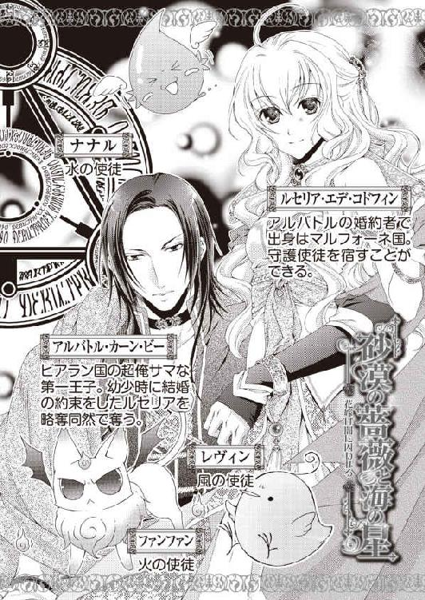
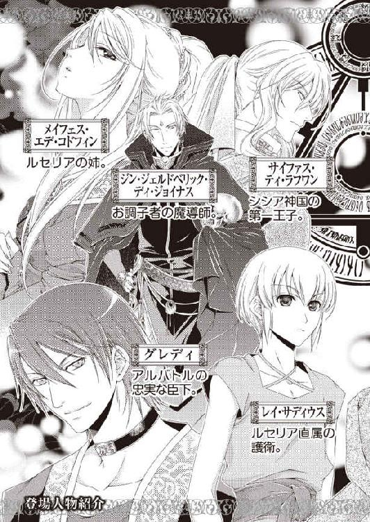
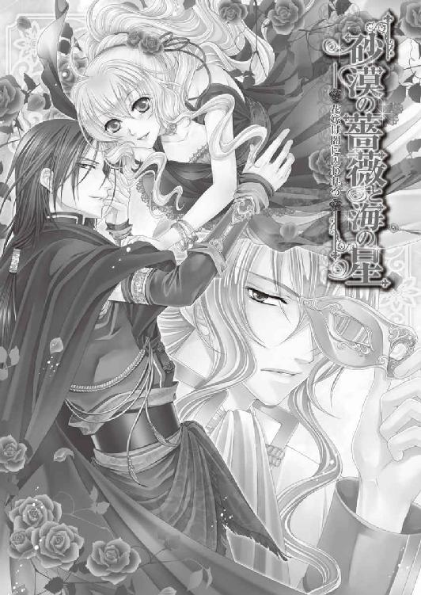
試着後も何度、見上げたかわからない。どれほど感嘆のため息をついたかも思い出せない。
それほど素晴らしい衣装がルセリアの目の前にある。これは華燭の儀でルセリアが纏う衣装で、今朝職人から届けられたばかりのものだ。
裾広がりの真っ白なドレス。特殊な織物なのか、薄くてふんわりしているのに、袖を通してみても肌は透けない。裾にちりばめられた夜空の星のような宝石は、値がつけられないほど高価なものらしい。
肩紐は細めで、前は胸の形に沿っているのに背中は大きく腰まで開いた大胆な形だ。肌があまり露わになると恥ずかしいのだが、ドレスの上から儀式用のマントを羽織るので、過剰に気にすることはないのだろう。
当日は髪をアップにしてまとめ、頭を金細工のアクセサリーで飾る。
両耳を覆うように編まれた金細工のレースは肩まであり、きっと太陽の光に映えるだろう。同じ金で編んだ腰飾りは、身体のラインに沿って網目状にドレスを覆っていた。
「本当に......素敵ね」
「はい。私、ルセ様がこれをお召しになって、アルバトル王子と華燭の儀を行われるのだと思うと、興奮して眠れません」
「私もよ......エミール」
ドレスの上に羽織るマントは刺繡が隙間なく施されていて、少し重い。
どれだけの人がこの衣装に携わってくれたのかと思うと、感激だ。
「ご主人様、嬉しそう。ズンズン」
「オイラにはどの服も同じに見える。ゴッホ～」
水の使徒・ナナルと火の使徒・ファンファンがドレスの前で話しているのを、エミールが青筋を立てて追い払う。
「ナナル、貴方は絶対この衣装を水で濡らすようなことはしないでくださいよ。もしそんなことになったらその小さな羽を引きちぎって、ぽいですからね」
「......エミールたん、怖いぞよ」
エミールは次にファンファンを指さした。
「ファンファンもです。燃えている尻尾を近づけないでください。たとえどんなうっかりなことがあっても、この衣装をほんの僅かでも焦がしたり、燃やしたりしたら、海中に沈めてあげますからね」
「ご主人様の大切なドレス、燃やしたりしないぞ。ゴッホ～」
ファンファンはむっとしていたが、アルバトルにするような無視はしない。最後にエミールは端でおとなしく佇んでいる風の使徒・レヴィンを指さした。
「レヴィンは......」
「ぼっぼっ......僕は......僕は......」
「ありません」
そう言ってにっこり微笑むエミールに、なぜかレヴィンは落ち込む。ニノキア国でルセリアの守護使徒の仲間入りをしたレヴィンは、外見はひな鳥に似ていて、常にゆらゆらと揺れている。ただ少々マイナス思考なところがあって、会話もたどたどしい。
「......なんだかぼっ、ぼっ、僕だけ仲間外れなんだな。僕は......いらない子なんだ......」
「レヴィンは悪戯なんてしない大人だって認めているんですよ」
「僕......褒められた。僕はオトナなんだな。お前たちは、ガキ」
急にレヴィンは態度を大きくして、他の使徒を馬鹿にする。どうもレヴィンはナナルやファンファンとあまり合わないようだ。
「なんだとう、レヴィン。オイラが燃やしてやるからな、ゴッホ～」
「ナナルは水攻めにしてやるぞよ」
「やめなさい。喧嘩はしないって約束したでしょう？」
ルセリアが強く言うと、三人は不満そうな顔をしつつも、おとなしくなる。
守護使徒はみな可愛い外見をしているが、ナナルは街を一瞬にして水没させることができるし、ファンファンは炎で焼き尽くすことができる。それにレヴィンは地上にある建物を吹き飛ばすほどの力を持っているのだ。
今はそんな巨大な力を使って互いに牽制したりはしないのだが、言い合いになるといつまでもやめない。
そんなときはルセリアが止めるしかないのだが、しばらくするとまたちょっとしたことで衝突している。
「ご主人様、レヴィンが煽った。ナナルは何も言ってない。ズンズン」
「そうだ、そうだ。レヴィンが悪い。ゴッホ～」
ナナルとファンファンは近くにいることも多いが、レヴィンは距離を取って佇んでいるか、ルセリアの中に戻って眠っている。彼らには相性のようなものが存在するようだ。
「......レヴィンと仲のいい使徒って誰なの？」
「あ、こいつはゴンゴンと仲がいいンだ。ゴッホ～」
「ゴンゴン......土の使徒ね」
まだ見ぬ土の使徒は今どこにいるのだろうか。使徒たちは互いの存在を感じることができるらしいが、ゴンゴンの気配は感じないそうだ。まるで自ら存在を消しているかのように。
「不思議ですよね。普通なら火と水って合わないような気がするんですが」
「じゃあ、闇の使徒・ゾフィーと光の使徒・エスペンザは仲がいいの？」
彼らはその問いに、ぼそぼそと話し合っていたが、ルセリアに答えはくれなかった。
「おうおうおう、これは見事な衣装だ。アルバトルの衣装もたいそうだったがな」
壁からいきなり姿を現した魔導師のジンは、ドレスを前に感動の声を上げる。
ジンは水晶髑髏に魂を囚われているため、肉体が存在しない。そのため、あらゆるところに出没できる。壁を突き抜けて姿を現すのだから、追い出すのも至難の業だ。
「私、アルバトルの衣装も見たいわ......」
「残念ながらたとえ姫様であってもお許しは出ないでしょう」
「こういうしきたりはない方がいいのに」
ビアランの華燭の儀は、最初、男女別々に行われる。その後、歴代の王族が眠る神殿で初めて対面し、互いの衣装もそのとき初めて目にするものなのだ。
「神殿......宮殿の背後にある『砂漠の宝石』と呼ばれている建物よね」
「はい。とても素晴らしい建物ですよ」
「そういえばまだ行ったことはないわ......」
神殿は儀式の期間以外は閉じられている。だが、ビアラン国の王子であるアルバトルにお願いすれば、もしかしたら案内してくれるかもしれない。
「アルバトルに頼んでみようかな」
「おお、そうすればいい。姫さんの頼みだ、アルバトルは喜んで案内するはずだぞ」
妙に浮かれた様子のジンは、言葉を続ける。
「そうだ、姫さんや。神殿に行くなら地下の霊廟を見てくるといいぞ」
「霊廟？ あ、グレディから聞いたことがあるわ。歴代の王やその家族のお墓があるのよね」
「おお、そうだよ」
「ねえ、ジン。そこには死後何年経っても変わらない姿の方がいらっしゃるそうだけど、本当なの？」
「本当だとも。あれは不思議だ。魔術ではない、我が輩も説明がつかん」
死者の中には、死後何年経っても変わりのない姿で眠りについている者がいるらしい。
そういった人々は、ビアランに伝わる伝説の乙女である『砂漠の薔薇』に愛された者だと密かに囁かれているそうだ。
本当かどうかルセリアは目にしたことがないが、グレディからそう聞いていた。
「ジンは行ったことがあるんだ......」
「実はこっそり何度も......な」
やけに嬉しそうに話すジンに、ルセリアは疑問を持った。
神殿は警備を除けば誰もいない場所。そんなところにジンはどうして通っているのだろう。
「お墓に知り合いの方でも眠っているの？」
「いやいや。別に......そういうわけでは。まあ、この話はよそう」
ジンが逃げ出そうとするのを引き留めるため、ルセリアは話題を変えた。
「......ねえ、ジン。ジンはネディアの人間だってニノキア国のマハーク王がおっしゃっていたけど、当時の記憶って本当に全くないの？」
「ないんだなぁ、まるで」
腕組みをしたジンは困惑した表情を浮かべる。が、ルセリアはジンの記憶が封印されている理由が気になっていたのだ。
「気分を害したらごめんなさい。あの水晶髑髏に肉体を奪われて封印されるって......何をしたらそんなことになるのかなあって、ふと思ったんだけど......ジンはそのあたりをどう考えているの？」
「......う～ん。そうだなあ。我が輩もどうして肉体のない幻のような存在にされたのかと考えることはあるが......自分からは確かに望まないだろうな」
ルセリアが気にしている理由の一つを、エミールがずばりと問うた。
「ジン、記憶を失う以前、犯罪を犯したとか言いませんよね？」
「なんだって!?」
ジンは裏返ったような声を上げる。本人も予想しなかったことのようで、驚きに目を見開いていた。
「そっ、そんなに驚くことですか？ ふと思っただけですよ」
「エミール......我が輩はショックだ。無性に悲しいぞ......」
驚くほど肩を落としているジンに、ルセリアは慰めるように告げた。
「そう落ち込まないで。ジンが記憶を取り戻せば解決するわ」
「......長年探し続けてきた記憶だ。そうすぐには戻らんだろう。まあ、あまり期待はせんでくれ。それより姫さんや、明日からシシアに向かうんだったな？」
「ええ」
明日シシア神国へ向けて出発することになっていた。
シシア神国のサイファス王子と、ルセリアの義姉メイフェスの婚儀が行われるため、ルセリアとアルバトルは正式に招待されていたからだ。
本来ならルセリアも心から祝福するところだが、これまで数え切れないほどルセリアとアルバトルの仲を裂こうとしていたサイファスと、闇の使徒・ゾフィーを宿すメイフェスとの婚儀だ。何か策略があってのことに違いない。
それが予想されていてもルセリアたちはゾフィーを止め、メイフェスを助けるために、招待を受けなければならなかった。
「ジンは同行してくださらないのですか？」
「分魂水晶はすでにニノキアに置いてきているからなあ。だが、例の砂時計なら三回の呼び出しは可能だ」
ジンの魂が宿る水晶髑髏は、このビアラン国を魔術から守る魔術防壁を兼ねた存在だ。そのため水晶髑髏が設置されている地下から持ち出すことは禁止されており、ジンも国外に出ることはできない。
ただ、分魂水晶があれば、ジンの分身を国外へ連れ出すことができるのだが、現在それはニノキアにあって、予備がない。
その代わりに砂時計の術を使う。ジンを直接連れていくことはできない代わりに、魔術を使って三回だけなら小さなジンを呼び出すことができるのだ。
使い方は簡単。逆さにした砂時計の砂がすべて落ちてしまうまでの間、小さなジンを三回まで呼び出せる。また砂時計を床に叩きつけて割ると、一度だけ僅かな時間だが、実体を呼び出すことができるのだ。
以前、やはりシシア神国で、ルセリアたちは砂時計のジンに助けられた。
「本当はね。一緒に来て欲しかったの」
「心配かね、姫さん」
「ものすごく」
未だ謎の多い守護使徒のことだけでなく、自分の出生についても情報が足りない。サイファスやゾフィーが何かを企んでいる中、シシアの魔導師であるカルソーニに〝暗黒の花嫁〟という呪いをかけられた義姉のメイフェスも助けたいのだ。
問題が何ひとつ解決されていないのに、自分の華燭の儀で着る衣装を眺めて喜んでいていいのかという、申し訳ない気持ちにもなる。
「我が輩もアルバトルと相談して何重もの対策を練っておる。そう、心配しなさんな。だいたい姫さんは使徒を三つも持っておるんだぞ。あっちは一つだ。なんとかなる」
「ありがとう、ジン」
あまり深刻に考えないようにしようと何度となく自分に言い聞かせていたのだが、ふとしたきっかけで心が囚われてしまう。
気持ちを切り替えようと立ち上がったところでルセリア専属護衛のレイがやってきた。
「姫、王子が呼んでいる」
「あ、うん。わかった」
衣装部屋から出て自室へと戻るとグレディが迎えてくれた。彼に促されて移動すると、アルバトルはバルコニーに置かれた椅子に座って茶を飲んでいた。
横から見る彼の顔立ちは彫りの深さが際立っている。浅い額に、すっきりとした鼻梁。知的に伸びる眉、長い睫に彩られた瞳は鋭い。長く艶やかな黒髪は後ろでひとまとめにしている。容姿が整いすぎているためか、考え込んだ表情が、どこか怒っているように見えなくもない。
もっともアルバトルは激昂しやすいタイプなので、間違ってはいないのかもしれないが。
「アルバトル。素晴らしいドレスが届いたの」
「ああ、聞いている。気に入ったようで何よりだな」
アルバトルは持っていた杯を下ろし、ルセリアを引き寄せると、自らの膝に座るよう促してくる。ルセリアは照れながらもアルバトルの膝へ腰を下ろしたが、回された手がくすぐったい。
「......華燭の儀の衣装がいつの間にかできあがっていてびっくりした」
「先に知れば、そなたがまた逃げ出すだろうと思って黙っていた」
腰から離れた手がルセリアの髪を梳いたり、剝き出しの肩に触れる。その間もアルバトルの見上げる瞳がルセリアの青い瞳を捉えて離さない。
もともと冷たい美貌を持つアルバトルは、親しみやすい笑顔など浮かべたためしがない。だから無言で見つめられると、羞恥から心臓の鼓動が速まり、言葉を探せず額に汗が浮かぶ。
「そ、そんなに見つめないで。もう逃げ出したりしないんだから......」
「そうか？ ならいいが。そなたの行動は読めん」
アルバトルの唇が触れる首筋がやけに熱く感じる。
レイやグレディが側にいるのに、この時と場所をわきまえない行為に、ルセリアは頰だけでなく全身が真っ赤になりそうだ。
「あ......アルバトルの衣装も届いたのよね。きっと素敵なんでしょうね」
「見せてはやれないが、それなりにできあがってきた。だが、華燭の儀がサイファスより後でよかった」
不思議なことを言うアルバトルにルセリアは首を傾げた。
「どういうこと？」
「後からの方がより豪華にできる」
「......はい？」
この状況にあっても、サイファスの執り行う儀式より立派なものにしたいという、アルバトルの対抗意識には呆れるほかない。
「こういった行事は国力を試される場だ。まかり間違っても、シシアの儀式に劣るようなことはあってはならん」
「別に豪華じゃなくても、私は二人だけの質素な式でもいいんだけど......」
「それは無理だ」
あっさりとそう告げるアルバトルの事情も、ルセリアは理解しているつもりだ。
四大国の一つであるビアラン国の王子が后を迎える。しかもアルバトルは次期国王と言われているのだから、それ相応の婚儀が求められるに違いない。
「アルバトルのお母様とエルドナル王との華燭の儀も、盛大だったんでしょうね」
「......そなたは俺の母に会ったことがなかったな」
「え......ええ」
アルバトルはルセリアを膝から下ろして、椅子から腰を上げた。
両親の華燭の儀が盛大だったのかどうか答えてくれないのは、もしかして聞いてはいけなかったのだろうか。
「グレディ」
「はい。少しならお時間がありますよ」
傍らに佇んでいたグレディは、すべて心得ているようにそう答える。彼らの意図がまるでわからないルセリアはアルバトルに尋ねるような目を向けた。
「ルセリア、今から神殿を案内してやろう」
アルバトルがそう言って差し出した手を取ったルセリアは、久しぶりに二人で過ごすことのできる時間に、ちょっぴり胸を高ぶらせていた。
神殿は宮殿の東に位置する。そこへは宮殿をぐるりと回って向かう道と、奥宮殿を抜ける道がある。ルセリアはアルバトルの後を追い、後者の方法で神殿へ向かった。
奥宮殿の回廊を抜けて外へ出ると、神殿まで石畳が長々と続く。歩いて行くには遠すぎるため、アルバトルの馬に乗って、ルセリアは神殿へ向かった。
遠くから眺めるだけでも神殿の荘厳さは明らかだったが、近くで見るとますます胸の高まりが収まらず、ルセリアは興奮していた。
建物には、大理石の列柱に支えられた石と煉瓦でできた二重アーチ式のアーケードが描かれている。円弧が組み合わされたアーチが壁に沿い、柱にはすべて植物描写がされた彫刻が施されていた。恐ろしく長い時間をかけて彫られたとわかる細工は、驚くほど精密だ。
入り口は馬蹄型アーチになっている。上部には五つの半円が重なりながら載っていて、それを複雑に組んだ助材が支えている。扉には柱と同じように彫刻がされていて、いつまでも眺めていたいほど、繊細で美しい。
「わあ......素晴らしい建物ね」
「俺には見慣れた場所だがな」
馬から下りると、神殿手前に建てられている監視小屋からやってきた兵士に馬を預ける。入り口の大扉は儀式の際にのみ開かれるため、傍らにある人一人が出入りできる程度の扉に案内された。
「どうぞお気をつけて」
「ありがとう」
ルセリアはアルバトルとともに神殿へと入り、後からグレディとレイがついてくる。
床は歩く姿が映るほど綺麗に磨かれている。頭上にある明かり取りから落ちる太陽の光が幾筋もの柱のように広間に浮かび上がり、幻想的な空間を作り上げていた。
「とても静かね」
「ああ。神聖な場だからな」
「ここで華燭の儀を行うのよね？」
「そうだ」
アルバトルはルセリアの手を取って引き寄せる。さらに彼の手はルセリアの額にかかる髪を愛おしそうに撫で上げた。
「美しく着飾ったそなたはここで、この俺に永遠の愛を誓う......」
「アルバトル」
「早くそなたの身も心もこの俺だけのものにしたい」
情熱的な視線を向けながらアルバトルはルセリアの顎に手をかけ、唇を重ねようとしていた。が、せっかくのいい雰囲気も、守護使徒たちの会話に邪魔される。
「ご主人様、二人きりになるとすぐにいちゃいちゃするからナナルつまんな～い。ズンズン」
「いっそのこと、あいつ燃やしてしまうか？ ゴッホ～」
「そっ......そ、そんなこと......しちゃ......だめなんだな。お前たちは......下等だ」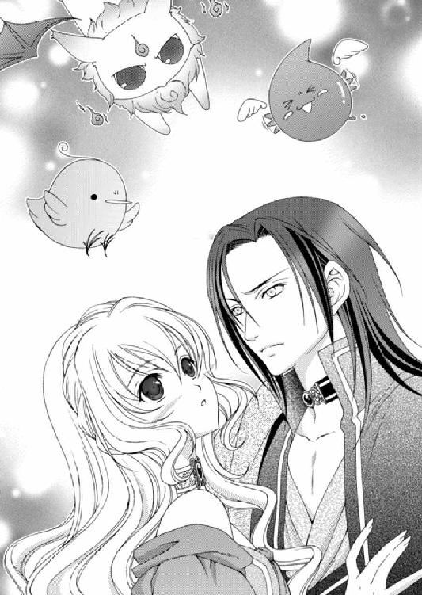
アルバトルはルセリアを離すと、三人に聞こえるようなため息をついた。ちょっぴり甘い口づけを期待したルセリアは、守護使徒たちの言い合いに割って入る。
「いい加減にしなさい」
ルセリアはそう言ったが、守護使徒たちは無視をする。
「なんだとう～レヴィン！」
「お前から真っ先に燃やしてやろうか、ゴッホ～」
「もう、やめなさいっ！ 喧嘩はだめって言ってるでしょう？」
さすがに怒りだしたルセリアに守護使徒たちも反省したのか、ぶつぶつ文句を言いながらも喧嘩をやめた。
「困った奴らだ」
「あれでも少し落ち着いたのよ。レヴィンがやってきた最初の頃はひっきりなしに言い合いをしていたもの。それに、あれは何、これはどう......って聞かれる回数も一人分増えて大変」
アルバトルに手を引かれ、ルセリアは神殿の奥へと向かう。いくつもの部屋や柱を通り過ぎて、ようやく突き当たりまで来ると、半円を描くように地下へ向かう階段が現れた。
「この下だ」
「うん」
階段の壁にはカンテラがぶら下がっていて、煌々と明かりが灯っている。下から流れてくる空気はひんやりとしており、清々しい気分だ。
「そういえば、ジンと地下の書庫で本を読みあさっているそうだな。本当に使徒がそんなことをしているのか？」
「退屈だからジンをまねて遊んでいるだけだと思うけど」
「よくわからん奴らだ。ああ、ルセリア、ここだ。地下の霊廟だ」
階段を下りきると進行方向に扉が現れた。
天井まである両開きの扉は鷹と薔薇が彫り込まれていて、重厚な閂がされている。その両端には手の平を広げたくらいの大きさの錠がぶら下がっていた。
後ろに控えていたグレディが前へと進み、錠に鍵を差し込んで開けると、レイが閂を外す。
重厚な扉を音もなく押し開いて、グレディは真っ暗な広間を前にして一つ手を打つ。すると暗闇だった場所に光が満ちた。
「......これは魔術？」
「いいえ。こちらの壁には特殊な鉱石が混じっているようで、振動で一定時間発光するのです」
「途中で消えたりしない？」
「大丈夫ですよ。歩くという振動だけでもずっと先まで明かりが灯ります。さあ、どうぞお入りください」
中へ入るよう促してくるグレディだが、彼は扉のところに立ったままで、レイだけがついてくる。
「アルバトル、グレディはこないの？」
「ああ」
アルバトルの側を離れないグレディがどうして中に入らないのかわからないが、ルセリアたちは彼を残して先を急いだ。
「グレディがついてこないのには、何か理由があるの」
「......目にすると当時のことを思い出すようだ」
「......え？」
「いや、いい」
話せない事情があるのか、アルバトルはそう言って話題を変えた。
「この広間から脇に繫がる通りには行くな。必ず迷う。迷って戻ってこなかった者も過去にはいるからな。この地下をすべて把握している者はおそらくジンだけだろう」
アルバトルの言葉を裏付けるかのように、広間には不規則な通路入口が無数にあって、その幅も数も様々だった。ただ、ルセリアはこの形をどこかで見たことがあった。
「あっ......。ワームの巣に似てるんだわ」
「そうだ。俺もあそこに落ちてから、ここに似ていることに気がついた」
壁にたくさん開いた横穴は形よく整えられ、そこに棺が納められていた。壁には名前と生きた年代などが記された細長い板がはめ込んである。
「じゃあ、もともとワームの巣があったところにこの建物が建てられたってことなのかしら」
「そうかもしれないな」
アルバトルはルセリアの手をしっかりと繫ぎ、さらに奥へと向かう。
もとは壁だった場所を柱の形に掘り出してあり、技術の限りを尽くした彫刻は、繊細かつ大胆なものだった。ただ、一階で見た彫りとは若干違う。地下の装飾はもっと細かい部分まで手を加えられていて、長い間かかって造り上げられたことがわかる。
「ここは歴代の王や親族の墓だ。奥に行くほど高貴な位とされている。だが、あちこちに通路や部屋があるためか、この場所のすべてを知る人間はいない」
「迷いそうね......」
「ああ。だから気をつけろ。そなたはすぐうろうろと勝手な行動をするからな」
アルバトルはそう言って、笑った。
くつろいでいるときだけに見せる、アルバトルの柔らかな笑み。皮肉を滲ませた笑みはあれど、他の誰にも見せない、ルセリアだけに向ける特別な笑みだ。
「そんなことしないわ」
「どうだかな......」
繫いだ手を離さず、歩幅を合わせて歩いてくれていることに気づくとき、ルセリアは胸が熱くなる。
アルバトルは激しい性格を持っていて、怒ると手がつけられないところがあったが、それは好きな相手をどう扱っていいのかわからなかっただけだと気づいた。
「......なんだか......急に寒くなったわ」
ルセリアが呟くようにそう口にすると、隣を歩いていたアルバトルが自らの懐にしまい込むよう肩を引き寄せる。
「これでどうだ？」
「ありがとう。もう寒くない」
足音による振動で、奥の暗闇が光に駆逐されていく。その行く手に石棺が現れた。真っ白な石棺は顔が映るほど磨かれているが、冷たい印象はない。どちらかというと温かみを感じる白さだった。
近づくと石棺の蓋は開いていて、中に女性が横たえられている。
アルバトルによく似た――この場合はアルバトルが女性に似ているというのだろう。
「もしかして、アルバトルの......お母様？」
「ああ」
すでに亡くなって何年も経つはずなのに、アルバトルの母、アミタはまるで眠っているようだった。
彫りの深い顔立ち。小作りの輪郭。ビアランやこの近辺に住む人たちの顔立ちとは違い、まるで神が彼女を愛でてあらゆる美を与えたようだった。
しかも、目を閉じているのに輝かんばかりの美貌は僅かも衰えない。もし目を開けていたら、彼女を目に映す人間すべてを魅了していただろう。そんな想像をしてしまうほど、眠るアミタは美しかった。
「なんて美しい人なの......」
長い黒髪は艶やかで、雪を抱いたような白い肌は驚くほど滑らかだ。唇はみずみずしく、微笑を浮かべているように口の端がほんの少し上がっていた。
ごく薄くオレンジに染められたシンプルなドレスを着ている。温かみのある色味がアミタの肌の色をいっそう際立ていた。
あの王が寵愛した女性だから過剰な装飾をされていてもおかしくないのだが、アミタは首から細い金のネックレスをかけ、左手首に五連のブレスレットをはめているだけだった。
そのブレスレットはルセリアの左手首にあるものと似ている。
よく観察してみると、ルセリアのものも含めてすべてを重ねることで、一つの模様が浮き上がるようだ。本来は六連で一組のブレスレットのうち、一本をアルバトルがルセリアに贈ってくれたのだと気づいて、感動で胸が熱くなった。
「父は母を様々な宝石や貴金属で飾ろうとしたようだが、何を身につけても似合わないことに気づいて、結局、すべての装飾品を外した」
「ええ......わかるわ」
装飾など必要がない。それほどアミタは美しいのだ。
ルセリアが見下ろしている傍らにアルバトルは近づいて肩を抱く。
「母上。今日は俺の......いえ、私の后となる女性を紹介するために参りました。彼女の名前はルセリア・エデ・コドフィン。素晴らしい女性です。私はすべてをかけて彼女を愛し守るつもりです」
アルバトルは今までになく真摯な眼差しで眠る母に向かい、最高の賛美をもってルセリアを紹介してくれている。そんなアルバトルにルセリアは胸打たれ、つられるように口を開いていた。
「私......ルセリア・エデ・コドフィンと申します。何も特別なものは持っていませんが、アルバトルを心から愛しています。それだけは誰にも負けないつもりです。どうか私たちのことを見守ってください」
ルセリアは何を言っていいのかわからず、しどろもどろになりながらも、今の気持ちを正直に言葉に乗せた。
アルバトルは小さく笑いながら石棺に背を向けると、その場に座る。ルセリアも同じように座って、アルバトルに凭れつつ、尋ねた。
「アルバトルのお母様ってどんな方だったの？」
「そうだな......母はとても不思議な人だった」
「不思議な......人？」
ルセリアがアルバトルを覗き込むと、彼は過去を思い出しているのか、遠い目をしている。
「ああ。人の死を予見したり、川の氾濫の日を正確に言い当てた。俺はあまりよく覚えていないが、グレディは詳しく覚えているらしい」
「予知の力をお持ちだったの？」
アルバトルは少し考るように顎を撫で、頷く。
「そのようだが、いつでもわかるものではなかったそうだ。白昼夢のように突然映像を見たり、夢でほんの少しばかり未来をかいま見るような、自分で制御できるものではなかったらしい」
「先のことが見えるって......怖いわ。先のことが見えたら、結果を変えることができるかもしれないけど、できなかったときのショックは知らなかったときより大きいもの」
周囲もそんな目で見るはず。見えるのだから変えられるはずだと。けれどいつだってそう上手くいくものではない。それを理解できない人もいるだろうし、責任をアミタに向ける人もいたかもしれない。
「ああ......母も同じような考えだったらしい。母は見たり知ったりしたことをあまり口にしなかったそうだ」
「そうなの......でも、アルバトルのお母様にはどんなふうに世界が見えていたのかな......」
「母が生きていたら......聞いてみたかったな」
アルバトルは石棺に頭を凭れさせて頭上を見上げている。
幼い頃に母を失う辛さは、義母を病で失ったルセリアにも理解できるつもりだった。
まだ甘えたい頃だ。義母の膝に寝転がると、世界から不安が消えて安心できた。そのすべてを失った日のことを今も鮮やかに思い出せる。床に伏せる義母の笑顔が見たくて、ルセリアは寝台の周りを摘んできた花で埋めた。頭を撫でる手。髪を梳く指。
「尋ねないのか？」
「......え？」
「母の死の理由」
以前エミールが、アルバトルの母が幼い頃に亡くなった話をしてくれたが、その理由については言葉を濁した。あのとき気になったが、聞いてはいけないことのように思え、ルセリアは追求しなかった。
けれどその後、ジンにアミタの謎めいた死について聞かされ、ある疑惑を持った。もちろんアルバトルには話したことはない。
「何か母について噂を耳にしたか？」
ルセリアは頭を左右に振った。
しばらくアルバトルは沈黙していたが、ゆっくりと話し始めた。
「俺が十一歳のとき、母は亡くなった。いつものように休み、朝目覚めたら父の隣で冷たくなっていたそうだ」
そこまで話してアルバトルは言葉を止めた。心の中でいろいろ整理をしているようにも見え、ルセリアはアルバトルに身を寄せながら、待った。
「......前日まで病気の前兆もなく突然のことだった。健康に問題がなかった母の死の理由を、父は暗殺ではないかと疑った」
やはり――。
ルセリアは声を発することなく沈黙した。
「母を失った父は、今までにない姿を俺に見せた。父が号泣する姿を見たのは最初で最後だ。今もよく......思い出せる」
女好きで我が子の婚約者にまで手を出そうとしたエルドナル王が、亡き妻を思い涙を流す姿など想像がつかない。とはいえ、正妻の子を差し置き、アルバトルに王位を継がせようとするほど溺愛しているエルドナルだ。その母であるアミタへの愛情は、砂漠を照らす太陽より熱く、海よりも深かったに違いない。
「アルバトル......」
「母と同じように俺が死ぬことを恐れた父は、俺を密かにマルフォーネへと行かせた。もし母が暗殺されたのなら、犯人を見つけるまで安心ができなかったからだろう」
ルセリアはそのときアルバトルと出会った。アルバトルの母が倒れなければ、ルセリアは彼と出会わなかったのだろうか。
「それで......原因はわかったの？」
「結局、判明しなかった。父はお気に入りだったはずのアビシュテをまず疑ったからな。父にとって母は......それほどまでに特別だったようだ」
アミタが生きていた頃はどんな女性だったのだろう。どんなふうに物事を考える人だったのだろうか。これほどまでに人を魅了するのだから、素晴らしい女性だったに違いない。
生きて会えなかったことが悔やまれる。
「暗殺か自然死か、結局、わからず俺は父に呼び戻されたが......もうずっと俺は母の死に疑惑を抱き、そして恐れている」
「何を恐れるの？」
「暗殺ならば犯人は野放しだ。いつまた誰かが殺される可能性がある。だからこそ......そなたの杯に毒が入っていた事件には心底肝が冷えた」
アルバトルから回されている手に力が込められる。それは痛いほどだった。触れ合う身体から彼の恐れが伝わってくる。
「あれは私じゃなくてアルバトルが酷い目に遭ったのよ」
「......そなたには話していなかったな。あれは死に至る毒ではなかったんだ」
「えっ!?」
初めて知る事実にルセリアは驚きの声を上げていた。
「使われた毒は『ジリッタ』というものだった。ここからもう少し南の高山に繁殖する植物の根を煎じたものらしい。その『ジリッタ』だが、神官が儀式で使用するもので、これを口にした者は仮死状態に陥り、時間が経てば何事もなかったように目を覚ますそうだ」
「......でもアルバトルはとても苦しんだわ」
「放っておけば自然と薬の成分が外へ出るところ、俺は治療のため他の薬を服用したことで、本来とは違う症状が出たようだ」
なら、何もせずにいれば自然と目が覚めたというのか。どういう意図でそんな薬が使われたかはわからないが、ルセリアは腹が立った。
「早くそれを知ることができていたら、アルバトルもあんなに苦しまなかったのに......」
「だが、おかげでそなたの手厚い看病を受けることができた。悪い思い出ではないな」
アルバトルはルセリアの髪を指に巻き付けて梳かす。
その指の動きにいつしか笑みが浮かぶ。
確かにアルバトルを看護しながら、ルセリアの気持ちは変化していった。あの出来事がなければ今もまだルセリアはアルバトルから逃げようとしていたかもしれない。
「問題は、何者が『ジリッタ』を使ってそなたを死んだと思わせ、この国から連れ出そうとしたか......だ。その犯人が見つからぬ間は、気が抜けん。シシアの仕業であることも大いに考えられるからな」
「身近に危険な人間が潜んでいるってことなの......ね」
「ああ。宮殿内部にも他国の手の者がいないとはいえん。どこの国でもこればかりは容易に解決できない問題だ。召使いだけでなく兵士も厳しい審査を課しているのに、な」
長年仕えてくれている相手であっても信用できないとアルバトルは言い含めている。
マルフォーネにいた頃はこんな心配などせず生活していた。けれど、以前はどんな暮らしをしていたのか、ルセリアはよく思い出せなくなっていた。
「あのときの私は......アルバトルから逃げ出したかった。この国から逃げ出したかった。そんな私に同情した誰かが助けてくれようとしたとも考えられるわよね？」
「かもしれん」
ルセリアはアルバトルと顔を見合わせ、脳裏に浮かんだ人物が互いに同じであることを確信した。
「......アルバトル」
「ああ。俺も同じ人物を思い浮かべた」
レイしか考えられない――。
あのとき味方になってくれていたのはレイだけだ。レイだけがルセリアの希望を叶えようとしてくれていた。
「聞かないで」
「ルセリア」
アルバトルはどこか非難めいた声音でルセリアの名を呼ぶ。苦しむアルバトルの姿は今も鮮やかに思い出せるし、ルセリアの胸が痛みで押しつぶされそうになっていたことも確かだ。
犯人を見つけたら許さないと考えてきたが、行き着いた犯人かもしれない者の意図を知り、怒りは消えてしまったのだ。
「ルセリア」
もう一度名を呼ばれ、ルセリアはようやく口を開いた。
「......私もレイを思い浮かべたわ。でも仮にレイが犯人だったとしても、悪気はなかったことはわかってる。私のためだったって。だからもう犯人捜しはやめない？」
「確定をしておかねば、俺が安心できん」
ただルセリアのことを思い、この国から脱出させようとして使った薬が、間違った効果を発揮してしまうことになった。その人物が誰なのかをはっきりさせておかなければ、違う者だった場合の問題が残されてしまう。
「はっきりさせてしまったら、罪に問わなくてはならないとか......言いださないわよね？」
「......」
「もう、アルバトル！」
はっきりしないアルバトルの肩をルセリアが拳で叩くと、彼は聞こえるようなため息をついた。さらにルセリアがレイを擁護しようと口を開くのと同時に、守護使徒たちが柱の陰で控えていたレイに絡んでいた。
「レイたん、ご主人様をアルたんから引き離そうとしたのか？」
「なンの薬を盛ったンだ、ゴッホ～」
「そそそ......そういう......疑いは......やめなよ」
一体、何を言っているのだと、ルセリアは思わず立ち上がっていた。
「......なっ、貴方たち、話を聞いていたのっ！」
「ふん。たまには役に立つではないか」
アルバトルの言葉を無視して、ルセリアはレイを呼んだ。彼は相変わらず感情を窺えない無表情のままルセリアのもとへとやってくる。
「僕に用か？」
「守護使徒たちの言ってることだけど......」
「......何の話をしている？」
「ルセリアがビアランに来た頃、お前がルセリアに毒を盛ろうとした話だ。もっとも俺が飲んで酷い目に遭ったがな。犯人はお前だったのか？」
アルバトルのよく切れるナイフのような鋭い言葉にも、レイは顔色一つ変えない。
「レイ、答えなくていいのよ」
「......いや。確かにあれは僕がやったことだ」
レイは隠すことなくあっさりと白状した。彼の目は真剣で罪悪感は感じられない。ルセリアのためだったと信じているからだろう。
「......レイ」
「当時、姫は王子から逃げることしか考えていなかった。そんな姫の望みを叶えようとしただけだ」
「そ......そうよね......」
チラッと肩越しにアルバトルの様子を探ると、彼は腕組みをしてこちらを見つめている。剣に手をかけていないことから、今ここで斬り捨てるつもりはないようだ。
「なぜ今まで黙っていた？」
「聞かれなかったからです。それに毒ではありませんでした」
いつものようにレイはぶっきらぼうに答えたが、アルバトルは不機嫌そうに眉尻をぴくりと動かす。
「ああ、そうだったな」
「罰が必要なら僕はいつでも受けるつもりです」
「待って。私にとってあの事件は、アルバトルの優しさに気づくきっかけになったのよ。もしあのことがなかったら......私は今もまだ貴方から逃げていたかもしれないわ」
「......」
む～っとした表情のまま答えてくれないアルバトルに、ルセリアは両手を上下させて名前を呼ぶ。
「アルバトル！」
「......わかっている。別に罰を与えようと考えているわけではない」
「レイ、よかったわね。アルバトルは許してくれるって。もう心配しないで、このままずっと私の側にいて警護してね」
ルセリアはアルバトルの気持ちが変わらないうちに、彼が許した事実を言葉にして聞かせた。こうすることで、前言撤回される機会を回避しようと考えたのだ。
「当然だ」
レイは力強くそう答えたが、アルバトルは別のことを彼に問うた。
「ところでレイ、お前はどこの出身だった？」
「タービルの港町で生まれました」
「本当か？」
「はい」
アルバトルに問われたことをレイは疑問に感じているような表情など一切浮かべず、淡々と答えていた。
どうしてそんなことを聞いているのかとルセリアが疑問に思いアルバトルを窺うと、彼はレイを恐ろしい顔で睨み付けている。が、レイは相変わらず表情を変えない。
「アルバトル、どうしたの？」
「......いや、ニノキアのマハーク王の言っていた、ビアランに潜入している密偵の一人ではないかと疑っている」
「いいえ」
「だが、どう考えても......」
きっぱり否定するレイに、アルバトルがなおも問い詰めようとすると、グレディが柱に隠れるようにして顔を出した。
「あのう......坊ちゃま！ お取り込み中失礼します。よろしいですか？」
「グレディ、そんなところから呼ぶな」
「私は......そちらへは参れませんので」
どういう理由からかはわからないが、グレディは一定の距離を取ったまま、こちらへやってくる様子はない。
「ああ、なんだ」
「カリステロ国の女王の名代がいらしているのですが、一緒に訪れている人物が......」
「どうした？」
「ハーヴェイ殿です！」
グレディはひときわ大きな声でそう言い、満足そうに微笑んだ。
「えっ、ハーヴェイ!?」
ルセリアはここで耳にすると思わなかった人物の名に驚き、自然と笑顔になっていた。その傍らでアルバトルがちっと舌打ちした。ハーヴェイは表向き、『氷の魔女』と異名をとる最北のカリステロ国の女王、ジャッジア・エルトンの名代エナミの召使いとして同伴していた。
カリステロ国の女王、ジャッジア・エルトン――。
最北に位置する氷に囲まれた土地を治める女王。御年八十を超え未だ精力的に政をこなす女王だと聞いていた。だが、寄る年波には逆らえず、女王自身の他国への訪問はここ数年見送られているらしい。
名代のエナミは女王の代わりに、アルバトルとルセリアに婚儀の贈り物を届けに来たという。
彼女は女王の五番目の孫で、どの孫よりも女王に気質が似ているそうだ。
すでにエナミはエルドナル王への謁見を終えていたため、アルバトルは一番小さいハイサムの間で挨拶をすませることにした。
「王子、いらっしゃいました」
「......ああ」
グレディの声に顔を上げると、エナミが兵士に案内されて謁見の間に入ってきた。
抜けるように白い肌。長い首には耳下から肩にかけて、呪文のような絵文字が描き連ねられており、大振りのイヤリングが左右に揺れている。
長い睫に彩られた藍色の瞳には知性と意志の強さが感じられた。
華奢な身体に似合わない重そうなドレスと、砂漠に囲まれた灼熱のこの国では狂気の沙汰かと思われるほどの、分厚い外套には同情を禁じ得ない。しかし、エナミはどれほど暑くとも、女王の名代で訪れているため外套を脱ぎ捨てることはできないのだ。
エナミはアルバトルの座る椅子の前までくると、屈んで頭を下げた。
「この度は、砂漠の王のご子息が、大変貴重な姫君を后として迎えられると伺い、我が女王ジャッジア・エルトンからお喜びを伝えるようにと賜って参りました」
「遠路はるばる、ようこそお越しくださいました。ジャッジア女王の温かなお心遣いに感謝しておりますとお伝えください」
「ありがとうございます。帰国いたしましたら、王子のお言葉すべてを伝えます」
きりりとしたエナミの態度に感服しつつ、アルバトルは告げた。
「長旅でさぞお疲れでしょう。心ゆくまで我が国に滞在し、土産話をお持ち帰りください」
「いえ、このままシシアの婚儀に名代として参加いたしますゆえ、明日の朝にはおいとませねばなりません」
「では、今夜はごゆるりと過ごされるといい」
「ありがとうございます」
エナミは深々と頭を下げると、謁見の間を後にした。すぐさま傍らで控えていたグレディがやってくる。
「やはりカリステロ国は名代でしたね」
「女王は八十を超えていると聞いているからな。長旅はさすがに無理だろう。それより、ハーヴェイが一緒だと聞いていたが？」
「......ええ。いらしてはいるのですが......」
苦笑するグレディに、アルバトルは先に誰と会っているのかすぐに理解した。
「ああ、そうか。ルセリアと会っているのか」
サイファスの性格は最悪だが、容姿端麗だ。そのサイファスの双子の兄であるハーヴェイも同じだけ麗しい。けれどサイファスと違ってしっかりとした常識を持った紳士であり、誰にでも好かれる人の好さを持っている。そんなハーヴェイがルセリアの側にいると、アルバトルは心穏やかにいられない。
「姫はハーヴェイ殿にお茶をごちそうされているだけですよ」
「わかっているが......あの男と同じ顔というだけで腹立たしい」
吐き捨てるように言うアルバトルに、グレディは笑いを堪える。自分の気持ちを見透かされている事実に、アルバトルはさらに腹立たしい気持ちに駆られた。
「ご一緒されたらよろしいのですよ」
「そうだな。......だが、明日の出立の前に、確認しておかねばならないことがある」
「ええ。そうでした」
アルバトルは謁見の間を後にすると、ルセリアのことが気になりながらも、グレディと共に地下の所蔵庫へ向かった。
場所は宮殿のほぼ真ん中、奥宮殿と呼ばれるところにある。
本来は王子であるアルバトルであっても何度か入室のチェックがあるものの、父のエルドナルにルセリアの中に棲まう使徒の話を打ち明けたときに、しばらく所蔵庫へ自由に行き来できないかと相談をして、許可を得たのだ。
歴代の王ですら所蔵庫にどれほどの本が収められているのか、たとえ生涯をかけようとも知ることは叶わないと言われる巨大な本の宝庫。
そこには古の歴史書やすでに失われたといわれる稀少な魔術書も多く収められており、現在は魔導師のジンが棲まい、目録を作っている。
「サリマエル王子が午前中からいらっしゃっているそうです」
「あまり無理をさせるな。また熱を出すぞ」
「ご本人たっての希望ですので......。何より、王子のお力になれることを本当に喜んでいらっしゃるようですよ」
義弟のサリマエルは身体があまり丈夫ではなかったため、小さな頃から寝台を離れられない生活を送っていた。
そんなときは本ばかり読んで過ごしていたから、地下の所蔵庫で本を探したり、辞書を手に他国の読み物をひもとく作業に苦痛を感じないらしい。
また一度見たものを記憶することに関し、サリマエルは非常に卓越した能力を持っていることをアルバトルはつい最近知った。
「そうか......」
「先日の旅で、ずいぶんと大人になられたようですね」
ジャニーン姫の企みにより、父であるエルドナルに襲われそうになったルセリアを助けたことから、そのままサリマエルはニノキアに向かうアルバトルたちと行動をともにした。
幼い恋心をルセリアに抱いたサリマエルには腹も立てたが、役に立ちたいと必死に願う弟の一途さにアルバトルは溜飲を下げた。
「足下にお気をつけください」
分厚い扉が開かれ現れた地下へ向かう階段は、人が一人通ることができる幅しかなく、底が見えないほど深い。ひんやりした空気がふわりと這い上がってきて、頰を撫でる。
石造りの階段は狭く、壁にも石のブロックが隙間なく組まれており、両壁には腰ほどの位置に丸い穴が等間隔に開いていた。
この地下は所蔵庫の他に宝物殿や大広間がいくつもあり、有事の折の、王族や大臣たちの避難所としても設計されていた。そのため、侵入者があっても、一気に人がなだれ込めないように狭く造られていて、ここでもたつく敵を向こう側から槍で突くことができるようになっていた。
この避難所を使うことにならねばいいが――。
アルバトルは階段を下りながらも、予想もつかない暗雲が未来に立ちこめている不穏な空気を感じ取っていた。
父の手腕やこの国の軍事力に自信がないというわけではない。ただ、人の手では対抗できない力をゾフィーは持っている。そこに不安があるのだ。
ゾフィーに一矢報いることができるのは、魔導師のジンしかいない。
「王子が留守のときに何か仕掛けてくるでしょうか」
「......ワームが砂漠を守っている限り、無理な侵攻はないと思うが、国の守りも整えておかねばならん」
「そうですね」
階段を下りきると、身長の二倍ほどの高さがある扉が現れた。その表面には薔薇と蔓のような茎や葉が層になるように彫られている。
扉の左右を護る兵士がアルバトルに気づくと、グレディが声を掛ける前に壁に設置された鎖を引き、重い扉を開けた。
扉の向こうは、まっすぐな通路が奥まで続いている。アルバトルたちはさらに奥へ向かい、ひときわ大きな鉄の扉の前にたどり着くと、その脇にある普通の小さな扉にグレディが鍵を差し込んで開き、中に入った。
壁の明かりに浮かび上がった所蔵庫は、天井まで届く棚が所狭しと並んでいて、大小様々な本がぎっしりと詰まっている。初めてここへ来たとき、本の古くさい匂いにうんざりしたものだった。
「おうおうおう、アルバトル来たか」
アルバトルに気づいたジンが奥からやってきた。肉体のない彼には障害物というものがないため、書棚も突き抜けてくる。
「例のものは準備ができたのか？」
「できておるとも。今はいい助手がいるからなあ」
素直で勤勉なサリマエルはジンにとっていい助手になっているようだ。
本棚の通路を抜けて奥へと向かうと、書を読むために設置されている細長い卓が現れた。サリマエルはちょうど真ん中に座っていて、左右に本を積み上げ何やら難しい顔をしている。
卓にはサリマエルだけでなく、人の形をすべて残した骸骨も座っていた。
一見すると奇妙な光景だが、ジンは普段この骸骨に乗り移って書庫の目録を作っているのだ。
「サリマエル王子」
グレディが声をかけると、よほど集中していたのか、身体をビクンと震わせて手前の本を床に落とした。
「あっ......兄上！ いらしていたとは気づかずに......すみません」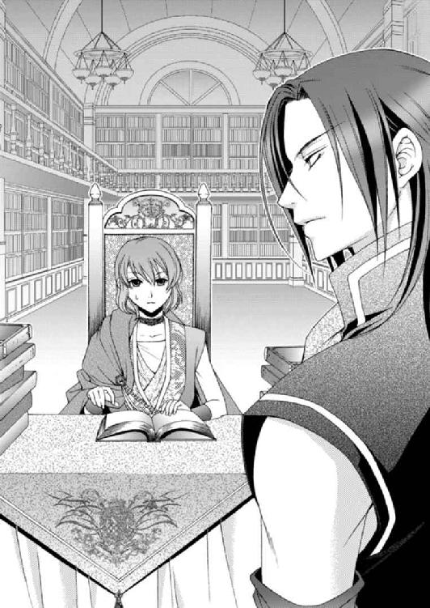
本を拾いながらサリマエルは慌ててそう言う。白い肌に浮かんだ羞恥の朱が、サリマエルらしい。
「サリマエル王子、アルバトル王子が心配されていますよ。あまり無理をなさらないように」
「大丈夫です。僕が迷惑を掛けるわけにはいきませんので、適当なところで休憩を必ずとっています。ご心配ありがとうございます」
輝くばかりの笑顔を向けるサリマエルとアルバトルの視線が交差すると、彼の表情は緊張したものへと変化する。弟は今の状況を理解しているため、笑顔が不謹慎だとでも思ったのかもしれない。
「......いや。ジン、例のものは用意できたのか？」
「カルソーニにできて我が輩にできぬことはないわ！」
「ジン。無駄な自慢はいいですから、王子が頼んだものを出しなさい」
グレディが眉間に皺を寄せるとジンは肩を竦める。
「わかっておるよ。サリマエル、出してやりなさい」
「はい」
サリマエルは小さな木箱を本棚から引き出し、卓に置いた。そこで胸元から小さな鍵を取り出して木箱を開けると、中には金のブレスレットが納められていた。飾りのないシンプルなブレスレットだが、表面に隙間なく呪文が彫られている。
「使徒封印のブレスレット......。ルセリアにはめられていたものより、複雑な呪文が彫られているようだな」
「カルソーニにあっさり解呪されないよう、少々こった呪文を刻んだよ。第一の呪文を外しても第二が発動するようにな。我が輩が偉大な魔導師だからできることだ」
「はいはい」
自慢するジンに、グレディは心のこもらない返事をした。そんなグレディにジンは抗議の声を上げる。
「グレディ、我が輩を馬鹿にしておるだろう？」
「い～え。頼りにしておりますよ。ただし、貴方のミスで王子が怪我でもしようものなら、私は許しませんから、覚悟しておいてください」
「おうおうおう、ピリピリしておるの」
ジンがやれやれとため息をついている中、サリマエルは別の木箱も持ってきた。中にはジンを三度呼び出せる砂時計が入っている。
「こちらもお持ちしました」
「ああ、ありがとう」
アルバトルの言葉にサリマエルは緊張した表情を浮かべる。いい加減慣れたらどうなんだと呆れるが、今まで兄弟といえど名ばかりだった関係だ。こんなふうに協力することに、お互い戸惑いがまだあるのかもしれない。
「......ところでジン。守護使徒は資質のある相手なら誰にでも自由に宿ることができると聞いているが、ゾフィーがメイフェスに見切りをつけてルセリアのもとへ来ることはないのか？」
「姫さんの中に流れているネディアの血に守護使徒が集まるとすれば、ゾフィーも例外ではないんでしょうな。もっとも、そうならないように姫さんの姉であるメイフェスを自分たちが利用しようと考え、ゾフィーの器として準備したのでしょうが」
ジンの言葉を否定するかのようにグレディが口を開いた。
「......いえ、ゾフィーは我々を弄んでいるだけなのかもしれません。ゾフィーはサイファスやカルソーニの思惑など僅かも気に掛けていないようでしたし」
一度目にすればわかる。ゾフィーの瞳には人にある感情がすべて欠落していた。そこにあるのは底のない闇ばかり。何もかも飲み込み、ゾフィーは嗤う。
「......愉しそうだったな」
「嗤うゾフィーには背筋が凍りました」
「......だがメイフェスを連れ出せなくとも、これだけは腕にはめなくてはならん」
ルセリアのたっての願いで、メイフェスを助ける方向で計画を進めているが、それはあくまですべてが上手くいった場合のことだ。
どれほど緻密に計画を立てたとしても、サイファスだけでなく魔導師のカルソーニがすんなりメイフェスを渡すわけもない。何より最大の問題は、メイフェスの中に棲まう守護使徒のゾフィーが、本当は何を望み企んでいるのか、想像すらできないことだろう。
しばらく前、ゾフィーは近隣諸国に疫病を流行らせ、サイファスはニノキアに侵攻した。彼らの目的はアルバトルたちが一時的に阻止することに成功したが、楽観はできない。
ルセリアの中には火、水、風三つの守護使徒がいるのに、彼らには闇の力を持つゾフィーには対抗できないらしい。
これまで何度もナナルたちの強大な力を目の当たりにしてきた。だが、あの圧倒的な力を持つ守護使徒が三つ揃っても、彼らはゾフィーに恐れを抱き、自分たちでは止められないと戦いもしないで敗北宣言をしている。
そんな同じ仲間の彼らですら制御できない存在に、人間ができることがあるのだろうか。
思考の波に漂っているアルバトルをグレディの声が現実に引き戻す。
「誰にも怪しまれず、使徒の力を封印するブレスレットをはめることが可能な距離までメイフェス殿に近づくことができるでしょうか」
「......ルセリアなら......あるいは」
まだメイフェスがほんの僅かでも妹を認識できる心が残っているのなら、ルセリアなら近づけるかもしれない。
「危険な賭けですよ」
「だが、それは最後の選択肢だ。できうる限りルセリアには後方にいてもらう」
ルセリアに宿る守護使徒はゾフィーに対抗できなくとも、他のことからは自分の身を守ることができるだろう。
たとえアルバトルが側にいなくても――。
「私はいつでも王子のお側におりますよ」
「頼りにしている」
「お任せください......王子」
グレディが決意を口にしている傍らで、じっと様子を窺っていたサリマエルが、目を輝かせて言った。
「兄上......僕も連れて行ってくださいませんか？」
「今回はだめだ」
「......僕が足手まといになるからですよね？」
「いや。俺が留守をしている間に何かあったら、お前が父を支えなければならん」
本来、跡継ぎとなる兄弟は、同時に旅に出てはならない。それはどこの国も同じで、片方に何かあったとしても、もう片方が補えるようにしておかなければならないためだ。
サリマエルもアルバトルの意図を理解したようだった。
「......そのような大役。僕に務まるのでしょうか」
「できるできないを論じている時間はもうない。お前もビアランの王子だ。その責任を果たせ」
「は......はいっ！」
真剣で少し大人びた顔をしてサリマエルは答える。まだまだ幼い弟に対し、本気で国を背負うような責任を課す気はさらさらないが、王子の自覚は必要だ。
「王子、そろそろ」
「ああ。わかった」
アルバトルたちは、サリマエルとジンを地下の所蔵庫に残して、ようやくルセリアのもとへと向かった。
「サリマエル王子は日々成長されていらっしゃるようですね」
「そうか？」
「いいことですよ」
病弱なため、長生きできないと思われていたサリマエルだ。今も立派な体型にはほど遠い瘦せた身体をしているが、以前と違って目に光が灯り生き生きとしている。
不思議なことにサリマエルが元気に行動しているためなのか、アビシュテの嫌がらせはなりを潜めているようだ。
「......それより、ルセリアに必要な地の使徒と光の使徒を見つけねばならないが......何か情報はないのか？」
あと二つの使徒を得ることができれば、ゾフィーを抑え込むことができるという。
もう少し時間があれば先に二つの使徒を探せたのだが、今は同時にことを進めなくてはならない。
「もともと使徒には魔術の類が効きません。ジンの探索の手が及ばないのですよ」
「ならどうやってカルソーニはファンファンやゾフィーを見つけた？」
アルバトルの疑問にグレディは恐ろしいことを口にした。
「実は、見つけたのは彼らの方で、私たちではないのかもしれません」
「......ネディアはどこまでこの世界を混乱させる気でいる」
シシア神国でもなく、サイファスでもなく、カルソーニでもない。守護使徒をこの世界に放ったのはネディアの王だ。姿を見せず居場所も明かさず、彼らはか弱い赤ん坊のルセリアをニノキアへと送り出した。
ニノキアの王・マハークは、すでにマルフォーネに嫁いでいた娘、エリスにルセリアを託した。ルセリアは出生の秘密を知ることなくマルフォーネで育ち、その後アルバトルと出会う。
失われた黄金の都・ネディア。半ばおとぎ話として伝えられていたこの国が、守護使徒の出現によって実在することが証明された。
守護使徒は本来その国を護るための存在だったという。それが歴史を遠くさかのぼった過去、大きな戦争のさなか、世界に飛び散り、ネディアは姿を消した。
そして今になってネディアの王は赤ん坊のルセリアをニノキアの王へ託した。
ネディアの王の行動は理解できないものの、彼がルセリアをこの世界に送り出さなければ、アルバトルは彼女に出会わなかった。
もしルセリアに出会わなかったら、自分は今どうしていただろう。
いや、そもそも誰かを愛することができたのか。
「......王子？」
「いや。なんでもない」
「シシアの婚儀ですが......招待とはいえ道中は気をつけた方がよろしいかと」
「そうだな」
サイファスはゾフィーを手に入れた。以前とは違う。それを肝に銘じておかなければならない。
「陸を行く身代わりをまず先に出立させたうえで、ビアランの船も出し、さらに商船に紛れてシシアに向かうのはいかがでしょう」
グレディの提案にアルバトルは首を左右に振った。
「ビアランの王子がこそこそと商船に紛れるなど......あり得ない話だぞ」
「確かにそうですが......私はこのたびの招待、ただ婚儀のためにのみ、みなを招いたとは思えないのですよ。何か大きな策略が必ずあるはず。できる限りの防御は固めておくべきかと」
「この俺に盗人のように隠れろというのか？」
グレディの提案は確かに理にかなったものかもしれない。だが、たとえ商船に隠れて無事にシシアへ到着したところで、〝砂漠の悪魔〟と恐れられている王子が、実は臆病者だったと笑いものになるだけだ。
「明日の出立まで時間がございます。どのような決断をされてもいいように、すべての準備を整えておきますので、坊ちゃまはそれまでよくお考えください」
「......おい」
「だいたい、今大切なのは王子としての面目ではないはずですよ」
「一言多いんだ、お前は」
言われなくてもわかっている。弱さを認めて隠れるか、弱さを認めたうえで堂々と立ち向かうのか。
アルバトルは後者でありたいのだが、そういう考えはまだ甘いのだろう。
「ルセリアはどこにいる？」
「ハーヴェイ殿を中庭にご案内しているはずですよ」
「二人きりにはしていないだろうな」
「警護のレイや兵士、エミールも付き添っていますので、ご心配の必要はありません」
ルセリアはアルバトルの求婚を正式に受け入れ、后となることを約束してくれた。
あの誓いに噓はない。アルバトルもルセリアの愛を確信したのだ。
それでもハーヴェイの存在はアルバトルにとって脅威だった。
中庭に到着すると、手の平を広げたような葉っぱを持つ背の高い植物のバハルの下でルセリアたちは茶を楽しんでいた。アルバトルはまっすぐそこへ向かうと、先に気づいたルセリアが立ち上がって、アルバトルに手を振った。
「ようこそ、ハーヴェイ殿」
アルバトルはそう言ってハーヴェイと握手をすませ、ルセリアの隣に座った。ルセリアは終始にこやかにしている。
「ご無沙汰しております、王子」
「貴方がカリステロ国のジャッジア女王に庇護されているとは予想もしませんでしたよ」
「ええ。あの方だけが私の唯一の味方。大変お世話になっております」
ハーヴェイは穏やかな微笑を浮かべ、同じ双子のサイファスにはない余裕を漂わせている。
柔らかな金髪を持つ華やかな王子。そしてルセリアが幼い頃、湖で出会った初恋の相手はアルバトルだというのに、あろうことか間違えた相手でもある。もっともハーヴェイもその後、ルセリアと出会い、彼女に惹かれてているのだが。
彼はサイファスの双子の兄でもある。とはいえ、シシア神国の王子は一人しかいないことになっているため、ハーヴェイは仮面をかぶって容姿を隠している。
そこには深い事情があった。
シシアでは双子は凶兆とされ、弟のサイファスは長年城の奥深くに幽閉されていたのだ。
兄だけがシシアの王子として認められ、後から生まれたそれだけで、名すら与えられなかったサイファスは心を暗い恨みで満たしていった。
だが、ハーヴェイが十四の時、サイファスはまんまと兄と入れ替わり、彼の人生をすべて自分のものとして生きることに成功した。
その中にハーヴェイの初恋であるルセリアのことも含まれている。
サイファスは執拗にルセリアに執着し、我がものとすることで、兄に奪われた時間や人生を取り戻せると考えているようだ。
だからこそサイファスのルセリアに対する歪んだ想いは強く、決して諦めない。
「......ところで、ハーヴェイ殿がシシアに同行される理由をお聞かせ願えるのでしょうか」
「人払いをお願いできますか」
ハーヴェイの表情から笑顔が消える。アルバトルはグレディに人払いを命じた。
「ルセリア、そなたも部屋に戻っておれ」
「......えっ!? ここにいてはいけないの？」
正直ルセリアはここにいてもかまわなかったが、ハーヴェイとはできるだけ距離を取らせたい。
「明日の準備があろう」
「また後でも......」
アルバトルは首を左右に振り、バハルの陰に隠れていたレイに「ルセリアを連れていけ」と命じた。
レイはやんわりとルセリアの手を取って、椅子から立ち上がるよう促す。それでも納得いかずに動こうとしないルセリアにレイは告げた。
「姫。王子の命令だ」
「......わかったわ」
渋々椅子から腰を上げたルセリアは、レイに付き添われて部屋へと戻っていった。それを残念そうに見送るハーヴェイの視線に、ルセリアを想う情熱が含まれていることに彼女は気づいていない。
だからこそルセリアにはハーヴェイの想いを、このまま気づかずにいて欲しいのだ。
「では本題に......」
話しだそうとしたところに、守護使徒たちがどこからともなく姿を現し、アルバトルの肩に乗ってぶつくさと話し始めた。
そんな守護使徒の姿をハーヴェイは興味深く眺めている。
「アルたん、ご主人様に内緒の話するんだ、ズンズン」
「オイラはヴェーの方がいいな。ゴッホ～」
「ぼっ、ぼっ......僕は......アルたん嫌いじゃない。ヴェーは......胡散臭いんだな」
「ヴェー......!?」
ハーヴェイは困惑したようにそう呟いてアルバトルに尋ねるような視線を向ける。
「お前のことだよ、ヴェー。ズンズン」
「アルたンとヴェー。アルたンとヴェー......。どっちも馬鹿っぽい呼び名だ。ゴッホ～」
ゲラゲラ笑う守護使徒の姿にハーヴェイは驚きを隠せない様子で、仮面の下にある目を丸くしている。
「ナナル、ファンファン、レヴィン、お前たちもルセリアのところへ戻れ」
強い口調でそう言ったが、三人の守護使徒は、嫌だの横暴だなどと口々に文句を吐き出してアルバトルの肩や頭の上を走り回る。
アルバトルは守護使徒を可愛がったことなど一度もないのだが、来るなといえば近づいてくるし、黙れと言えば耳元で騒がしくする。おかしなことにエミールやレイにはこんなふうにじゃれついたりしない。
ルセリアも守護使徒の行動には困っているようだが、今のところ状況は改善されていないようだ。
「......いや、気にしないでくれ。無視していればいい」
「これが守護使徒の姿......想像とは違って......驚きました」
「ああ、勝手に愛称をつけるが、訂正したところでどうにかなったことがない。諦めてくれ。放っておけば姿を消す」
構わずにいると守護使徒は退屈になってルセリアのもとへ戻っていく。もっともあまり長い間、主人のもとを離れはしないのだが。
「守護使徒はまるで小さな子供のようですね」
「強力な力を持った......な」
そう話している間にも、先にレヴィンが消え、ファンファンが消え、最後にナナルが姿を消した。
「......話に戻ろう。シシアで何か行動を起こされるおつもりか？」
「ええ。そちらも何か考えがあるようですが」
アルバトルは小さく頷くだけにとどめた。互いの計画がどんなものであっても、情報を交換しない方が安全だ。
それはどちらかが拉致されたときを危惧してのことだった。ハーヴェイもアルバトルが意図することを理解したのか、何もかもわかったように頷いた。
「実はジャッジア女王からアルバトル王子へ贈り物があるのですが、ここへは持ち込まず、港に停泊させております船にて厳重に保管しております。よろしければシシアに旅立つ前にお渡ししたいので、姫とともにお越しいただきたい」
「......どのようなものか、伺ってよろしいですか？」
「いえ。言葉では少々説明がしにくいものですから、ご覧いただくのが一番でしょう」
ハーヴェイが何を託されてきたのかはわからないが、カリステロの女王からの贈り物を拒否するわけにはいかなかった。
「では明日の出発を合わせて、エナミ様とともに港へまいりましょう」
「いいでしょう」
贈り物がどういうものなのか、意味深なハーヴェイの説明が気になるが、しばらくは待たなくてはならないだろう。
「......王子、もう一つ提案がございます。よろしければ、船団として組み、船旅をご一緒されませんか？ 私もゆっくりアルバトル王子とお話しをして親睦を深めたいと考えていたところです。名代のエナミ様はもとよりそのおつもりなのですが......」
「そこまでおっしゃられては、お断りはできないでしょうが、即答はしかねます。シシアへ出航するまでにお返事させていただきますよ」
他国と船団を組んでシシアに向かえば、途中シシアが手を出すことはないだろう。
そんなハーヴェイの申し出は確かにありがたいことだが、だからといってすぐさま彼の提案に飛びつくわけにもいかない。
「いいお返事をいただけるのを楽しみにしております。では......」
椅子から腰を上げる動きですら洗練された優雅なもので、たとえ仮面で顔を隠そうと、彼の育ちのよさが滲み出る。
ハーヴェイは軽く会釈をすると庭から去っていった。
「カリステロ国の船とともにシシア神国に向かえば、シシアも手が出せないでしょう」
「まあな。だが、裏はないのか確認してからだ」
確かにハーヴェイには助けられてきたし、アルバトルも彼は味方だと考えている。が、すべてを相手の言葉のまま信用することも、特に今は危険だ。
船団として組むかどうかは、港にいる密偵にカリステロの船に不穏な動きはないか確認を取ってからだ。
「ハーヴェイ殿と姫様のことが気になりますか？」
気にならないわけがない。ハーヴェイの気持ちを知るアルバトルにとって、港までの道中をルセリアと行動をともにすることも、あまり気が進まないのだ。
だからといってそういった理由でハーヴェイの申し出――いや本来は女王の名代であるエナミからのものだ――を拒否することはない。
「ルセリアは俺の后となる。何を気にすることがある？」
「ええ。そうでしたね、坊ちゃま」
にっこりと意味深に微笑むグレディに、アルバトルはむっとしつつ背を向けた。シシア神国で行われるサイファスとメイフェスの婚儀へ出席するための準備を整え、ルセリアたちは砂漠を越えてタービルの港へと向かった。
以前は帆船に乗って河川を下り海へと出たが、現在は干上がっているため、時間はかかるが砂漠を移動することになったのだ。
ビアランを取り囲む砂漠のあらゆる場所にワームと呼ばれる巨大な円筒状の生物が潜んでいる。夜活発に動き、昼間は砂の中で頭上を歩く小動物や旅慣れない者を待ち、餌食にしているのだ。
ビアランに生まれた者はワームの潜む場所にできるちょっとした砂の模様の変化を読み取り、彼らを回避することができる。だが、砂漠を渡るキャラバンたちは案内人を雇い、ワームを迂回しつつ旅をする。そのため毎回決まった道はなく、目的地に到着するにも時間がかかるのだ。
けれどワームたちは守護使徒の存在を感じると自ら場所を移動する。そのためか、守護使徒を宿すルセリアが同行すると、ワームの潜む砂漠は危険な場所ではなくなるのだ。彼らがルセリアたちに道を譲り、おかげで迂回することなくまっすぐ港へと向かうことができる。
そのため、本来は数日かかる距離をほぼ一日で移動することができ、ビアランを出発して次の日の午後にはルセリアたちはタービルの港へ到着していた。
兵士がたくさんいるわ――。
港は軍事用とわかる船が何隻も停泊していて、ビアランの兵士の姿があちこちに見られた。
彼らはアルバトルやルセリアの姿を見つけると表情を明るくして「砂漠の薔薇だ」と口々に囁きながら畏怖の念を込めた視線を向け、傍らを通り過ぎるときには跪く。
「ナナルたち言いつけ通りちゃんと姿を消してますね」
「ええ。存在を知られては困るもの......」
ルセリアの肩に止まっているナナルやファンファンの気配は感じられるものの、姿は見えない。守護使徒たちは人目のある場所では姿を消しているため、他の人間の目に留まることはほとんどないのだ。
とはいえ、ビアランでは王だけでなく大臣にも守護使徒の存在は知られることになった。
人の口に戸は立てられず、いずれビアランが守護使徒を手に入れたことが他国に知られるのもそう遠くない日にやってくるだろう。それまでほんの少しの時間稼ぎなのかもしれない。
できれば完全に休止させておきたいのだが、ルセリアの身の安全のために常に起こしておけとアルバトルが言うため、素直にそうしている。
「......」
これからルセリアたちは婚儀のためだけにシシアに向かうのではないからだ。
ルセリアにとっては、ゾフィーに囚われた姉メイフェスを助けるためにシシアに向かうのだが、事情を知らぬ者たちにとっては意味合いが違う。
ビアランはシシアに正式に招待されているにもかかわらず、四大国に数えられる国の王子の花嫁を略奪しようとしている。それが成功しようと失敗しようと、一国の王子の花嫁に手を出す危険を冒せば、最悪国家間で戦争が起こってもおかしくない。
港に軍艦が何隻も停泊し、兵士が溢れているのは、アルバトルが最悪の状況を予想し、手を打っているからなのだ。今頃、首都のシハーブも守りが固められているに違いない。
ルセリアにとって一番避けたい事態が、ゆっくりと迫ってきている。
「ルセリア？」
「え......？」
顔を上げると、以前も乗り込んだビアランの船が視界に入った。
この船は軍艦だ。飴色に輝く船体はどっしりとしていて安定感がある。マストは四本。前から二番目の大檣が一番高く、見張り台である楼も二つあった。船首と船尾は通路で繫がっており、見上げるとその高さに驚かされる。
船体には取り外しのできる矢止板が取り付けられ、弓矢を放てる四角い小窓がずらりと並び、物々しい。
ルセリアが眺めているとカリステロの名代であるエナミがやってきて、傍らに立った。
「聞きしにまさるビアランの軍艦ね。雄々しくはあるけれど、美しさに欠けるわ」
隣に停泊しているカリステロ国の船は、ビアランのどっしりとした船体と対照的に細長くて優美な形をしていた。一見すると戦闘をこなす船には見えない。
「カリステロの船はとても美しいですね」
「ええ、綺麗でしょう？ 我が国の船は世界一美しいと思うわ」
エナミは誇らしげにそう告げたが、次の瞬間には「本当にこの国は暑くてたまらないわ。あ～嫌だ嫌だ」と呟きながら船に乗り込んでしまった。
「エナミ様にとってビアランの気候は苦痛でしかないのでしょう」
傍らに控えていたハーヴェイが苦笑する。
顔の半分を仮面で覆っていてもなお、魅力的な笑顔は隠せない。
ハーヴェイとはイリディアスでともに過ごした。彼はとても包容力に溢れ、会話も軽妙でユーモアがある。
アルバトルと再会するまでルセリアはサイファスを初恋の相手と勘違いしていた。その誤解は晴れているが、ルセリアはハーヴェイと幼い頃に出会っていた。それを思い出した今、ルセリアにとってハーヴェイは、兄のように感じる存在になりつつあった。
「ビアランは暑いもの。私も来たばかりの頃は暑くてたまらなかったわ」
「アルバトル王子が情熱的なのも、気候のせいかもしれませんね」
「......あ、そうかも」
思わず笑ってしまったルセリアだったがふと、包帯が巻かれているハーヴェイの左手首が視界に入った。
「その傷はどうしたの？」
「たいしたことはありません。剣術を極めようと日々鍛錬しているのですが、時折、このような失敗をしてしまいます。まだまだ未熟です」
「治療が必要でしたら、うちの医師を呼ぶわ」
「お気持ちだけいただきますよ」
さわやかな笑顔のハーヴェイに、ルセリアはここに来るまでに聞けなかったことを尋ねた。
「あ、そうだ、カリステロ国って......最北にある国よね。どのくらい寒いの？」
「毛皮の上着が何枚も必要なほど、寒い国ですよ。そびえる氷山に閉ざされた美しい城。空気はとても清浄で、吐息が白く霞む様は幻想的です」
噂でしか聞いたことのない国だが、とにかく寒さに厳しい場所だと聞いている。
一年の大半、太陽が雲に遮られ、雪が降り積もる国。人々はみな肌の色が透き通るように白い。みな家の中に籠もり、色とりどりの織物を紡いで、収入源にしていた。移動手段には、立派な角を持ったシュディックという馬に似た動物がいて、ソリを引く。
「......行ってみたいわ」
「姫が望むなら、私がいつでもどこでもご案内しますよ」
「本当？」
ルセリアとハーヴェイの会話が弾みだすと、アルバトルが二人の間に割って入ってきた。
「私たちの婚儀がすみましたら、ご招待ください」
「もちろんですよ。さあ、どうぞ」
カリステロの戦艦に乗る準備が整い、ハーヴェイが船に乗るよう促してくる。ルセリアはアルバトルとともにハーヴェイを追って船へと乗り込んだ。
「アルバトルも最北の国に興味があるのね。氷の山があるって聞いたわ。寒いってどのくらい寒いのかしら......どう思う、アルバトル？」
「興味など、ない」
アルバトルはいつもの冷えた眼差しをまっすぐ向けたまま、吐き捨てるように言う。あまりの態度の変化にルセリアは思わずアルバトルの顔色を見る。
「......え？」
「奴の言う贈り物とやらを受け取ったら、さっさと下船するぞ」
「アルバトルって......」
ルセリアに関わる男性はみなアルバトルにとって邪魔な存在なのかもしれない。
だからルセリアを初恋の相手だと誤解したサイファスを嫌悪しているし、その発端となったハーヴェイの初恋の相手がルセリアであることも、気に入らないのだろう。
たとえ今、互いにそういう気持ちが一切なくてもだ。
「なんだ？」
「ううん。なんでもない」
困ったことに、否定すればするほどアルバトルの疑いが深くなるので、ルセリアは会話を切り上げ彼の後を追った。
甲板に上がると、すぐさま船内に入る階段を下りて、二層目の奥へと向かう。最奥の扉の前に兵士が二人立っていて、ハーヴェイが目配せすると彼らは鍵を開けて扉を開く。
「どうぞ、こちらです」
ハーヴェイに促されてアルバトルたちは中へと足を踏み入れた。
窓のない部屋の真ん中に、脚の太い卓だけがどっしりと置かれていた。卓の上に両手で抱えられるほどの物体が置かれているのだが、四つの角にタッセルがぶら下がる布で隠されている。
ハーヴェイがそっと布を取り去ると、その下に隠されていたものが現れた。
「これは......なんだ？」
卓を囲んで立つアルバトルは驚きの声を上げ、ルセリアは息を吞んだ。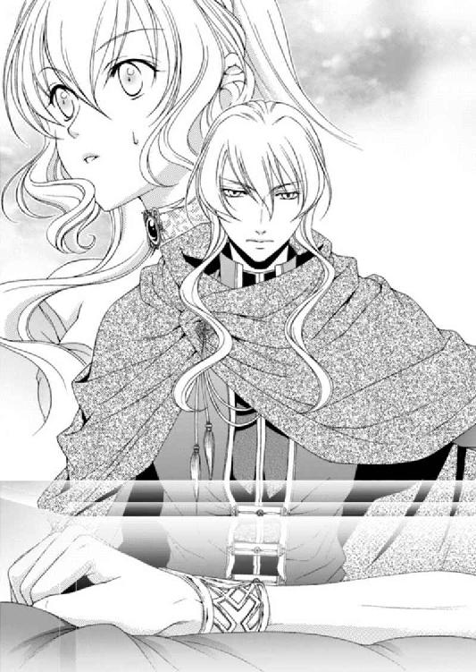
透明な立方体の中に、肘から下の手が囚われている。その手は握り拳をつくっていて、何かを摑んでいるように見えた。
手首には見覚えのある彫りがなされたブレスレットがつけられていた。
「使徒封印の......ブレスレット」
「そのようだな」
ルセリアは思わず胸元で右の手首を摑み、思い出した痛みを振り払おうとした。
過去、ルセリアもシシア神国の魔導師であるカルソーニに、これと同じ使徒封印のブレスレットをはめられたことがある。その効果のほどを知らずナナルを呼び出そうとした。
すると、ブレスレットから放射状に赤いみみず腫れが伸び、それらは腕の付け根に向かって幾筋も浮き上がり、ナナルの力を抑え込んだ。同時に身体を襲った骨を砕くような痛み。
あの記憶が鮮明に呼び起こされて、身震いする。そんなルセリアに気づいたのか、アルバトルがそっとルセリアの身体を引き寄せた。
「これが使徒封印のブレスレットなのですか」
ハーヴェイの問いにルセリアが答えた。
「え......ええ」
隠れていた使徒たちが、ここならとばかりに姿を現し、立方体の周りでざわめく。
透明な立方体にそっと触れると、鳩尾の下に痺れにも似た強い痛みが走った。ファンファンの存在に気づいたときにも似ている。
――この感覚は、まさか!?
「こっ、この中に......使徒が囚われているわっ！」
ルセリアが声を上げると、立方体を囲むすべての者が顔色を変える。さらにルセリアはもう一度、恐る恐る立方体に触れた。今度は鳩尾に痛みは感じず、鼓動のような振動を手の平に感じる。
「本当か、ルセリア」
アルバトルに尋ねられ、ルセリアは大きく頷いた。
「えっ、ええ。ゴンゴンかどうかわからないけど......使徒の存在を感じるの。......とても......弱いけれどここに使徒が囚われてる！ う......噓みたい......私......感じるわ」
興奮気味のルセリアの言葉を受けてナナルが呟く。
「ゴンゴン......ゴンゴンがいるぞよ。ズンズン」
「ほンとうだ。なンであいつはこンなところにいるンだ？ ゴッホ～」
透明な立方体に囚われているためか、その存在感は異様に稀薄だ。だからこれほど近くにいるにもかかわらず、その存在に気づかなかったのだ。
「本当に......使徒なのか。だがなぜ......カリステロに？」
アルバトルが顔を上げると、向かいに立つハーヴェイが緊張の面持ちで答える。
「それはわかりませんが、昔、氷山から偶然見つかったものだそうです。珍しい装飾のためその後、王室に飾られたのですが、真夜中に光っていたとか、地響きを立てて振動していたという話から気味悪がられて宝物殿の奥に放置されていたものを、ジャッジア女王が幼い頃見つけて、部屋に飾っていたらしいのです」
ハーヴェイは仮面を外して額にかかる淡い金髪を撫で上げると、小さなため息をつく。こうやってみると本当にハーヴェイはサイファスとそっくりだ。
「変わった方だな」
「ええ。女王は変わったものがお好きで、昔からみなが眉をひそめるようなものばかり集めるご趣味があるのです」
「今までも何かあったの？」
ルセリアの言葉にハーヴェイは微笑する。
「いえ。部屋に置いてから六十年もの間、特に問題はなかったそうです。が、ここしばらく真夜中にことことと動いたり、ぼんやりと青い光を発することが増えた。私から使徒の話を聞いていた女王は、何か関係があるのではないかと持ち出しを許可してくれたのです。そしてもし使徒に関するものだとわかったら、姫にお渡しするようにと」
「そうだったの......」
どういう事情があってここに土の使徒が囚われているのかはわからないが、シシア神国に向かう前、ゾフィーに少しは対抗できる力を持つ使徒と出会えた幸運に、ルセリアは感謝していた。
「だが、どうやって取り出す？」
「方法はそちらにお任せいたしますよ」
とは言われたもののルセリアには、どうしたらいいのかわからない。
とりあえず透明な立方体に向かって「ゴンゴン、いるの？」と語りかけてみた。けれどなんの反応もない。
次にルセリアは立方体を軽く叩いてみた。硬い感触が伝わってきたが、それは石や鉄とも違い、硬さよりも不思議な弾力を感じる。
「ゴンゴン、起きて」
ルセリアはもう一度そう言ったが、返ってきたのは沈黙だけだった。
「ファンファン、お前の炎で溶かしてみたらどうだ？」
アルバトルがファンファンにそう言ったが、あからさまに無視をして、返事もしない。そんな火の使徒の態度にアルバトルは小さなため息をついた。
「ねえ、ファンファン。この透明な部分を溶かすことはできないの？」
「これは氷じゃないンだ。オイラにも無理。ゴッホ～」
「似ているけど氷じゃないのね。じゃあ、使徒封印のブレスレットがはまっているからかしら？」
このブレスレットは普通の人間には外すことができない。ルセリアが無理やりはめられたときは、魔導師のジンに外してもらった。
彼の説明によると、他の魔導師が刻んだ呪文を外すというのは一苦労だそうで、床に封印魔破の魔法陣を描き、ブレスレットをはめられた人間を横たえる。そこで魔導師が解呪の詠唱を唱え、鍛冶屋に使徒封印のブレスレットを壊させたそうだ。
ルセリアにそのときの記憶はほとんどないが、苦痛に喘いだことだけは覚えている。
「違う。ゴンゴンの『封印の盾』の力。オイラにも溶かすことはできないンだ」
「どうしたら起きてくれるのかしら......」
「ゴンゴンが目覚めたいと思うまでは、このままぞよ......ズンズン」
「そうなの......」
せっかく目の前に使徒がいるのに、話しかけても答えてくれないし、他の使徒たちの声にも反応しない。
「ジンを呼び出してみる？」
「......いや。ジンの呼び出しはぎりぎりまで控えたい」
砂時計を使ってジンを呼び出して相談ができるのは三度だけ。ジンの力は砂時計を割ることでしか使えない。その場合は一度きり。
アルバトルが砂時計の使用に慎重になるのも仕方がないだろう。
「そうなの。なら仕方ないわよね......」
ゴンゴンは今しばらくはこのままにして、様子を窺うしかないようだ。
「では、そちらの船へ運ばせましょう」
ハーヴェイは兵士に指示すると、彼らは立方体を布でしっかりと包んで木箱へと収めた。それを兵士が二人がかりで運び出す。
「ハーヴェイ殿、この件は内密にお願いします」
「もちろんですよ」
「ルセリア。そなたも、間違ってもサイファスに話してはならんぞ」
「言いませんっ」
とてもあり得ないアルバトルの心配にルセリアは思わず声を荒らげていた。そんなルセリアにハーヴェイが微笑する。
「王子、そろそろ出航のお時間です」
グレディがそう言うと、アルバトルはハーヴェイに礼を述べ、部屋を後にする。ルセリアも彼を追って出ようとした。
「姫、お待ちを」
「え......」
先に行ったアルバトルが振り返る。ルセリアがじっと見つめていると、アルバトルは苦い顔で頷いた。少しなら二人で話していいということなのだろう。
アルバトルが廊下で待つ中、ルセリアはハーヴェイに向き直る。
「お話はなんでしょう？」
「弟のサイファスは姫に異常なほど執着しております。シシアではどうかお気をつけください」
「ありがとうございます。私は大丈夫です」
ハーヴェイは目を伏せつつも、自らの手を眺め下ろして、しばらくすると顔を上げた。
いつもは穏やかな光を宿す瞳が、驚くほど真剣な眼差しをしている。
「......弟が私の人生を奪ったように、今度は私が弟から自分の人生を取り戻さなくてはなりません。王子の座など弟に譲るつもりでおりましたが、いずれ王になる身として間違った方向に人々を導こうとしている今、選択の余地はありません」
「......ええ。わかります」
「そこで......すべてが終わりましたら......」
ハーヴェイは今にもルセリアの手を取らんばかりに近づくが、じっと瞳を見つめるばかりで言葉が続かない。
真剣な眼差しはどこか切なくもあり、ルセリアはなぜだか胸が痛んだ。
「......ハーヴェイ？」
ルセリアが名を呼ぶと、はっと我に返ったように目を見開いて、ハーヴェイは握りしめた手を卓に載せた。
「いえ。なんでもありません。どうか姫もお気をつけて」
「はい。ハーヴェイも気をつけて」
まだ何か言いたそうな表情のハーヴェイに別れの言葉を告げて、ルセリアは廊下で待つアルバトルのもとへと向かった。
ルセリアはカリステロの戦艦の甲板とビアランの戦艦の甲板を繫ぐ渡り板を使って自分の船に戻った。
ハーヴェイと別れてからアルバトルはどういうわけかへのじに口を引き結び、ぴりぴりした様子を漂わせている。
「どうしたの？」
「......気に入らん」
「ビアランの戦艦の方がかっこいいと思うわ」
「そうではない」
勝ち負けにこだわるアルバトルは、カリステロとビアランの戦艦を比べ、その優美さに機嫌を損ねたのかとルセリアは考えたのだが違ったようだ。
「え？」
「......そなたは自覚がないから困る」
「守護使徒をうろうろさせていることよね。ごめんなさい」
「それもあるが......それだけでは......ない」
なんだかはっきりしないアルバトルに、今度はルセリアがむっとした。何に苛立っているのか本人が話してくれなければわからないことだってあるのだ。
「何？ はっきり言ってくれないとわからないわ」
「......」
「アルバ......」
不意に引き寄せられると、アルバトルは唐突に唇を重ねた。身体が蕩けそうなほど熱い口づけに、ルセリアは今話していたことも忘れてしまいそうになる。
「......っん」
ゆっくりと唇が離れ、そっと閉じた目を開くと、アルバトルは満足そうに笑っていた。
「そなたの唇はいつも柔らかいな」
「......もう」
何を話していたのかすっかりとうやむやにされたが、もう一度問うのもまた不機嫌になりそうだったので、やめた。
「さあ、そろそろ船が出航する。部屋に戻っていろ」
「ええ」
ルセリアはアルバトルと別れ、エミール、レイとともに、船室へ向かった。
船室は狭いが、マルフォーネを思い出すことのできるこぢんまりした部屋だ。四方を囲む板張りの壁から感じられるぬくもりは、居心地がいい。
「ルセ様。先に湯浴みをなさいますか？」
「ううん。後にする」
ルセリアが寝台に座り、船室に焚かれている香の匂いに心地のいい気分に浸っていると、開いた扉から廊下を例の立方体を運ぶ兵士の姿が見えた。
「あ、待って。それはこの部屋に置いてもらえると嬉しいんだけど......」
「姫様、何があるかわかりませんので、お部屋に置かれるのは得策とは思えません」
兵士に付き添っていたグレディが答える。
「......確かにそうね。でも近くにあれば使徒たちも声を掛けやすいし、ゴンゴンの眠りが浅くなったときにこちらの呼びかけが聞こえるかもしれないわ」
ゴンゴンがどうすれば目覚めるのかわからない今、ルセリアは傍らに置いて観察したいと思っていた。もしかするとちょっとしたきっかけでゴンゴンが目覚めるかもしれない。
六つの使徒が揃わない段階でゾフィーに多少なりとも対抗できるのはゴンゴンしかいないらしい。だからこそできればシシア神国に入国するまでに目覚めさせたいのだ。
「アルバトルに許可をもらえないか聞いてもらってもいい？」
「しばらくお待ちください」
グレディが甲板へときびすを返し、しばらくするとにこやかに戻ってきた。
「許可が下りました」
「本当？ よかった」
急遽、別の卓が用意されて、土の使徒が眠る立方体が載せられた。その不思議な立方体を初めて目にしたエミールが恐る恐る近寄ってくる。
「ルセ様。この気味の悪いものはなんですか？」
「ここに土の使徒・ゴンゴンが眠ってるようなの」
「ええっ!?」
エミールは声を上げた後、撫でたりつついてみたりしていたが、首を傾げる。
「こう、ちょっと、変な使徒......出てこないんですね？」
「そうなの。呼びかけても答えてくれないの。ゴンゴンが目覚めたいと思うまではだめみたい」
「冷たくないんですね」
両手で透明な部分に触れて、エミールが呟く。
「ね。ほんのり温かいでしょう？」
「はい。とっても不思議ですね。あっ、ルセ様。床に落としてみたらどうでしょう？」
「ええっ!?」
ルセリアは声を上げたが、いいことを思いついたというようにエミールが両手を握りしめて振っている。二人の様子に、レイは背後で疑わしげに目を細めていた。
「使徒ですもの。割れることはないでしょうから、衝撃で気づくかも」
「......いいわ。やってみましょう！ レイ、手伝って」
あまり気の進まなそうなレイを呼んで、ルセリアは三人で透明な立方体を卓の上から押し出す。
「せ～の......」
卓からごろんと床に落ちた立方体は、メキッという音とともに割れた床板ごと下の階に消えた。
「あ――っ!?」
慌てて床に開いた穴を覗き込むと、麻布で作ったハンモックがいくつも吊り下げられている間に落ちていた。交代で眠っている兵士が大きな音で目を覚ましたのか、上から覗き込むルセリアに驚いている。
「......姫!?」
「ごっ......ごめんなさいっ！ あの......それ......」
透明な立方体に囚われた人の腕を見た兵士たちは驚きの声を上げため、他の兵士も集まってくる。気がつくと大騒動になり、ルセリアは真っ青になっていた。
当然、アルバトルの耳にも入り、すぐさま駆けつけてくる。そして床に開いた大穴を見てよほど驚いたのか、声が裏返っていた。
「ルセリアっ!?」
「こんなことになるとは思わなかったの、ごめんなさいっ！」
「いいえ......私が変な提案をしたからこんなことに。申し訳ありません」
エミールが謝罪するのをルセリアが庇い......ということを繰り返しているうちに、アルバトルが「もういい」と止めた。
「グレディ、あれは別の場所に保管しろ」
「......その方がよろしいですね」
苦笑するグレディはルセリアの部屋に開いた穴を塞ぐよう兵士に命令し、下の立方体も運ばせる。
ルセリアはただ見ていることしかできなかった。
「そなたは余計なことをせず、おとなしくしているんだぞ」
ジロリとアルバトルに睨まれたルセリアは、肩を竦めるしかなかった。
すでに兵士によって塞がれた床を眺めつつ、アルバトルとグレディが船室で何を話しているのか気になった。
「二人で何を話しているの？ シシアで何をするのか話してくれないつもりかしら」
「ルセ様。すべてが整ったらきちんとお話をしてくださると思いますよ」
「......そうよね」
今度こそおとなしく先に湯浴みと夕食をすませて、部屋でアルバトルが戻ってくるのを待っていた。が、いつまで経ってもアルバトルは戻ることなく、ルセリアはその夜、一人で眠りについた。
翌朝、目覚めたルセリアは、着替えてから一人で朝食を摂った。アルバトルは結局戻ってこなかったが、宮殿での生活とそんなに変わらないため、気にしないようにしていた。
「エミール、甲板に出て風に当たりたいわ」
「はい。ルセ様」
暇をもて余すように甲板に出たルセリアは、手すりに平行に設置されている長椅子に腰掛けた。
風は穏やかに吹いているのに、空にはどんよりとした雲が垂れ込めていて、青空は隠れている。少し離れて進むカリステロの船は、細長い船体で海を裂きつつ泡立つ白波を巻き込み進んでいた。
一緒に行動してくれる味方がいるというのは心強い。傍らに船があるだけで、広大な海に取り残されているという錯覚に陥る心配もないのだ。
「嫌な天気ですね」
「......ええ」
ビアランにいたときはまるで感じなかったのに、シシアに近づけば近づくほど、鳩尾から胸焼けしたような不快感が強くなる。ゾフィーとの距離が縮まっているからだろうか。それともただの気のせいなのか。
「ルセ様」
「......え？」
エミールの声に振り返ると、アルバトルがこちらへ向かってくるのが見えた。
「おはよう、アルバトル」
「よく眠れたか？」
「私はね。アルバトルは一晩じゅう話し込んでいたの？」
「ああ、さすがに少し眠いな」
アルバトルはルセリアの隣に腰を下ろすと、エミールが用意した温かい飲み物を口にして、ため息にも似た息を吐いた。
どんな計画を立て、アルバトルはシシア神国でどう行動するつもりなのだろうか。いやアルバトルだけではない。ハーヴェイのことも気になる。それを尋ねてもいいのか、それとも話してくれるまで待った方がいいのだろうか。
ルセリアは逡巡した末に、とりあえず別のことを聞くことにした。
「ねえ、アルバトル。すごく気になっていることがあるんだけど......」
「なんだ？」
「守護使徒は六つ揃うと七つ目の使徒が出現するって書いてあったでしょう？」
所蔵庫にあった古い文献に載っていた守護使徒の話。
守護使徒は確認されているもので六種類。『飛沫の欠片・水の使徒』。『紅蓮の欠片・火の使徒』。『大地の欠片・土の使徒』。『息吹の欠片・風の使徒』。『煌めきの欠片・光の使徒』。『暗黒の欠片・闇の使徒』。その六つの使徒が一つの身体に存在すると、七つ目の使徒パーフェクトファントムが現れる。
「そうだな」
「七つ目の使徒の説明がどこにもなかったんだけど、どんな使徒だと思う？」
「どいつもこいつも人間を馬鹿にするような奴らだからな。また変なのが出てくるんだろう」
アルバトルは面白くなさそうな顔でそう言った。
確かに守護使徒はみなそれぞれ個性的で、予想していた存在とはまるで違った。
「もう、真面目に聞いてるのよ」
「わかっている。ニノキアにいるジンの分身の力を貸りて読み解いた『変革の書』にもすべて集めることで答えが出ると書かれていた。きっと七つ目の奴がネディアの場所を知っているか、それとも使徒たちの記憶が戻ることで道が示されるのかもしれないな」
「きっとそう。そこに......ネディアに......私の本当の両親がいるのよね......」
「かもしれん」
想像も付かない実の両親にもし会うことができたら、ルセリアはどう感じるのか、自分でもまるで予想ができない。
「どんな方かしら？」
「赤ん坊を見知らぬ土地へ送り出すような奴らだ。ろくでもない親だな」
「......事情があったのよ」
「俺ならば......どんな事情があろうと自分の子を手放したりはしない」
アルバトルが吐き捨てるように言うので、ルセリアは苦笑するしかなかった。
ナナルが守護していたとは言え、両親を認識できない幼子をネディアの人々はニノアキに託したのだ。よほどの事情がなければ、我が子を危険な地へ送り出すことはないだろう。
それほどまでに守護使徒を集めることは重要な使命だというのだろうか。
守護使徒はネディア王国の初代王と契約をし、ネディアの王族にのみ継承されてきた。そのため、血族でなければ守護使徒を複数宿すことはできない。
けれど血族はルセリアだけではないはず。
「ねえ、守護使徒を一つに集める理由って......ゾフィーを暴走させないためのものなのかしら......それともまた違う意味があるのかな？」
「それはわからん」
アルバトルはルセリアの膝に頭を載せると、まどろむような目をしてルセリアの髪を指先で弄びつつ、何かに心を囚われている。その何かをルセリアに明かしてくれるつもりはないのだろうか。
「アルバトル......あの......」
ルセリアが思いあまって尋ねようと口を開いたが、そこでようやくアルバトルと視線が合う。彼の表情はとても真剣で、ルセリアは続けて声を発することができなかった。
アルバトルはしばらくルセリアの顔を見つめてから、言った。
「......俺たちは今できうる限りのことを考えた。ただ、そなたにも頼まなくてはならないことがある」
ルセリアは小さく頷いた。自然と浮かんだ笑みは、自分にも役目があることが嬉しかったからだ。が、アルバトルの表情は相変わらず硬い。
「最優先なのはゾフィーの力を無効化することだ。それにはメイフェスに使徒封印のブレスレットをはめなければならん。そこまでメイフェスに近づけるのはおそらくそなただけだ」
「やるわ、私。なんとかがんばってみる」
「いや。その役目は俺やレイに任せろ。そなたは俺たちが近づけるよう、守護使徒たちを使って欲しい」
「でも......私なら隙を狙えるはずだわ」
たとえゾフィーに邪魔をされようと、もし他の守護使徒がゾフィーに対抗できなくても、どれほど〝暗黒の花嫁〟の術にメイフェスの心が蝕まれていても、きっと優しい本来の姉の心がまだ残っているはず。
ルセリアはそこに希望を持っているのだ。けれどアルバトルは違ったようだ。彼は身体を起こして座り直すと、ルセリアの方を向いて両手を重ね合わせるようにして摑んだ。
「いいか、ルセリア。ゾフィーには必要以上に近づくな。俺は......今回ほどそなたを国に残したいと思ったことはない。守護使徒はそなたに集まる。準備が整っていなくてもな。彼らは自由に宿主を移動できると聞いている。今ゾフィーはメイフェスの身体を気に入っているのかもしれんが、そなたが側に近づけば気が変わり、そなたのもとへやってくるかもしれん」
一気にそう話すと、アルバトルはルセリアの身体を抱きしめ「頼む」と呟いた。彼の心配はルセリアにもよく理解できる。アルバトルが恐れているように、ルセリアも恐れているからだ。
だからといって怯んではいられないこともお互いわかっている。
「アルバトル......」
「いいな？」
「......」
「わかったな？」
「......え、ええ」
ルセリアが答えるとアルバトルはようやく身体を離したが、肩を抱いて引き寄せると、密やかなため息をつく。
「弱気な俺は鬱陶しいな」
アルバトルは自嘲気味にそう言い、なぜか楽しげに笑った。
「きっと大丈夫よ。だって、〝封印の盾〟という力を使えるゴンゴンを見つけたもの。まだ目覚めていないけれど、きっと助けてくれるはず」
ルセリアの言葉にアルバトルは肯定も否定もしない。
「ハーヴェイはどういう行動を取るの？」
「お互い詳しいことは話していない。だからそなたも知ることはない」
「え？ どうして？」
「知らなければ、もしものときに相手の手の内を明かすこともないだろうからな」
どちらかがシシアに捕らえられたとしても、情報を知らなければ味方の計画を不用意に知られることもない。
アルバトルがそこまで最悪の事態を想定していることに、ルセリアは軽い衝撃を受けた。
「......じゃあ、別行動なのね」
「ああ。最初から俺たちと目的は違う」
「そうよね......え」
アルバトルは再びルセリアの膝に頭を載せて目を閉じる。ここしばらく忙しかったはずなのに、彼の表情には疲労からくる翳りはなかった。
「少しこのままでいろ」
ルセリアはアルバトルの額に掛かる髪をそっとかき上げた。彫りの深い顔立ちは優雅で、間近で見ていると胸がドキドキする。
潮の香りをたっぷり含んだ風が海を渡ってきた。心地のいい風を受けながら見渡すと、グレディが船首手前で船員に指示を出していて、レイは少し離れたところに座り、チラチラとルセリアを目の端に映しながら剣を研いでいた。
「ルセ様、少し冷えてきました。ショールをどうぞ」
「ありがとう、エミール」
「何かご用がございましたら、お呼びください」
「ええ」
アルバトルの様子を確かめると、薄目でこちらを窺う視線とぶつかる。
彼は薄く笑って目を開けると、額を撫でていたルセリアの手を取って、愛おしそうに愛撫し始めた。その仕草がとても照れくさくて、ルセリアは頰を朱に染める。
あれほど嫌悪したアルバトルが、今は誰よりも大切な人としてルセリアの心を捕らえて離さない。
ずっとこのままでいたい――。
そう強く願ったとき、いつしかルセリアの視界は霞んでいた。
「......どうした？」
「え？」
「涙だ」
アルバトルの手がそっと頰に触れ、指先がまなじりを捉える。自分でも気づかぬうちに感情が高ぶり涙が浮かんだのだろう。
「......っあ、ご、ごめんなさい」
「謝ることはないが、何かあったのか？」
「ううん。悲しいわけじゃなくて、今ものすごく幸せな気分になって......ずっとこのままでいたいなって思ったら、いつの間にか......」
そう言って笑うと、涙を拭ったアルバトルの手が、ルセリアの頰を包み込むように触れる。そのまま頰の丸みに添って指先が顎まで移動し、また頰を包む。
温かくて大きな手に触れられると、そのときだけは不安から解放される。
「華燭の儀を迎える頃にはすべて終わっている」
ルセリアは言葉にせずに、ただ小さく頷いた。アルバトルはまどろむように目を細める。いつの間にか傍らにきていたナナルはルセリアの肩に止まった。ファンファンは船の手すりに座って興味深げに海を眺め、レヴィンは相変わらずルセリアの中で過ごしている。
「......少し風が出てきたな」
「ええ」
以前は、明日も明後日も同じ日が来ることを疑わなかった。
けれど今は違う。
愛しているわ、アルバトル――。
アルバトルを、ここにいるみんなを守るために、ルセリアができることはどんなことでもするつもりだった。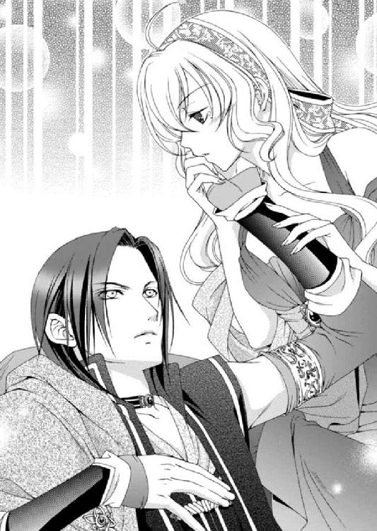
タービナルの港を出て三日目の夜、船はシシア神国のキドナ港に到着した。
下船の準備がまだ整っていなかったため、ルセリアは船室で待つ時間もゴンゴンが囚われている透明な立方体に触れていた。航海中から何度こうやって触れては呼びかけたかわからないほどだが、未だゴンゴンは目覚めない。
「ゴンゴンは......変わりないわね」
ため息をついて椅子に座ると、姿を消していたナナルたちが立方体の前に現れた。三人とも憂鬱そうな顔をしている。
「ご主人様、ここはよくないぞよ。帰ろう、ズンズン」
「いいえ」
「オイラたちには、ゾフィーを止められないンだ。ゴッホ～」
守護使徒たちの力を目にし、そのすさまじさには驚かされた。そんな彼らがこんなにも嫌がるのだ。ルセリアが想像する以上にゾフィーは恐ろしい存在なのだと思い知らされる。
「ゴンゴンがいるわよ」
「あっ......あいつ、あいつは......寝てばっかりなんだな。だから......もう帰ろう。僕はここがとても嫌なんだな。ゾフィーの匂いがあちこちからして、落ち着かないんだな」
「私たちはゾフィーを止めるために来たのよ」
ルセリアの決心が固いことを理解したのか、三人は顔を見合わせて小さく頷き、姿を消した。だが彼らは姿を透明にしただけでルセリアの近くにいる。現に両肩に小さな重量を感じるのは、ナナルかファンファンが乗っているからだ。
「ルセリア、迎えの馬車が到着した。下船するぞ」
アルバトルが部屋にやってきてルセリアに声を掛ける。ルセリアは椅子から腰を上げ、ゴンゴンに後ろ髪を引かれながらも、戸口に立つアルバトルのもとへと向かった。
階段を上るルセリアの手は、アルバトルにしっかりと握りしめられていて温かい。彼の背は広く、みなぎる闘志が感じられた。
「......あ」
すでに日は暮れ、夜が世界を支配している。けれど、甲板に立つと溢れんばかりの光に迎えられた。
甲板から港を眺め下ろすと、周囲は松明の明かりで煌々と照らされており、同じように街にもたくさんの明かりが灯されている。まるで何かを恐れ、世界を覆う闇を光によって追い払おうとしているかのようだった。
港に溢れるシシアの兵士はみなやけに緊張しており、以前訪れたときとは様子が違う。彼らは無数のチェンメイルを繫ぎ合わせてできた長いシャツの上に、白と青を基調とした前開きの上着を着用し、大振りの剣を腰に下げていて、かなりの重装備だ。
何隻も停泊しているシシアの戦艦は今にも出撃しそうなほど、ものものしい準備が整えられていた。
まるで戦争が始まるかのような雰囲気に包まれた港には、婚儀に招待された国の船も停泊しているが、賓客たちはお祝いムードとは言い難いこの港の状況に、不穏な空気を感じ取ったに違いない。
それでもここまで来たからには下船するしかなく、異様な緊迫感が漂う中、シシアが用意した馬車に乗り込んでいく。彼らはみな胸中穏やかではないだろう。
そんな想像をしてしまうほど、この国の雰囲気は気味の悪いものへと変わっていた。
「ルセ様、お寒くありませんか？」
エミールがそう言って肩に羽織らせてくれたショールの前を合わせる。ふわりと身体を包んだぬくもりに、身体が冷えていたことに気づかされた。
「ありがとう。エミールももう一枚羽織った方がいいわ」
「はい。お気遣いありがとうございます」
そう言ってエミールが下がると、今度はグレディが桟橋に向かうよう促す。
「アルバトル、ハーヴェイは？」
「甲板には姿はないようだな」
「......そう」
ルセリアは優美なカリステロの船を移動しながらも眺める。そこでハーヴェイの無事を祈りつつ、アルバトルとともに船を下りると、迎えの馬車へと案内される。
「ようこそお越しくださいました。どうぞこちらへ」
白のシャツに、膝丈の上着は藍色をしている。金糸で結われた細い組紐が右肩から左肩へと流れ、輪がいくつも重ねられた飾りで留められていた。祝いの衣装なのだろう。
ルセリアたちは三頭立ての馬車に乗り、城へと向かった。
「......」
なだらかな坂に沿って街並みが段々と続く。
どの家の軒先にもカンテラがぶら下げられていて、街並みを美しく浮き立たせてはいる。だが、戸口や窓はしっかり閉じられ、人々の姿はない。
以前、葬儀のために訪れたときは王の喪に服しているときだったから人気がなかったのだろうが、今日はなぜなのだろう。夜だからか。それとも国民もこの国を覆う不穏な空気を感じ取り、引きこもっているのだろうか。
馬車から外を眺め、ルセリアは胸の内に浮かんだ不安が徐々に増していくのを感じていた。
視線を前に向けると、徐々にそびえ立つ城が見えてきた。
シシア神国は国土に石灰岩を多く含む山が多く、山の側面を削って彫刻でもするように城が造られている。
そのため、柱もバルコニーもすべて一枚岩のように繫がっていて、細やかな彫刻がされていた。城壁はどっしりと力強く、非常に高い。上部には監視の小塔がいくつも見られ、人が行き来する影が見える。
婚儀だというのに、まるで戦いに備えているように思えてならない。
ルセリアは窓から視線を逸らし、アルバトルにそっと寄り添う。触れ合う部分から伝わるぬくもりに、胸にわいた不安が少しだけ収まった。
城の手前に掘られた深い溝を馬車は跳ね橋を使って渡る。そのまま、ウインチで吊り上げられた鉄の落とし格子が頭上にある巨大な塔を越え、再び落とし格子付きの通路を抜けると広場に出た。
以前は馬車をそこで待機させ、賓客は順番に城内へと案内されたのだが、すでに夜を迎えているためか、待っている賓客は数組だった。
アルバトルとルセリアが馬車から降りると、すぐさま案内人がやってきた。
「通常、お越しくださった皆様へキアーナ王妃からご挨拶をさせていただくのですが、ここしばらく体調を崩されており、すでにお休みになられております。明日、サイファス王子の方から改めてご挨拶をさせていただきたいとのことです」
「わかりました。ただ体調が優れないようでしたら、明日のご挨拶も控えさせていただきますので、よろしくお伝えください」
「お気遣いありがとうございます。王妃にお伝えいたします。では、こちらへ」
ルセリアたちは案内人の後を追い、城内へと入った。すると産毛が逆立つような冷たい空気を感じて、ルセリアは身を竦める。
「アルバトル王子は南の客室へ。ルセリア姫は東の客室へご案内いたします」
「それは......」
正式な夫婦以外は男女別室を用意するシシアの対応に、グレディが再び抗議しようとしたものの、アルバトルが止める。
「しきたりだ、グレディ」
「......はい、王子」
やはりまた別々の部屋なんだと内心ため息をつきつつ、ルセリアはアルバトルと別れて、東の客間へ向かった。
案内されたのは以前と同じ部屋だったが、なんとそこには先客がいた。
「......姫、お久しぶりですね。いつにもまして麗しい」
金糸を思わせるような髪はカンテラの明かりに輝いている。美麗な容姿に知性の灯る青い瞳。穏やかな口調は耳に優しい。
これが第一印象のサイファスだが、彼の本性は外見とは似ても似つかない、恐ろしい性格をしていた。
けれど今日のサイファスは、驚くほど憔悴した顔をしている。まるで病んでいるかのようだ。
「サイファス王子......」
「姫、下がれ」
レイはすかさずルセリアとサイファスの間に立って敵意を露わにするが、彼の護衛も同じようにレイの動きを見て剣の鞘に手をかけている。
「大丈夫よ、レイ」
ルセリアはレイを下がらせると、サイファスも護衛をたしなめる。
「お前たちも下がっていい。私は姫に話がある」
「ですが、王子」
「いいから、ここから出て行けと言っている」
サイファスは表情こそ笑顔だが、口調は鋭い。そんなサイファスに兵士が顔を見合わせて頷くと、部屋から出て行った。
「気の利かない護衛ばかりで気疲れしますよ」
サイファスは小さなため息をついて髪を撫で上げる。こうやって見ると本当にハーヴェイと見分けがつかない。
「......ル、ルセ様。あの......っ......私はお茶のご用意をさせていただきます」
エミールは我に返ったようにそう告げて、下がる。ルセリアは平静を装うことに神経を集中することにした。
「サイファス王子、どうぞお座りください」
「ありがとうございます、姫」
サイファスは疲れたような笑みを浮かべ、ルセリアに促されて椅子に腰を下ろす。
いつもの彼から発せられる覇気はまるで感じられず、どこか弱々しくも見えるサイファスに、ルセリアは困惑していた。
彼は守護使徒を使い、力で人々を支配しようとしている。以前、砂漠で聞かされた話が彼の本心だとすれば、いずれ世界を手にしようとしているのだ。
そんな、権力に取り憑かれている男が、どうして重病人にも思える顔をしているのだろう。
これもサイファスの罠なのか――。
「この度は、ご結婚おめでとうございます」
「......姫の口からそういう言葉をいただきたくはなかったですね」
苦悩を滲ませたサイファスは、どこか自嘲気味にそう言う。ルセリアは返す言葉を見つけられず、飲み物を卓に準備しているエミールも平静を装っているが顔が強張っている。
だが、周囲の人間の様子などお構いなしにサイファスは続けた。
「......私はメイフェス姫と結婚する気など全くありませんでした。姫にはそれをわかっていただきたい」
「サイファス王子」
「私の愛は貴方だけのもの......メイフェス姫を愛することなどできません」
ルセリアはサイファスの言葉に怒りが込み上げてきた。
彼が姉のメイフェスにしたことは許しがたい。さらに、守護使徒を手に入れるためにルセリアを騙してビアランから連れ出そうとして、レイに酷い暴行を働いたことも彼は忘れているのだろうか。
ルセリアは怒鳴りたい気持ちを抑え、呼吸を整えてから口を開いた。
「......わかりました。では姉上は私が国へ連れ帰ります」
「それが姫にできますか？ 今はメイフェス姫の中にいるゾフィーがすべてを支配していて、私も逆らえないのですよ」
「私の姉上をゾフィーの器にしたのは他ならぬ貴方よ！」
思わず声を荒げた自分を内心叱咤して、ルセリアは呼吸を整え落ち着きを取り戻す。怒鳴ったところで、今はどうにもならないからだ。
「私はカルに騙されていたのです。カルはゾフィーと結託し、まずはこの国を、次に隣国を支配しようとするでしょう」
「......それこそ王子が望んだことではないの？」
「いいえ。私の望みはただ一つ。ルセリア姫とともに生き、集めた守護使徒を正しく使うことなのですよ。私はそう姫にお話ししたはずです」
こうして話していると、サイファスが噓をついているようには見えないのが不思議だ。彼の目には真摯な輝きが灯っているからかもしれない。
「それを信じろとおっしゃるの？」
サイファスは大きく頷く。
「ゾフィーによって母は得体の知れぬ病に冒され明日をも知れぬ命。私も、メイフェス姫と結婚したのち同じ病で命を落とすことになるでしょう。ゾフィーは大国の王位継承権を得る。シシアはいずれゾフィーの手に落ちます」
「......母君のことは本当なの？」
ルセリアの問いに、サイファスは腰を上げて立ち上がり、手を差し出す。
「......え？」
「ご案内しますよ」
差し出した手を取らないルセリアに業を煮やしたのか、サイファスは無理やり手首を摑もうとした。そんなサイファスにルセリアは手を引っ込めて距離を取る。
「無礼なことをされるのなら、ご一緒できません」
「......すみません。久しぶりでしたので、姫のぬくもりを感じたかっただけです」
ぞっとするようなことを口にするサイファスなど無視してもよかったのだが、彼の母親のことが事実かどうか、確かめたかった。
「さあ、まいりましょう」
「ええ......」
ルセリアはレイや護衛の兵を連れ、サイファスの後に従った。
サイファスの母であるキアーナの部屋は同じ建物の最上階にあった。兵士の数も桁違いで、階段から扉の数だけ兵士が立つ。
ルセリアは物々しい警備の中をサイファスとともにキアーナの寝室へ足を踏み入れた。
青の濃淡と、輝くようなレースに彩られた寝室。壁に掛けられた大きな鏡。枠は果物や鶏が彫刻されている。幾何学模様が重ねられている敷物は部屋全体に敷き詰められていた。
数名の召使いが部屋の端に控え、寝台の傍らに年配の侍医の姿があった。
部屋の真ん中に鎮座する寝台は大人が五、六人横になれそうなほどの大きさだ。天蓋部分から贅沢な刺繡を施した織物が何重ものヒダを作りながら全体をすっぽり覆っている。
サイファスは侍女に命じ、寝台を包むカーテンをほんの少し開かせた。
「母上、以前お話ししたルセリア姫をご案内しました」
そう言いながらサイファスはルセリアを枕元に呼び寄せる。ルセリアはそろそろと近づき、挨拶をした。
「......キアーナ王妃様......お加減はいかがですか？」
ルセリアが覚えているキアーナは、凜とした美しさを持っていた。けれど今ここに横たわる女性は、その名残すら失われている。
虚ろな目に垂れ下がった頰、艶やかだった肌に深く刻まれている皺。瘦せた身体に浮き出す浮腫。一体、あの知的で聡明だった女性に何が起こったというのだ。
「確かそなた......アルバトル王子の婚約者でしたね？」
「は......はい」
「『砂漠の薔薇』と呼ばれる......不思議な力を持っていると噂で聞いたことが......。私の......この病を......治していただけませんか？」
キアーナはルセリアに助けを求めるように、震える手を伸ばしてきた。が、広い寝台に横たわるキアーナの手はルセリアには届かない。
「申し訳ありません。私には病を癒す力はありません」
「貴方なら......できると......聞いて......」
サイファスは寝台に腰を掛けて、キアーナが伸ばした手を取った。そのキアーナの瞳に一瞬、動揺が走ったように見えたのは、気のせいだろうか。
「母上。ルセリア姫を困らせてはいけませんよ」
「頭から離れないのよ......サイファス。小さな女の子が......私の頭の中で笑っているの......怖いわ、サイファス。この子をどこかへ追いやって！」
虚ろな目のままキアーナは、自らの手で髪を搔きむしる。くしけずることも難しいほどもつれた髪は、彼女の肩や背で絡み合っていた。
「母上、さあ、これを飲んで、もう休んでください」
侍医が用意した薬を注いだ杯を手に取り、サイファスはキアーナを起こそうと肩に手を回した。が、キアーナはその手を払って、まるで逃げるように後じさる。
「貴方は......サイファスじゃないわ。お前は誰。誰なの......。......私の息子は......どこなの......どこなのおおおお......！」
獣のように叫びだすキアーナを、サイファスは酷く冷たい目で見つめながら、冷笑を浮かべて告げた。
「私はここにいますよ、母上」
「お前は......誰っ......誰なのっ！ いや......助けて......サイファス......」
壊れたおもちゃのようにグラグラと身体を上下に動かすキアーナを、侍女が取り押さえて無理やり薬を飲ませていた。
暴れていたキアーナだったが、薬を飲むと次第に落ち着いていく。
サイファスはキアーナが乱した毛布を整え、寝台を包むカーテンを閉じた。
「お見苦しいところを見せてしまい、申し訳ありません。今朝はもう少し意思の疎通ができていたのですが......。さすがに息子ではないと言われると辛いですね」
生まれてすぐに、双子は不吉だとされて幽閉された弟。ほんの少し先に生まれたというだけで、両親の愛情も将来も約束された兄を、恨むなという方が難いかもしれない。
ルセリアはサイファスを危険な人物としながらも、彼の生い立ちには同情を隠せなかった。
――だからといって、気を許してはならないが。
「こんなことになるとは思いも寄りませんでした」
長い廊下を歩きながらサイファスはため息混じりにそう告げた。憔悴した表情から後悔しているようにも見える。
「......ゾフィーは危険だと警告したはず。なのにサイファス王子がゾフィーを掘り返した。間違いを犯したのは貴方よ」
「人は誰でも間違いを犯すものです。それとも姫は今まで間違いのない人生を歩んでこられましたか？」
サイファスはどこか悲しげな笑みを浮かべてルセリアの目を見つめた。信用する気などこれっぽっちもないはずなのに、彼の言葉から異常さは感じられない。
「......」
「誰もが間違いを犯す。けれど人はそれを正すこともできるはず」
確かに道を誤ることのない人間などいない。正しいと思い突き進んだ結果、間違いだったと気づくこともある。そのときどういう選択をするかで、その人の価値がわかる。
サイファスは自らの行いを反省し、正したいのだろうか。
本心ならいいのだが、ルセリアにはにわかに信じられない。
「姫、私は間違いを正したい。力を貸してくださいませんか？ 今、頼ることができるのは姫だけなのです」
今にも手を握りしめられそうになったルセリアの前に、レイが割り込んだ。サイファスはレイに対して、怒りを込めた視線を向ける。
「私と姫の会話を遮り、割って入るなど無礼も甚だしい。姫の警護でなければこの私が斬り捨てていたぞ」
サイファスの脅しにもまるで怯まないレイを、ルセリアは慌てて下がらせた。レイはサイファスをじっと見つめながらも、ずっとそうしているようにルセリアの背後に佇む。
「サイファス王子はどのような協力を求めているんですか？」
「ゾフィーの力を抑え込みたい。その方法が私にはありません。ですが、早く手を打たなければほどなく母は亡くなります。たとえ私を牢に閉じ込め、決して愛してくれなかった母であろうとも、私にとって大切な方なのです」
サイファスの言葉の真偽を確かめる方法はないが、彼が信用できない男であることは確かだ。
しかし、すべてが噓だと決めてつけてしまうのも、どうなのだろうかとルセリアは悩み始めていた。
「......私の姉に会えますか？」
「今はやめておかれた方がよろしいでしょう。カルがずっと側についていますので、彼がいないときにご案内しますよ」
サイファスはそう言い、今度こそルセリアの手を摑んで握りしめる。レイが一歩近づくのを無言で首を左右に振ることで止め、ルセリアはサイファスを見上げた。
「姫......どうかお力を貸してください。私の母を助けてくださいませんか？」
「......アルバトルと話してみます。私の一存では決められません」
「ありがとうございます、姫。アルバトル王子にもよろしくお伝えください」
名残惜しそうに摑んでいた手を離し、サイファスは微笑む。部屋を訪れたときよりも、彼の顔色はよくなっていた。
「見送りはこちらで結構です。サイファス王子、どうぞ、お帰りください」
「そうしましょう」
そう言って背を向けたサイファスだったが、不意に立ち止まり肩越しに振り返る。
「ああ......そうでした。私の兄とはあれから会う機会はありましたか？」
「いいえ」
ルセリアはきっぱりと噓をついた。
サイファスにとって兄のハーヴェイは、きっとこの世の誰よりも憎い相手であり、命を奪いたいと願う相手だということを知っているから。
「それは残念です。この国を二人で治めることができれば、きっとよりよい国造りができたはずなのですが......。兄とはいつか、和解したいと思っています」
「もしお会いすることがありましたら、そのようにお伝えしますね」
「ありがとうございます」
サイファスと今度こそ別れたルセリアは、急いで部屋に戻り天蓋付きの寝台に座ってため息をついた。
目に入る寝台の柱や、部屋にある椅子の背や卓の上部にも、小鳥や花が華やかに彫られている。見回すと寝具や杯などの日用品まで、目にするとルセリアが「可愛い」と呟いてしまいそうなものが用意され、あちこちにルセリアのよく知るマルフォーネの薔薇が生けられていた。
けれど、サイファスがルセリアの気を引くためにこれらを用意したことがわかっているから、本来は心が和むはずなのに、居心地が悪い。
彼の本心はどこにあるのだろう。何を企んでいるのか、それとも自分の間違いに本心から気づいて助けを求めているのか。
「姫。あの男は何か企んでいる」
「......ルセ様。信用なりませんよ」
レイとエミールは当然の忠告をしてくれている。
もちろん、同情を引いて何かを計画しているかもしれないという疑惑も持っている。
ただ、両親から存在を否定するかのごとく長年幽閉されてきたサイファスが、自らを偽物と叫ぶ母を看病しする苦しい胸の内を思うと、力を貸して欲しいと懇願するすべてが噓だと思いたくなかった。
ルセリアには何が正しいのか、まるで判断がつかない。
「とにかく、アルバトルに今すぐこの話をしなくては......」
ルセリアは結局エミールが用意した茶を一口も飲まずに部屋を出ると、アルバトルのもとへと向かった。
訪れたルセリアから話を聞いたアルバトルは、サイファスの真意を測りかねていた。
確かにゾフィーは人の手に余る。ただの人間が支配できる存在ではない。暴走するゾフィーにサイファスの思惑が外れた可能性もあるのだ。
だからといってサイファスの言葉をすべて信じるわけにもいかない。
「......サイファス王子の母君は確かにご病気だったわ」
「サイファスが自分を虐げていた母親を気遣う男かどうか、怪しいがな」
「アルバトル」
さすがにそれは言いすぎだと戒める目をするルセリアだが、それはまだサイファスの残酷さを理解していないからだ。
だいたい母親も了承の上でサイファスを長年牢屋に監禁していた。普通でも恨みを向ける相手を、どうして気遣えるというのだ。
「姫様、サイファス王子は信用なりません。ゾフィーとサイファス王子の思惑は違ったとしても、どちらも姫様にとって大変危険であることには変わりないのですから」
グレディは迷いを見せるルセリアを諭すように告げる。
「それはわかってるんだけど......」
ルセリアが甘いわけではない。優しいのだ。どれほどの悪人であっても改心できると信じている。そういうルセリアを愛おしく思うが、そこにサイファスがつけ込んでいるのだという事実も理解して欲しい。
「婚儀前にメイフェスとの面会はできそうなのか？」
「今はカルソーニがピッタリ側にいるそうなの」
「魔導師の存在はやっかいですね」
グレディの言うとおり、何を目的としているのか想像すらできないのもやっかいだ。
あの魔導師の存在自体が謎めいている。昔からサイファスの側にいたようだが、彼に忠誠心があるとはとても思えない。
「アルバトル、どうしたらいいと思う？」
どう......と問うルセリアの言葉がアルバトルには理解ができない。サイファスを助けてやれと言いたいのか、それともサイファスと協力してゾフィーを封印して欲しいと願っているのか。
どちらにしてもアルバトルの答えなど聞かずともわかるはず。
「......そなたは部屋に戻っていろ」
「え!? サイファス王子のことはどうするの？」
「しばらく静観だ。そなたは勝手に行動せずに、部屋でおとなしくしているんだぞ」
ルセリアはアルバトルの決定に不満を隠せない表情をしていたが、しばらく逡巡した後に小さく頷いた。
「話は終わりだ。さあ、部屋に戻るんだ」
「私......ここにいては、だめ？」
珍しくねだるルセリアが可愛くて、アルバトルの決意は揺らぎそうになる。ここがシシアでなければ、こんなふうに見つめるルセリアを離さなかっただろう。
「だめだ」
「私をのけ者にして、何かするつもりなのね」
「そうではない。シシアのしきたりだ。忘れたか？」
そう言うと、信じられないという表情を浮かべ、ちょっぴり腹を立てているルセリアを、今すぐ抱きしめて口づけたい衝動に駆られるのを抑えた。自らの欲望に忠実に行動してしまうと、今夜は本当にルセリアを手放せなくなりそうだから。
「アルバトル」
「そなた、一人で眠れないなどと子供のようなことを言うつもりか？」
「......そう言ったら、一緒にいてもいい？」
意外と食い下がるルセリアに、アルバトルは内心喜びで満たされていたが、そういうところは一切見せずに冷たく告げた。
「いいから、戻れ」
「......わかった。じゃあ、危険なことはしないでね」
ルセリアはアルバトルのマントを摑み、心配そうな目を向ける。いつもこんなふうに甘えてくれたらいいのだが。
「ああ」
「約束をして」
「わかった」
ルセリアは自らアルバトルに抱きつくと、ぬくもりを確かめるように頰をこすりつけて、吐息を漏らした。彼女の不安が伝わってくると、アルバトルは思わず手を回して、強く抱きしめていた。
「お休みなさい、アルバトル」
「ああ」
アルバトルはそっとルセリアを離して、レイに命令する。
「レイ、ルセリアをどこにも寄り道させずにまっすぐ部屋へ戻せ。いいな」
「はい」
も～と言いつつルセリアは背を向けるが、やはり気になるのか何度もアルバトルを振り返りながら、去って行った。
「心配ですね」
「ああ。だが、今側にいられては身動きがとれん」
ルセリアが出て行った後、最初からそうしていたように、扉をしっかりと閉ざして鍵を掛けた。
「密偵から城の見取り図、招待客の名簿と、わかる範囲の滞在部屋の情報が届きました」
グレディは届けられた羊皮紙を卓に広げて、それらしい場所を特定しようとした。けれど、確認するための情報が圧倒的に足りない。
だからこそ誰がどこにいるのか、そのあてがわれた部屋を一つずつ潰していくしかないのだ。
「それと、メイフェスやカルソーニの居所を調べようとした者と連絡が取れません」
「......密偵だと知られたか」
「可能性はあります」
アルバトルは再び、招待客の名簿に目を通した。そこで気づいたことがあった。
「小国はほとんど招待されていないな」
相当数の国の代表が招待されているにもかかわらず、総数では葬儀の時よりすくないのだ。
「ニノキアもですね」
「当然だろう」
先日シシアが侵攻したニノキアはさすがに招待されておらず、国名は記載されていない。
もっとも神秘の国として知られるニノキアの王がどこかの行事に参列したという話は聞いたことはないが。
「......婚儀は明後日か」
「はい。明日は合同の昼食会が予定されています」
「王妃が病に伏せっているというのなら、代わりにサイファスが顔を出すはずだな」
国の名をもって正式に招待しているのだから、表だって何かあるわけなどないのだ。以前はそう信じることができたが、今は違う。
嫌な予感がする――。
「......やはり今夜、少し動いてみるか」
「気は進みませんが」
「メイフェスの部屋を探すだけだ」
せめてメイフェスとカルソーニの居場所だけでも特定できれば見張りを置いて動向を探れるのだが。
「アルたん、ナナルもご主人様も一人で眠れない～。ズンズン」
ナナルがアルバトルの肩に止まって、猫が身体をこすりつけるように、顔を押しつけてくる。
もう突然の登場に驚くのも疲れていたアルバトルは、横目でナナルを睨んだ。
「......また、お前か。ルセリアのもとへ戻れ」
「ナナル、ご主人様が心配。ここから離した方がいいぞよ。アルたんも危険だから、忠告してやる。ズンズン」
「お前たちのゾフィーに対する気弱な態度にはうんざりだ」
こっちは人間の身でゾフィーに対抗しようとしている。
無謀という言葉などでは表現できない。賭事でももう少し勝率があるはず。それがわかっていても逃げ出せないのだ。
なのに同じ守護使徒の仲間がこんなにも弱気なのが、腹立たしい。
「だからお前たちは馬鹿。ゾフィーは闇。ゾフィーは死。ゾフィーは破滅。関わらない方がいいぞよ」
「おい。逃げを打つことばかり考えず、守護使徒の力を見せつけてやれないのか」
「ゾフィーとエスペンザは特別。ナナルたちと少し違う。ズンズン」
少しくらい違ってもお前たちは同じ仲間だ。その一人が暴走しているのだからそれを止めるため、身内が死ぬ気で――そもそも使徒に死があるのかは不明だが――戦いを挑むことがなぜできないんだ......という怒りがアルバトルの中でわき上がる。
「夜ばいしてくるのを待っているのに、いつまで経っても来ないからこちらから来てやった」
唐突に響き渡った声に、アルバトルは驚いて振り返る。
すると、今最も会いたくないものが窓辺に立っていた。
幼い少女の姿をしている闇の使徒・ゾフィーは、冷酷な視線をこちらに送ってくる。
「ぞぞぞぞぞ......ゾフィー......！」
「臆病者のナナルがいるのか」
「ナナル、臆病じゃない。あっちへ行け、ゾフィー。エスペンザに言いつけてやるから、ズンズン」
ナナルはゾフィーの手前まで近づき、ぐるぐると飛び回る。お前は水の使徒だろう。もっと何か有効な攻撃ができるのではないかと、アルバトルは目眩がしそうだった。
「あいつは動けない。しばらくはな」
「エスペンザに何かしたっ......!? したのっ、ゾフィー!!」
口から泡でも噴いて尻もちをつきそうなほど、ナナルは動揺している。光の使徒・エスペンザがどういう使徒かわからないが、ゾフィーの口ぶりだとその使徒を見つけるのは困難な状況なのかもしれない。
「別に、何も」
「お前......お前、やっぱりいらない使徒。お前は仲間じゃない、ズンズン」
「笑止。お前のような臆病者と同じにするでないわ」
この場に仲間の使徒であるナナルがいようと、ゾフィーは鼻で嗤うばかりだ。だから余計にナナルのうろたえぶりが目に余る。
が、こうしてゾフィーを目の前にすると、わかる。
ゾフィーと同じ空間にいるだけで、彼女が纏う闇に言いしれぬ恐れが皮膚を通して感じられ、指先がチクチクと痛みを訴えるのだ。
今すぐここから逃げろ――。
そんな警笛が心の中で消えることなく鳴り響いていた。
「ナナルはお前なんか怖くないんだからなっ！」
「お前の身体が情けなくブルブル震える振動がここまで伝わってくるぞ」
「うううう......うるさい、うるさい！」
アルバトルから見ても確かにナナルはゾフィーに対抗できそうにない。
とはいえ、いつまでも守護使徒たちだけで言い合いさせていても埒があかない。しかも時間が経てば経つほどアルバトルはゾフィーに対する怒りではらわたが煮えくりかえってくる。
「おい、何をしにきたんだ、ゾフィー」
アルバトルがゾフィーに問うと、彼女はようやくナナルからこちらへ視線を寄越した。
目が合うと、うっすらと嗤った。ぞっとする笑みだ。
「提案をしてやろうと思ってな」
「提案？」
ゾフィーは軽やかに空中を歩き、卓の上に座る。そして手に持っていた人形を胸に抱えて、幼い少女がするように、頭を撫でた。
「ああ。私はしばらくこの世界で遊びたい。邪魔さえしなければビアランにだけは手を出さずにいてやる。どうだ？」
「なんだと!?」
ゾフィーの提案がすぐに飲み込めず、アルバトルはただ彼女を見つめた。視線を逸らすと負けを認めるような気がしたからだが、それにばかり集中して一瞬ゾフィーの言葉が理解できなかったのだ。
「お前の国、お前の民、お前の家族。そしてお前の愛する女。望むだけの保証をしてやる。どうだ？」
「王子」
グレディが問うようにアルバトルの名を呼ぶ。
「......いいだろう」
アルバトルは本気でゾフィーの提案を受け入れる気はない。同意すると思わせて、少しでもゾフィーから情報を得ようと考えたのだ。
そしてもし叶うなら彼女の隙を突き、ゾフィーに剣という武器が有効であるのか、確かめたかった。
「だが、その前に教えてくれないか？」
「何だ？」
意外にもゾフィーは拒否することなくアルバトルにそう答えた。だが、彼女を包む闇の濃さが徐々に増していくことから、気は抜けない。
「お前の目的はなんだ？」
「くだらないことを聞くんだな」
「そのくだらないことを教えてくれ」
アルバトルはそう聞きながら、ゾフィーを恐れているがごとく思わせようとせわしなく左右を行ったり来たりしつつも、ゆっくりとゾフィーとの間合を詰めた。
「私は人間を弄び、観察することを楽しんでいる。それ以外の答えはないから、同じ質問はするな」
ゾフィーは笑いもせずにそう告げて、部屋にいる者すべてを見回した。護衛の兵士の中には、ゾフィーと目が合った瞬間、恐怖からか思わず剣を落とす者もいた。が、この世のものとは思えない闇をまき散らしているゾフィーを初めて見た者ならば、それも仕方がないのだろう。
「サイファスの目的は？」
「人間が何を目的としているのか知らん。私の邪魔にならない間、勝手にさせているだけだ」
「貴方は人間を従わせたいのですか？」
アルバトルの狙いをすぐさま理解したのか、グレディがゾフィーの気を逸らせようと、間に割って入た。
ゾフィーの視線はアルバトルから離れ、グレディに移る。その僅かな間に、アルバトルはさらにゾフィーとの距離を縮め、剣に手を掛けた。
「従わせる？ 家畜など従者にするつもりはない。もう少しまともな質問はないのか？」
「カルソーニは......どうなのです？」
「ああ、あの魔導師......か」
ゾフィーの視線はグレディからアルバトルへ戻る。心を見透かすような鋭い視線が双眸を捉え、一気に身体を支配する恐怖が、あと一歩の距離を詰められずに止まる。
「なんだ、時間稼ぎ。お前に約束を守るつもりはないようだ」
ゾフィーは面白くなさそうに呟き、フンと鼻を鳴らして立ち上がる。
――気づかれたか!?
アルバトルの額にじわりと汗がにじむ。
僅かの隙でいい。ゾフィーに一矢報いることができる隙があれば。
「よく聞け、下等動物。私は心を見通す目を持っている。お前たちがどれほどくだらない策を弄しようとも、私にはすべて筒抜けだ」
距離はまだ足りなかったが、アルバトルは剣を抜いて斬りかかった。が、剣はゾフィーの脇をかすめただけだった。
すかさず剣を構え直したアルバトルから、ゾフィーは指先一つ動かしただけで剣をもぎ取り、壁に叩きつける。
「王子っ！」
「......くっ！」
もう片方の剣を抜こうとしたが、ゾフィーの高笑いを耳にして、気がそがれる。
「くだらん。お前のやろうとしていることなど、お見通しだと教えてやっただろう。もっとも試さなくても剣などで私は傷つけることはできん」
ゾフィーは床に落ちたアルバトルの剣を手元に引き寄せ、そう吐き捨てた。
「むろん、大事そうに何を胸元に隠し持っているのかも......わかっているぞ」
「......」
嘲笑を浮かべるゾフィーにアルバトルは凍りつく。
まさかゾフィーは本当に心を読むのか――!?
彼女の目が部屋の端から端へと動く。闇を湛える瞳にこの部屋にいる人間すべてを映そうとしているようだ。
何か仕掛けてくる――。
アルバトルがそう確信するのと同時に、ナナルが突然、ゾフィーの周囲に水柱を渦巻かせた。
「ナナルは......臆病者じゃ......なあああああいいいいい――！」
いつもは薄水色の身体を真っ赤にして、ナナルは渦巻く水流と同じようにゾフィーの周囲を回転する。
やればできるじゃないかと、アルバトルが感心したのもつかの間、ゾフィーの身体から溢れた闇がナナルが出現させた水をすべて飲み込み、打ち消した。
「お気に入りの服が濡れた......」
床にぽつんと佇むナナルをジロリと睨み、ゾフィーは言葉を続けた。
「まあいい。遊びはこれからだ。しばらくは生かしておいてやろう」
不穏な言葉を残して、出現するのと同じだけ唐突にゾフィーは姿を消した。
部屋にいた護衛の兵士は剣を構えたままがくがくと膝を震わせて床に座り込む。中には白くなるほど唇を嚙んで、ゾフィーから感じ取った恐怖を、追い払おうとする者もいた。
アルバトル自身もいつの間にか指先が小刻みに震えていたことに気づき、それを知られないようそっと拳を作って、呼吸を整える。
「王子」
「大丈夫だ」
そう言葉にしてようやくアルバトルは、まだ敗北していないのだと、思い込むことができた。
だが、プライドをくじかれたナナルだけがまだ怒りで我を忘れ、回転する身体から片手で撒く程度の水を、飛ばすばかりだ。
「あいつ......ぶちっ......のめすっ......ナナル、ぶちのめすっ！ ズンズン......」
「落ち着け、ナナル」
「ぶちぶちぶち......のめ......すっ！」
すでにゾフィーが姿を消した今、ナナルの飛ばす水は迷惑にしかならない。
「わかった。次からにしろ。もうゾフィーは消えたっ！」
アルバトルが怒鳴ると、ようやく我に返ったのか、ナナルは回転しながら水を飛ばす行為をやめた。
「......ほんと、アルたん？」
「ああ」
「......あいつ......嫌い。ナナル......大嫌い」
「俺もだ」
深いため息をつき、この一瞬で錆だらけになった剣を拾って、卓に置く。
ゾフィーに鉄の剣はなんの脅威にもならないことが証明された。そして、新たな問題が発覚した。
「それで、心を読む相手にはどう対抗すればいい？」
「人はゾフィーに対抗できないぞよ。ズンズン。ゾフィーが本気になったら、ナナルも......対抗できない」
がっくりと頭を床に押しつけ、ナナルは落ち込んでいる様子だった。けれどアルバトルはかまわずに質問を続けた。
「どこにいても心を読まれてしまうのか？」
「ううん。今はまだ、かなり近づかないと無理ぞよ。なんでも見通すようなことを言ってたけど、それは大法螺。噓八百、ズンズン」
「そうか......」
距離を取っていれば、こちらの考えは読まれないようだ。
とはいえ、今まで計画してきたことは、先ほど読まれて使えなくなった可能性が高い。本当に知られてしまったのか、それを確かめる方法もない。ただこのまま当初の計画を進めるのは、自殺行為だ。
「......ごめんなさい、ナナル役立たず」
「ナナル......」
「お前よりましだけどな、ズンズン」
一言余計だ――。
すこしは同情してやろうかと考えたが、それは要らぬ世話だったようだ。
アルバトルはナナルの態度にうんざりしつつも、告げる。
「ルセリアにはこのことは話すな」
「どうして、ズンズン」
「心配させたくないからだ。ルセリアが悲しむ顔を見たくないだろう？」
自分が部屋に戻った瞬間、ゾフィーが現れたと知れば、ルセリアは心配してアルバトルの側から離れなくなる可能性があった。
それは今は避けたい。
「うん。ナナル、ご主人様が悲しむのはいや。ナナルもファンファンもレヴィンも悲しい」
「なら黙っていろ」
「ナナルいい子。ナナル黙ってる。ズンズン」
「ああ、ナナルはいい使徒だ」
アルバトルがそう言うと、ナナルは満面の笑みで「ナナル、いい使徒。いい使徒。ズンズン」と繰り返しながら空中をクルクルと飛び回り、姿を消した。
だがアルバトルは暗澹としている前途に打つ手を見いだせずにいた。
「王子......」
「ああ。今夜は動かない方がよさそうだ」
「ええ」
俺たちはとんでもないものを相手にしているようだ――。
今までもゾフィーを理解していたつもりだったが、その考えは甘かった。
アルバトルは深いため息をついて、卓や寝台まで水浸しになった部屋を見回し、深いため息を吐いた。
今はいい案など、何も思い浮かばなかった。気がかりなことは山積みだったものの、アルバトルは一眠りして朝を迎えた。
グレディが用意してくれたビアランの温かい飲み物を口にしながら、バルコニーから街並みを眺める。だが、なだらかに広がる街並みは、まるで霧が発生したかのようで、その輪郭は朧だった。
肌を焼く熱い太陽もなく、空は灰色の厚い雲に覆われ、肌寒い。こういうはっきりしない気候を持つ地方に住むから、サイファスはあんなふうに鬱屈した性格になったのではないかと思うほどだ。
「王子、お客様です」
早朝の来客に驚きつつ部屋に戻ると、ニノキア国のディナンがシシアの召使いを装い、尋ねてきた。
「お久しぶりです、王子。シシアにいらっしゃることを伺い、ジンの水晶をお返しするようにと王から命を受けてお持ちいたしました」
ディナンはそう言い、分厚い布に包んだジンの分魂水晶を胸元から取り出した。アルバトルはそれを受け取り、グレディに渡す。
ジンはまたたく間に姿を現し、くつろいだ表情で部屋を見回していた。
「助かります。ところでニノキアの様子はどうなのです？」
「お気遣いありがとうございます。今は落ち着いております。表向きはシシアの侵攻はなかったことになっておりますので」
「あれほどの騒動をなかったことにできるものなのか？」
死者は出なかったと聞いているが、ゾフィーの疫病は人々を病に冒し、魔導師は城壁や魔術防壁を破壊した。
国民は確かに侵入者に怯えて家に籠もり、ニノキアの兵士は武器をとって戦いを行った。
「実際にシシアの兵士は一人としていませんでした。ゾフィーの疫病と、どこの者ともわからない死者の魔導師に襲われただけですから」
「......確かにな」
「マハーク王は姫のことを非常に心配されております。そのためニノキアは婚儀に招待されておりませんが、密かに騎士団を港に待機させております。いつでも加勢いたしますので、私どもの力が必要なときはお声を掛けてください」
ディナンは先にルセリアのもとへ出向くこともできた。だが彼らはそういったことを嫌うアルバトルに配慮して筋を通してくれたのだから、こちらも同じだけの礼儀が必要だろう。
「これからルセリアにこれを届けに行くんだが、ディナン殿もご一緒できるか？」
「ええ。喜んで」
社交辞令だとわかる笑みを浮かべているディナンだが、ルセリアのこととなると、それとはまるで違う温かい微笑を見せる。驚くほどあからさまなのだが、彼らニノキア国の人にとってルセリアは神にも等しい存在なのだから、仕方がないのだろう。
アルバトルはディナンとともに、早速ルセリアのもとへ向かった。部屋を訪れると、彼女は朝食を終えたところだった。
「アルバトル、おはよう」
「ああ。よく眠れたか？」
「ええ」
ルセリアは笑顔でそう言いつつ、アルバトルの背後にいるジンとディナンに気づいた。
「ジン！ それにディナン。来てくれて嬉しい！」
「姫、お元気そうで何よりです」
ディナンはルセリアの前で跪き、まるで聖なるものでも見つめるような輝きを瞳に灯す。
ルセリアは慌ててディナンを立たせていたが、事情を理解していても、あまり見たくない光景だ。これは過剰な嫉妬だとアルバトルは自分でも気づいているのだが、ルセリアの青い瞳に自分以外の男が映っているのだと思うと、怒りすら覚えるのだ。
こういう感情を最初の頃よりは隠せるようになったものの、それに比例するように、嫉妬の炎は熱く燃え上がる。
「おうおうおう......何やら居心地の悪い空気が蔓延しておりますなあ」
空気の読めないジンは顔をしかめながら、バルコニーから顔を出したり引っ込めたりしている。
「これからルセリアはジンとともに船へ戻れ。そこでジンに使徒を目覚めさせてもらわねばならん」
「それはできるかどうか我が輩も保証はできませんぞ」
「できるかどうかではなく、やれ」
ゾフィーに手の内が見透かされた今、土の使徒復活は最優先の課題だ。
アルバトルがジンを睨み付けると、彼は肩を竦めて、へらへらと笑う。そんなジンにグレディは告げた。
「ジン。時間稼ぎは砂時計でできますが、制限が多すぎます。ジンにはできるだけ早く戻ってきてもらいたいのですよ」
「......わかりましたぞ」
本当はルセリアとともに港へ向かいたかったアルバトルだが、残ってやらなければならないことがある。
「ルセリア、気をつけて行ってくるんだぞ」
「大丈夫。港まで行って戻ってくるだけよ。心配ないわ」
ルセリアは不安の欠片も見せずにきっぱりと言ったが、ここはゾフィーのいる地。どれほど守りを固めても足りない。
「ナナル、ファンファン、レヴィン。姿は見えんが、言っておく。お前たちがゾフィーに対抗できないことはわかっているが、もしものときは全力でルセリアを守って、逃げろ。対抗できなくても逃げることはできるだろう？」
アルバトルが見えない守護使徒たちに向かって語りかけると、彼らはルセリアの両肩に姿を現した。
「ナナル、アルたんに言われなくても、ご主人様を守るぞよ。ズンズン」
「オイラも......ご主人様は守るンだ。ゴッホ～」
「......ぼっ......ぼっ......僕......」
アルバトルは、もごもごとはっきりしないレヴィンを制止する。
「わかったから、もういい」
「ぼ......僕......いらない子......」
守護使徒らしかぬマイナス思考のレヴィンにアルバトルは内心苛立ちながらも、これ以上落ち込まないように声をかけた。
「......お前も必要だ。ぐずぐず言うんじゃない」
「アルバトル王子、私も港までご一緒し、姫様をお守りします」
ディナンの言葉にレイがチラリと視線を寄越す。アルバトルにはそれがどうみても仲間内で交わす目配せに見えてならない。二人ともルセリアの為に働き、力を貸してくれているのは事実だ。その忠誠にはひとかけらの疑いもない。だが、レイがニノキアの密偵であることを認めないのだから、疑いでとどめておくしかないのだろう。
「アルバトル」
傍らに立つルセリアの呼びかけに、アルバトルは彼女を強く抱きしめた。
腕の中にすっぽりと収まる、ルセリアの柔らかな身体。伝わるぬくもりはいつも心地いい。鼻をかすめる甘い香りは心を穏やかにしてくれる。
できることならずっとこうしていたいが、あまり引き留めるとルセリアを心配させるだろう。
まっすぐ見つめてくる青い瞳には、アルバトルに対する愛情が溢れ、輝いている。けれど必死に隠そうとしている不安も揺れていた。
アルバトルは後ろ髪を引かれながらもルセリアの身体を離した。
「さあ、行け」
小さく頷いたルセリアは一度は背を向けたが、昨夜と同じく何度も後ろを振り返りつつ、去っていった。
ゴンゴンが目覚めさえすれば、多少はゾフィーに対抗できるはず。今は僅かな希望の火を、絶やさず燃やし続ける方法を探すしかない。
「ディナンが来てくれて助かりましたね」
「ああ。だができれば大国の味方も欲しい......」
外交の付き合いはあっても、開戦となればどういう勢力地図が描かれるか予想がつかない。
今のところ大国の味方がビアランには望めない。
「午後からの会食の席でそれなりに探りを入れてみるのはどうでしょう」
「......考えておこう」
だが、四大国のうちイリディアス皇国はとても味方にはならないだろうし、アカリナ王国とは王と婚約したジャニーン姫を追い返した件もあり面目を潰された王と、元凶であるアルバトルとはまともに話し合いができるわけがない。この婚儀を機会に、怒鳴り込まれてもおかしくない出来事だったからだ。
もっとも大国同士、大人の対応をしたからこそ、表向き問題なく付き合いはしているが。
「どこの国も危ういバランスを取っているからな。今までは力が拮抗していたからこそ、保たれていた平和だ。シシアや我が国のように大国が守護使徒を手に入れたことを他国が知ればどうなるのか、予想がつかん」
「公表の時期はよく考えなくてはなりませんね」
「それができればな......」
いずれはそうせざるを得ない日がくるだろうが、今の問題はゾフィーだ。
大国同士が力を求めて守護使徒を奪い合った結果、戦争が起こったとしても、ゾフィーの存在の前では取るに足らない問題だろう。
「まずはメイフェスだ。守護使徒が身体から離れているとき、宿主は無防備になって危険だとジンが言っていただろう。ゾフィーがあれほど出歩いているのなら、器になっているメイフェスに危害が及ばないよう、どこかで厳重に守られているはずだ」
アルバトルたちの最大の課題として、メイフェスにつけられた警備はもちろんのこと、サイファスやカルソーニから引き離し、彼女に使徒封印のブレスレットをはめなくてはならない。
そのうえでシシア神国から連れ出すことなどできるかどうか。何より、この計画も昨夜のゾフィーの訪問により知られた可能性もあるのだ。
計画を白紙にして、次の手をどう打てばいいのか――。
アルバトルは難しい難題に対する有効な策を未だ見つけられずにいた。
「そういえば、サイファス王子は地下に幽閉されていたとハーヴェイ殿がおっしゃっていました。それらしい場所と言えば、以前滞在した折、ファンファンの暴走騒ぎで姫様たちが地下の避難所に向かわれる途中、カルソーニの罠で通路の下にある部屋に落とされましたよね。あの場所の奥はどうなっていたのでしょう......」
グレディの指摘にアルバトルは光明を見いだせた気がした。
「......そうだ。確かジンが開けた穴を上がって通路へ戻ったな。他にどういう部屋があったのか、確かめる暇はなかったが......」
あのとき下の階へ向かう階段を兵士に探させたが結局見つからなかった。そのためジンが床に穴を開け、ようやくルセリアのいる部屋へ下りることができたのだ。戻るときも、下の階で階段を探す時間が惜しく、来たときと同じ穴を使って脱出したのだった。
「見取り図にも該当する部屋はないな」
机に広げた見取り図を隅々まで確かめてみたが、それらしい地下の部屋はない。シシアの城は山を切り出して造ってあるため、建物の中からではなく外から出入りできる部屋なのかもしれない。
もっとも、あるはずの部屋が見取り図にないことからますますそこが怪しい。
「密偵に連絡し入り口を探させろ。だが無理はさせるな」
「かしこまりました」
入り口が見つけられない最悪の場合、以前穴を開けた場所にてジンを呼び出し、再び穴を開けてもらうしかないだろう。もっともサイファスも警戒しているだろうから、厳しい警備が敷かれているはず。そう簡単に以前の場所にたどり着けるか、楽観はできない。
ゾフィーの気を他に逸らせ、メイフェスから引き離すにはどうすればいいのだろうか。
アルバトルが思案していると、シシアの使者が会食の時間が来たことを知らせてきた。
「王子、お支度を」
「ああ」
思いどおりに事が運ばないことをもどかしく感じながら、アルバトルは準備を終えた。
アルバトルはシシアの使者に大広間へと案内された。
「お供の方はこちらでお待ちいただきますように。またすでにお知らせしておりますが、大広間では武器の携帯もご遠慮していただいております。まだお持ちでいらっしゃるようでしたらお供の方へお渡し願いますよう」
「グレディ」
わかっていてここまで武器を携帯してきた。緊急事態にいつ見舞われるかわからないためだが、アルバトルはグレディに剣を預けた。
「何かありましたら......」
「ああ、わかっている」
帯剣は許されないが、アルバトルは胸元にジンを呼び出せる砂時計を忍ばせていた。
これが緊急時にどれほど力になってくれるかわからないが、丸腰よりましだろう。
「では......のちほど」
グレディは会釈し、向かいの部屋へと去って行く。
「アルバトル王子、どうぞお入りください」
重厚な扉が開かれると、人々が談笑している声が飛び込んできた。
大広間は二十名ほどがすでに卓に着いており、その誰もが一度は目にしたことのある名だたる王や名代を任された王子たちだった。こうして一堂に会するもの珍しい。
ところが、席に案内されながらも、窓のない壁を背にして等間隔に立っているいつもの兵士が誰一人としていないことにアルバトルは気づいた。
こういった社交場には武器の携帯だけでなく、部下を伴うことを許されていないため、本来、シシア側の兵士が壁を背に立っているはずなのだ。それとも兵士に聞かせたくないよほどの話をサイファスがするつもりでいるのか。
そして、ジャッジア女王の名代であるエナミの姿もどこにもなかった。
「こちらにお掛けください」
アルバトルは一番避けたかったジャニーンの父でもあるアカリナ国王・オルディーンの隣に案内され、仕方なしに腰を下ろした。
オルディーンは小太りの美食家で、丸い顔に三重になった顎が特徴だ。頭頂部に頭髪がないものの、両耳を繫ぐように髪が残っている。
ずんぐりとした身体に、ぴっちりした衣装。外套はそれらを隠すためか、充分余裕をもたせて仕立てられている。
それでも目につく襯衣の弾けそうなほど突っ張っているボタンは滑稽だ。節の太く短い指にはいくつも指輪をはめていて、大げさに指を組んではちらちらと視線を向けてそれらに気づかせようとする。
「......娘は今も泣いて暮らしておる。ビアランで酷い目に遭ったといってな」
挨拶よりも先にオルディーンはそう言って顔をしかめた。このような無礼な王にかける礼儀などないだろう。
「父がどのようなことをジャニーン姫に申し上げたか、私は当時視察に出て留守にしておりましたのでわかりません。ただ......男女の仲について、たとえ息子であろうと一国の王に進言などできません。それにつきましては、オルディーン王も同意見のはず」
オルディーンの女好きは、アルバトルの父をしのぐ。愛人の数も本人が覚えていないほどだと噂で聞いていた。
「......わかっておるわ」
フンと鼻を鳴らしてオルディーンは顔を歪めた。痛いところを突かれたようだ。
顔を上げると向かいにイリディアス皇国の皇王である、ダンセン・トゥ・バイナーが座っていて、視線が合う。
以前は次男のヴォックスを名代として寄越したが、満足できる報告を得られなかったのだろう。だいたいあのときサイファスの話した問題は、ヴォックスが持ち帰る内容としてはずいぶんと重いものだった。ダンセンはどういう決断をし、シシアに伝えたのだろうか。
「この度もエルドナル王はお越しくださらなかったか」
「私に経験を積ませようとしてくれているようです」
「そうか。エルドナル王は羨ましい。うちの息子はちょっとした決断もできぬ、ふがいないものでな」
ダンセンは冷ややかな表情のままそう告げる。
彼の次男、ヴォックスは優しげな顔立ちをしていて、あまり父親に似ていない。ヴォックスはどこか神経質で、人からの評価を常に気にしているような落ち着きのなさが目に浮かんでいるのだ。どちらかというと兄のクルゾンの方がダンセンに近い性格をしているだろう。
が、あくまでダンセンは自分の跡継ぎはヴォックスだと決めているようだ。
長男のクルゾンは本来ならイリディアス皇国の第一皇位継承者のはずだが、どういう事情か城から離れた領地に引きこもっていた。なぜ、第二子を跡継ぎに選んだのかはわからない。
もっとも跡継ぎとして長男のクルゾンに特筆すべき問題がないとするなら、ほとんどの場合、嫡子ではないといった理由が挙げられる。しかしその疑問を尋ねられるわけもなかった。
「......〝例の件〟はすでにシシアに伝えられたのかね？」
「ええ」
ヴォックスの持ち帰ったサイファスの提案、守護使徒を四大国で管理しようという話のことだろう。
エルドナルはすでにシシアに答えを出していた。親書の内容は、守護使徒を四大国で管理することに必要性を感じないという内容だと聞いている。
「同調される気はないのだろう？」
「ご存じでしたか」
「あのエルドナル王だ。聞かずとも、答えはわかる。だがその理由が問題だ」
もう何もかもわかっているだろうという視線を向けられたが、アルバトルは素知らぬ顔で流す。
「どのような理由でしょうか」
「今まで守護使徒の存在はあくまでおとぎ話の域を出なかった。それが現実味を増してきたというのに、あのエルドナル王がその力を望まないわけなどない。なのに話に加わろうとしないのは、すでに手に入れているか、手に入れる予定があるからだ。違いますかな」
「先日、クルゾン皇子にお世話になる機会がございました。鉱山の跡地で何か大変なものを掘り出したようでしたが......ご存じでしたか？」
アルバトルの言葉にダンセンは顔色を変えた。
「......なんだと？」
「ああ、失礼。そういったお話はされてないようですね。私が口を滑らせたことは内密にお願いします」
「え、ええ。いいでしょう。ところで......アルバトル王子は息子が何を掘り出そうとしていたのかご存じか？」
ダンセンは興奮を抑えたような口調で聞いてきたが、答える前にサイファスがやってきた。
薄水色の襯衣に白の外套を羽織っている。足下まである外套は金の刺繡で縁取りされていて、彼の淡い金髪を際立たせていた。
「お待たせして申し訳ありません」
彼は相変わらず人の心を見透かすような喰えない微笑を浮かべている。
ただ、以前に比べてどこか翳りのある表情をしているものの、ルセリアの言うように憔悴はしていなかった。
やはりいつもどおりのサイファスに、今度は何を企んでいるのだろうかと腹立たしい感情に囚われつつ、アルバトルはふと袖口から覗く彼の左手首に巻かれた包帯に気づいた。
「この度は私の婚儀に遠いところからお集まりいただきありがとうございます。また王妃である私の母が病で伏せっており、ご挨拶もできずにいることをお詫びいたします」
サイファスは椅子に座ることなく上座に立ったまま、そう告げた。
なんだか嫌な予感がする――。
アルバトルがチラリと出入り口の扉に視線を流すと、いつの間にか厳重に閉じられ、案内人の姿も消えていた。
「こうやってお話しさせていただいているのは、ご挨拶だけではありません。今後、皆様にとって重大になりうる懸案事項がございまして、この場をお借りいたしました」
まさかいきなり守護使徒のことをここで打ち明けるつもりなのか。
ざわついている広間で、事情を知るダンセンとオルディーンが意味深に顔を見合わせて、腕を組んだ。
「我がシシア神国はかねてより、失われた黄金の都・ネディアを守護していたという六つの『守護使徒』を探しておりました。そこで半年ほど前に火の使徒を宿す者を見つけましたが、現在はその者から離れ、ある女性に宿りました」
「失礼ながら、サイファス王子。守護使徒やファントムクリスタルというものは、伝説だと認識しておりますが......本当ですか？」
様々な思惑で人々がざわめく中、一人の王が困惑気味に発言した。サイファスは人好きのする笑みを浮かべて答える。
「皆様の中にはすでにその力の強大さを目にした方もいらっしゃるはず。我が国の王の葬儀にいらしてくださった方々ですよ」
「まさか、あの騒ぎの原因は守護使徒だったというのですか？」
「ええ」
葬儀の最中、火の使徒・ファンファンと水の使徒・ナナルが町中で暴れ回ったことはまだ最近の話だ。その原因を知る者はごく一部。他の者には生前の国王を快く思わなかった不穏分子が葬儀を混乱させたことになっていた。
「そういう話は聞いておりませんでしたが、あのときおっしゃっていただいた方がよかったですな」
他の王が困惑したように発言し、周囲の者はみな頷いた。
「当時はまだ皆様にお話しするのは早計だと、四大国で話し合った結果、今しばらくは沈黙することにしたのですよ」
みなが四大国と呼ばれるアカリナ王国やイリディアス皇国に非難の視線を向けたが、それは当然、ビアラン国のアルバトルも例外ではない。
「我々は、ネディアの遺産である守護使徒は一国が独占するのではなく、みなで共有してはどうかと話し合っておりました。守護使徒の力は大変強大です。もっとも今の平和な世を乱す愚かな考えをもたれる王はいらっしゃらないと思いますが」
サイファスの狙いはなんだ――。
四大国会議でまだ決着のついてない話を唐突に持ち出したサイファスの思惑を少しでも読み取ろうと、アルバトルは彼から目を逸らさなかった。けれど言葉を荒げることなく淡々と話すサイファスから伝わるのは、ほの暗い悪意だけだ。
「ただこうやってお話ししたところで、守護使徒の存在を信じることのできない方も多いことかと思います。まずはその目でご覧になってください。......では、守護使徒の一人をご紹介いたしましょう」
サイファスがそう言うと、彼の背後にある扉が開き、クルゾンがゾフィーの手を取って現れた。
その光景に思わず立ち上がっていたのはクルゾンの父であるダンセンだった。
「......クルゾン、なぜお前がここにいる!?」
「父上、お久しぶりです。どのくらいぶりでしょうね、お目にかかったのは。五年、いやもっと前でしたか」
クルゾンは顎を少し上げて父親であるダンセンを見下すようにして吐き捨てる。
イリディアス皇国の第一皇子のクルゾン。彼は普段、領地に引きこもっていて、愚者を装っている。
「私はどうしてお前がここにいるのかと聞いているんだ」
「守護使徒を領地の鉱山から掘り出したのは私ですよ、父上」
ブルネットの髪に同じ色の瞳。軽薄にも見える甘い顔立ちが、父であるダンセンを見て嘲笑に歪む。一方、ダンセンはなんの相談もなく息子が重要なことに関わっていたことに腹を立て、怒りの形相をクルゾンに向けた。
「親子の諍いなどくだらんわ」
ふいにゾフィーがそう言い放ち、二人の間を通り過ぎると、大広間をぐるりと見渡した。守護使徒と紹介されたみなは、予想と違うゾフィーの姿に拍子抜けした表情を浮かべている。
黒色の柔らかそうな髪は腰より少し長い。眉にかからない程度に揃えられた前髪が幼さを強調している。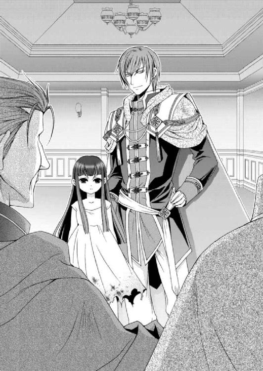
そんな六歳か七歳くらいの少女の姿から誰もが無害だと思いがちだが、幼いはずの赤い瞳には老獪な輝きが灯り眼光はやけに鋭いことにみな気づいてもいいはず。
「......」
問題はみながゾフィーやクルゾンに気を取られている間に、大広間からサイファスが姿を消したことだ。
ここから今すぐ逃げ出した方がいい。アルバトルは自然と剣の鞘を摑もうと右手が動いたが、今は帯剣していないことを思い出して、舌打ちする。
武器など役に立たないことを昨夜知ったが、まだ試していない武器があった。せっかくそれを携帯していたのに、いまいましいしきたりで持ち込むことはおろか、今はグレディが持っている。
まずは今の状況を冷静に見極め、退路を探すしかないだろう。
「これが守護使徒......」
「担がれている気がしますよ」
何名かの者は椅子から離れてゾフィーに近づき、品定めするような目で眺めていた。正体を知るアルバトルには勧められない行為だ。
「見かけに騙される馬鹿者どもばかりか。お前たちがこの世界を動かしているとはとても信じられない」
ゾフィーから放たれた年齢にそぐわない瞳の冷たさに、みな彼女から後ずさる。
「......なぜだ、扉が開かんぞっ!?」
危険を察したオルディーンが大広間から逃げようとして扉を叩いているのが視界に飛び込んできた。予想通り扉は固く閉ざされたままで、開かないようだ。
――やはり、閉じ込められたか。
窓はない。クルゾンが入ってきた扉も側にゾフィーがいるため、近づかない方がいいだろう。
そうなると、やはり今は閉ざされている扉を開くしか、ここから出る手段はないようだ。
「お前は何を考えているんだ......」
「すぐにわかりますよ、父上」
クルゾンがそう言うと、ゾフィーが卓の上にふわりと移動し、右手を唇の下に添えて真っ赤な霧のようなものを吐き出す。赤い霧は最初はひとかたまりになってゾフィーの足下を漂っていたが、それらは次第に増え、卓いっぱいに広がっていく。
以前、ゾフィーからもたらされた黒い霧は、人々に疫病をまき散らした。今度の赤い霧がどういう効果があるのかはわからないが、それに触れてはならない、逃げろと心の警笛が鳴り響く。
「その赤い霧に触れるなっ！ 下がれっ！」
アルバトルはそう叫ぶと、すぐさま胸元からジンの砂時計を取り出し、逆さにした。すると小さなジンが姿を現しアルバトルの肩に乗る。
が、状況を察した彼の笑顔は、すぐさまかき消えていく。
『王......子。......また何やらまずい場に呼び出されましたなあ......』
「向かいの部屋にグレディが待機している。そこへゆき、この部屋の扉を開けさせろ！」
『わかった！』
みなもようやくここにいると危険だと気づき、卓から飛び退くようにして椅子から離れると、扉へと駆けていく。
「もう遅いわ」
ゾフィーの笑みが深くなる。同時に赤い霧が逃げ惑う人々の足下から背後へと這い上り、頭から身体を包んでいく。
中の騒ぎに気づいたのか外からも扉を激しく叩かれているが、びくともしない。
そのうち赤い霧に包まれた人々は、叫ぶこともなくがくがくと膝をついて座り込むと、魂が抜けたように惚けた顔になった。
その中にオルディーンも含まれていて、彼も例外に漏れず目から光が失われたまま、座り込んでいる。
「ゾフィー......この赤い霧はなんだ？」
「なんだと悩まなくても体験すればその愉しさがわかるが、悪いがお前は対象外だ。別の遊びを用意しているからな」
対象外――!? この赤い霧は襲う人間を選別することができるようだ。すべてはゾフィーの思いのまま操れるのだろう。
ゾフィーが卓に座り、足をぶらぶらさせているのを横目に、ダンセンが青ざめた顔でクルゾンに叫ぶ。
「......この少女はなんだっ!? お前は何を掘り出したんだっ!?」
「守護使徒だと言ったはずですよ」
「ダンセン皇王っ！ そこから離れてください」
アルバトルが割り込むようにそう言ったが、ダンセンは振り返ることもなく、クルゾンを見据えていた。
「......みなに何をしたんだ!? お前たちは何を......企んでいるんだ？」
「ゾフィーが操り人形にしただけですよ、父上」
赤い霧を吸い込むと操り人形になるのか!?
アルバトルはすでに赤い霧に取り込まれてしまった人々を見やり、奥歯を嚙む。
「......もっともあなたはその価値もありませんが」
「お前は......一体何様の......！」
クルゾンはベルトに差した短剣を抜くと、またたく間にダンセンの腹を突き刺した。
ダンセンは刺されたことにすぐには気づかず、クルゾンの顔と短剣を交互に見比べ、首を傾げる。けれど短剣が抜かれ血が噴き出すと、ダンセンはようやく自らが刺されたことに気づいたようだった。
「......なっ......」
「後はお任せください。私がイリディアスの皇王になりますので」
「クル......ゾン......お前......」
クルゾンの胸倉を摑みながらも、流れる血の勢いに見る間に命の火が消えゆくダンセンは、身体を小刻みに震わせながら、床へと崩れ落ちた。
俯せに事切れたダンセンは床を鮮やかな血で染めていく。そんな父親の死になんの感慨も抱かないクルゾンは足下の父親を踏みつけ、笑った。
「クルゾン......ゾフィーと組んだことを、いずれ後悔することになるぞ」
「後悔するのは貴方ですよ、アルバトル王子」
雷で大木が裂けるような音が響くのと同時に扉が吹き飛ぶ。部屋にいる王や名代としてやってきた王子の部下や護衛がなだれ込む中、グレディの声が聞こえた。
「王子！」
彼によって投げられた剣を空中で摑み、鞘から抜いてすぐさま構える。
それはワームの外皮で作った特別な剣だ。滑らかな陶器にも似た輝きを放っていて、表面に黒い斑点がプツプツと浮き上がっている。
どれほど魔防で身を固めた相手でも、この剣は人の肉体を貫く。もしかすると、ワームを嫌うゾフィーにも有効かもしれないとアルバトルは密かにこの特別な剣を何本も作らせ、ルセリアを守る兵士や身近な者に装備させていた。
「......珍しい剣だな」
「ああ。これならば錆びない」
アルバトルは卓に座るゾフィーに向かって剣を振り下ろしたが、彼女はふわりと身をかわし、空中に浮く。
ゾフィーの柔らかそうな髪は風も吹いていないのに、水面に漂う水草のように揺らめいた。
「何か勘違いしているようだが、私はお前の命をここで奪う気はない」
ゾフィーはアルバトルから距離を取って卓に座り、小馬鹿にしたように足をぶらぶらさせた。
もう一度、斬りかかろうとしたところにクルゾンが割って入り、剣の合わさる音が響く。交差した剣の間で、アルバトルは叫んだ。
「クルゾン、ゾフィーはお前たちを利用しているだけだ。利用価値がなくなれば、その他大勢と同じ扱いをされるぞ。どうしてそれがわからない？」
「......利用？ 別に構わないさ、王子。最大の目的を果たさせてくれたんだからなっ！」
剣を押しやり離れるのと同時に再び交える。甲高い音と、腕から腰に伝わる鈍い力に、奥歯を嚙みしめる。
「お前たちはゾフィーに魂を食われてもいいのか？」
「サイファスとともに堕ちるところまで堕ちるさ。それも本望だ」
操られているわけではなく、自ら選択したことだと言わんばかりのクルゾンの目には、強い意志が宿っていた。それは狂気にも近い輝きを放っている。
まるでサイファスと同じ――。
「......馬鹿がっ！」
受けている力を引くことで脇へと流し、バランスを崩したクルゾンの腹に、持ち替えた剣の柄を思い切り打ち込む。クルゾンは喉の奥からうめき声を吐き出し、くの字に身体を折り曲げ、崩れ落ちた。
しかし、その場で一度は振り上げた剣を、アルバトルはためらいがちに下ろした。
ここで命を奪わなかったことを、この先、後悔する日が来るかもしれない。
それでもクルゾンが、サイファスにただ利用されているだけだと思うと、非情な決断はできなかった。
優しさではない。それこそがゾフィーの目的だからだ。彼女を喜ばせるようなことをやるつもりはない。
「我が王はどうしたというのだっ！ 誰か......医師を！」
「シシアが謀ったのか？ サイファス王子はどこへ行ったのだっ！」
自分の主が魂の抜け殻のようになった姿に驚き、理由を求める者から怒りに叫ぶ者で溢れていく。そんな彼らにもゾフィーの吐き出した赤い霧が襲いかかった。
が、赤い霧は波が剣で真っ二つに裂かれたようにグレディを避けていた。幸運ではない。ゾフィーに弄ばれているのだ。
不意にゾフィーが人差し指を上げた。同時に、赤い霧に包まれた警護の兵士が虚ろな目をしたまま剣を抜き、グレディに突きつける。
アルバトルに駆け寄ろうとしたグレディは、剣を交えながら驚きの声を上げた。
「......っく。どうなっているのですか!?」
「グレディ、赤い霧に気をつけろ！ そいつのせいだ！」
そう警告しつつアルバトルは退路を探すため肩越しに背後を窺った。だが、出口はグレディがジンの力を借りて壊した場所しかない。だがそこも、ゾフィーによって操られる敵であふれるばかりで、通り抜けることは困難だ。
どこかに抜け道はないのか――？
『アルバトルっ！ 砂時計を床に投げつけて割るんだっ！ 実体化した我が輩がグレディの身体を借りて、退路を開きますぞ！』
アルバトルは砂時計を取り出すと、足下に叩きつけて割った。砂煙が立つのと同時にジンの姿が現れ、グレディの身体と重なる。
「ジンっ、頼む！」
アルバトルがそう叫ぶと、背後から魔術を使用するジンの詠唱が聞こえ、大きな石が地面に落ちたような鈍い音が響いた。これで分魂水晶が手元にくるまでジンの力は使えない。
「王子っ、早くっ！」
アルバトルとゾフィーの間に割って入ろうとしたグレディだったが、彼女が片方の手を上げた瞬間、後方へ引っ張られたように飛ばされた。
「グレディっ！」
脳しんとうでも起こしたかのように、グレディは頭を押さえたまま、立ち上がろうとするも起き上がれないようだった。
「私はお前に用事がある」
ゾフィーはひょいと床に飛び降り、アルバトルに向かってゆるりと近づいてくる。
驚くほど濃い闇がゾフィーの身体から吹き出し足下に満ちていく。その姿は、まるでたゆたう闇の水面に立っているようだ。
滑るように近づいてくるゾフィーからじりじりと後退するアルバトルに、「王子、逃げてください！」というグレディの悲鳴にも似た叫び声が聞こえたが、どういうわけか身体が言うことをきかない。
「いいことを教えてやろう」
「お前を滅ぼす方法なら、ありがたく聞いてやるが」
アルバトルがそう応酬すると、ゾフィーはニッと嗤った。幼い顔立ちをしているのに、その笑みは大人びている。
「お前の側近の男。ずいぶんと小さな頃から側にいるようだが......あれを信頼しているのか？」
「......だったらなんだ」
「お前に関する重要な秘密を抱えているぞ。恐ろしい......秘密だ。あの男はそれを告白できずに、幾夜も眠れぬ日を過ごしている」
ゾフィーは勝ち誇ったような笑みを浮かべたまま、アルバトルの目を見据えている。瞬くことのない彼女の目は、時間が止まったように動かない。
「王子っ......信じては......っ！」
ようやく立ち上がったグレディを、ゾフィーは再度手を上げて、床に叩きつける。
「よせっ！」
「あの男はよほどお前を失うのが怖いようだ」
ふうんと鼻を鳴らし、ゾフィーはちらとグレディに視線を流す。が、人を見る目ではなく、道ばたに転がる石を眺めているような無関心さだ。
「そうやって惑わそうとしても無駄だ」
「惑わしているわけではない。私は人間の欲望を解放しているだけだ。もともとあるものについて非難されるいわれはないぞ」
ゆっくりと視線を戻し、ゾフィーはアルバトルに手をかざした。同時に身体が背後へ引っ張られ、両手両足が壁に張り付けられる。まるで鎖が身体中に絡められているかのように、動かない。
「......っく」
「こうして見ると、なかなか美しい顔をしているな」
ゾフィーはアルバトルの頰を小さな手で触れる。驚くほど冷たい感触に、アルバトルは思わず目を見開いた。
「......何をするつもりだ？」
「そう急ぐな」
魂まで凍えそうな冷えた指がアルバトルの目尻や鼻先を撫で、首から肩へと移動していく。
その間も、どうにか身体を動かせないか、アルバトルは必死に力を込めていたが、水が蒸発するように、力が空中に奪われていく。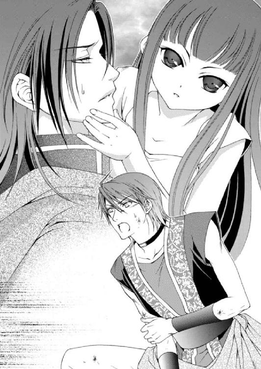
「この美しい目から光を奪うのもいい......それとも手足から力を奪うか......」
鼻先が触れ合うほど顔を近づけたゾフィーはしばらくアルバトルの目を覗き込んでいたが、思い立ったように頰に両手を添えた。
「......っ！」
あっという間に重ねられたゾフィーの唇は、指先と同じく氷のように冷たい。背筋にぞっとしたものが走り、身体が小刻みに震えた。ゾフィーがアルバトルの唇をこじ開けると、得体の知れない熱い塊が喉をするりと通って体内に入る感触が伝わった。
今のはなんだ――!?
ゾフィーの唇が離れると、身体を拘束していた力が消え、アルバトルは壁に背を押しつけたままずるずると座り込んだ。
「......げほっ、げほっ！」
喉の奥が熱く、腹に冷たい石をたっぷり詰められたような不快感に襲われる。指先が炎に焼かれたようにちりちりと痛み、額には冷や汗が浮かんだ。
「王子っ！」
よろけながらも駆け寄ってきたグレディは、声すら出せずに震えるアルバトルの様子に顔色を変えて、ゾフィーを肩越しに振り返る。
「王子に......何をした!?」
「死の口づけだ」
「......なっ!?」
ゾフィーはグレディが守るように腕に抱くアルバトルを見て、小さく嗤った。
「しばらくすると慣れて立てるようになるが、お前の命は一月と保たないだろう。痛みと苦しみは日々強くなり、いずれ世界を呪いつつお前は朽ち果てる」
「そんな......なんてことだ。......私がついていながら......私が......っ！」
グレディからはいつもの冷静さが失われ、今にも泣きだしそうに顔を歪めている。そして何を思ったのか、アルバトルを離すとゾフィーの足下に頭をこすりつけるようにして土下座をした。
「お願いします!! 王子の呪いはこの私が引き受けます。どうか......命だけは奪わないでください。私で足りなければ......ビアランの国民の命を欲しいだけ奪っていい」
グレディ......!? お前は何を言って――。
正気を失ったようにも見えるグレディを、叱咤しようとしても、断続的にやってくる痛みで目が霞み、手が伸ばせない。
「お前やその他大勢の命になど、なんの価値もないわ。私の主の愛する者が苦しむからこそ、価値がある」
「なっ......」
顔を上げたグレディは、もう一度アルバトルのもとへと戻ってくると、壁を背にただ座っていることしかできないアルバトルを抱きしめた。
「......なぜ......私の正気を奪わない？ どうしてあそこにいる方たちと同じように私を扱わない？」
「お前を人形にすれば、その男の苦しみを嘆く者が減る。私にとってそれは不本意なことだからだ」
ギリッと奥歯を嚙みしめる音がアルバトルの耳に届く。グレディの怒りが熱となって触れる身体から伝わってきた。
「......ゾフィー。この命に代えても必ずお前を......」
「お前の命などいくつあろうと、それは無理な話だ」
今にもゾフィーに斬りかかりそうなグレディをアルバトルは引き留める。
「よせ......グレディ」
言葉を続けようとしたが、喉が焼け付くように痛み、アルバトルはもう声が出せなかった。
「......お前を......必ず......滅ぼします！」
「いいぞ。私を心の底から恨むといい。消えぬ怒りの炎で身を包め。果たせぬ復讐に身もだえる日を過ごせ。それが私の糧になる」
高笑いとともにゾフィーは姿を消し、彼女の操り人形となった者たちが次第に沈黙に囚われていく。
「坊ちゃま、大丈夫です。私が必ずなんとかいたします......必ず......必ず......」
グレディはアルバトルをきつく抱きしめ、呪文でも繰り返すよう、何度もそう呟いている。
こんなグレディは未だかつて見たことがない。母が亡くなったときですら、これほどうちひしがれることはなかった。
ああ、そうだ。俺はまだ死んではいない――。
そんな言葉すら今のアルバトルには発することができない。
グレディの悲嘆に暮れた声を暗澹たる思いで遠くに聞きながら、アルバトルは意識を失った。ルセリアはレイやエミールとともに港に向かおうとしたが、馬車がすぐに用意されず、城の前にある広場でしばらく待たされることになった。
表向きは街を観光するためだと馬車の使用を願い出たのだが、普通は前日に依頼しておかなければならないらしく、手続きに時間がかかると言われ、待つしかなかったのだ。
歩いて港まで行こうかと本気で思い始めた頃、ようやくシシアの馬番が馬車を用意してくれた。ルセリアたちは警護の兵とディナンの乗る馬を前後に配置して港へと出発した。
空は黒い雲が垂れ込めたまま、太陽の光が僅かも漏れてこない。昼を過ぎているのに薄暗く、今にも雨が降りそうだ。吸い込む空気はどこか重く、陰鬱な空を眺めていると理由もなく気分が落ち込んでいく。
馬車から見える通りには、王子の婚儀を祝う花やリボンの飾りが溢れている。
それらは本来華やかであるはずなのに、どの色もどこかくすんで見えた。通りに建つ建物は昨夜と同じように窓も扉も固く閉じられていて、表にも人の姿がない。
それでも少し離れた道から見えた露店街には買い物をする人たちもいたが、みなフードを深々と被っていて、活気がなかった。
ルセリアは窓から視線を外し、隣に座っているジンに聞く。
「......これもゾフィーの影響なの？」
「ゾフィーが存在するだけで、その土地は汚れ、人々の心は荒む。この国も徐々に侵食されているのだろう」
「早くなんとかしないと......」
そう呟いたものの、ルセリアに何かいい手が思い浮かんでいるわけではない。ただ、一つだけはっきりしていることは、ゾフィーはいずれこの身に迎え入れなければならないということだ。
とはいえ、たとえルセリアが守護使徒を宿す正当な主だとしても、他の五つの守護使徒を宿したうえでなければ、ゾフィーを受け入れてはならないらしい。正当な主であっても心が闇に吞み込まれてしまうのだという。ゾフィーはそれほど危険な存在なのだ。
ルセリアにはあと二つの守護使徒が必要だった。土の使徒・ゴンゴンと、まだ存在すら感知できない光の使徒・エスペンザ。
エスペンザはどこにいるのだろうか。
思案していたところで馬車が唐突に停まり、身体が前に放り出されそうになるのを、背後からレイが止めた。馬の嘶きが響き渡り、外が騒がしくなった。
「どっ、どうしたの？」
「姫、僕が外へ出たら、鍵をして決して外へは出ないでくれ」
「え......ええ」
ルセリアがそう言うと、レイは馬車の扉を開けて飛び出した。すぐに鍵を掛けたが、窓際に近づいたからか、外から見知らぬ男の手が伸びルセリアの髪を摑む。思わず声を上げると、ファンファンがその腕に火をつけて追い払った。
「ありがとう、ファンファン」
「ほかの奴らを炭にしてやろうか？ ゴッホ～」
ファンファンはたてがみや尻尾の先を炎で発光させながら、得意げだ。
「いいのよ、ファンファン。充分よ」
「我が輩の出番もなさそうだなあ......」
分魂水晶に宿るジンは身体もないのに隣に座り、腰までを残して馬車の外を眺めている。ルセリアも気になるが、騒ぎが落ち着くまで待つことにした。
しばらく剣が交わる音が響いていたが、ほどなく静寂が訪れる。とにかく外の様子が気になっていたルセリアは、窓から外を見たくてたまらない。
「もういいかしら......」
「ルセ様。危険です」
エミールの震える声にルセリアは乗り出そうと浮かせた腰を下ろす。
「おうおうおう。片付いたようだぞ。いつの間にかハーヴェイもやってきておるぞ」
首を馬車内に戻したジンの言葉に、ルセリアは身を乗り出すようにして窓から外を確かめる。
通路には暴漢らしい男たちが後ろ手に拘束されて転がされていた。そこに立つ、レイやディナンの傍らに顔を仮面で隠したハーヴェイの姿があった。
「......本当だわ」
窓に張り付くように外を眺めているルセリアに気づいたハーヴェイは微笑む。
「大丈夫ですか、姫」
「えっ、あ......私は大丈夫」
ハーヴェイにそう答えたルセリアは、続けてレイに「もう外に出ても大丈夫？」と聞いた。
「大丈夫だ」
馬車から外へ出ると、三人の男たちの顔を一応確かめてみたが、当然、見た人間ではない。
「......物盗りなの？」
「いえ。サイファスの手の者ですよ」
ハーヴェイの言葉にルセリアは驚きに目を見張った。
「私は城に潜入していたのですが、姫の行動を追い、捕まえられるようならそうするようにと指示する弟の話を耳にして、追ってきたんですよ」
「......そんな......サイファス王子は何を考えているの......？」
ハーヴェイは抜いた剣を鞘に戻し、首を左右に振る。レイやディナンは捕まえた男たちを路地裏へと引きずっていく。彼らをしばらく隠すことで、サイファスが企みを失敗したことを知るまで時間を稼ぐつもりなのだろう。
昨夜はあんなにも憔悴した顔をして、協力して欲しいと頼み込んでいたのに、今日は暴漢に襲わせる。一体、何を企んでいるのだろうか。
サイファスの思惑がどこにあるのかまるでわからず、ルセリアは考え込む。
「ところで姫はどちらへ向かわれるのです？」
「え......あ。港に向かっているの」
問われて思わず我に返って答えるルセリアに、ハーヴェイは少し首を傾げる。
「港に？」
「ええ。ジンが来てくれたから、例のものをなんとかできるかと思って」
ハーヴェイは口を少し開いたが、言葉は発せられなかった。何かを考えるように視線を漂わせ、小さく頷いた。
「......そうでしたか。では私も港までご一緒しましょう。また襲われる恐れもありますので」
「ハーヴェイの方は......大丈夫なの？ お互いのために情報は交換していないってアルバトルは言っていたけれど」
小さなため息をついて、ハーヴェイは肩を落とす。
「潜入はできましたが、そこから動きようがなかったのですよ。この婚儀はやはり策略と考えていいでしょうね。非常に厳重な警備と罠があちこちにありました」
「やっぱり......アルバトルは大丈夫かしら......あ、ちょっと待って」
レイが腕を引っ張るので、ルセリアはハーヴェイから少し距離を取り、彼に背を向ける。
「どうしたの、レイ？」
「あれは本当にハーヴェイか？」
レイの質問にルセリアはそっとハーヴェイを肩越しに振り返る。ハーヴェイの袖から僅かに覗く左手首に、包帯が巻かれているのを確認した。
「もちろん、ハーヴェイよ」
「なら、いい」
レイの心配は当然のことだ。サイファスとハーヴェイは双子で、その容姿は見分けがつかない。ハーヴェイがサイファスを偽ったことがあったが、その逆の可能性もあるのだ。
ルセリアは気を引き締めるのだと自分に言い聞かせる。
「姫、そろそろまいりましょう」
「ええ」
ディナンに促され、ルセリアは再度、馬車に乗り込んだ。
ハーヴェイやディナンは馬車の前後について、警護する。レイはルセリアの隣に座った。
暴漢に襲われたことで、ルセリアは抱えている不安が増した。
「アルバトルが心配だわ......」
「今は各国の代表者と会食だと伺っています。シシアの正式な招待ですし、大丈夫ですよ」
エミールは明るい声でルセリアを安心させるようにそう言った。
「そうよね......何かあるとしたら......今夜よね」
以前、シシアにやってきたときも正式な招待だったので、サイファスも表向きは紳士に対応してくれた。それを信じることができればいいのだが、彼の前では国同士の取り決めなど意味のないものだ。
不安が拭えないルセリアの隣で、ジンが遠くを見るような目をして沈黙している。
「ジン、どうしたの？」
「......いやいやいや。なんでもない」
大げさに手を振って笑うジンに、なんとなく違和感を持ちながらも、ルセリアは背もたれに深く沈み込む。
アルバトル......大丈夫よね。
ルセリアはアルバトルの無事を祈りつつ、気持ちを落ち着かせるため、ゆっくりと深呼吸を繰り返した。
まもなく港に到着するとルセリアはすぐさま船に乗り、土の使徒が囚われている立方体を保管した部屋へと向かった。扉の前には兵士が二人立っていて、ルセリアがやってくると、声をかける前に鍵を外して扉を開けてくれた。
「ありがとう」
ルセリアは机の上に置いた立方体に被せている布を取り払う。すると初めて目にしたジンが驚きの声を発した。
「......なんと......これは............」
ジンはうなるようにそう言い、立方体の周りをせわしなく移動し始めた。ルセリアはジンのただならない様子を目で追い、答えを待つ。
「ううぬ。まさかまさか......まさかなあ......」
「ジン、どうしたの？」
ようやく立ち止まったジンはルセリアに向き直った。
「魔導師というのは紋章を刻んで詠唱することで術を発動させる。そのとき描く紋章には癖......というのがあるんですな。同じ目的地に行くにもいくつか道があるように、同じ術を発動させるにもいろんな組み合わせがある」
「それで？」
「この......ブレスレットに刻んである紋章は......我が輩が描いたものに似ている。いや、我が輩が描いたようにしか思えんのだよ」
ルセリアには比べるための資料もなければ、該当するブレスレットも持たない。けれどジンがここまで言うのだから、よほど似ているのだろう。
「それに、この腕のタトゥーだ」
「ジンが知ってる人の......腕？」
「いや。我が輩の腕だ」
「え――っ！」
予想もしなかったジンの言葉にルセリアは思わず声を上げていた。
するとジンは右袖をまくり上げて腕を露わにした。そこには立方体に囚われているものとそっくりなタトゥーが刻まれた腕があったのだ。
「どっ......どうなってるの？」
「......ううむ......」
その場にいた全員がジンの腕と立方体の中を見比べ、ルセリアとエミールは困惑し、レイは眉間に皺を寄せている。ハーヴェイは興味深げに顎を撫でているが、ディナンは真剣な目をして立方体を軽く叩く。ルセリアはその音で我に返った。
「......えっ、ちょっと待って。じゃあこの中に囚われてる腕って......ジンの腕だっていうの？」
「そっくりだから、そうなんだろうな」
「これに関する記憶は戻ったの？ 腕だけ立方体の中にある理由を思い出した？」
「全くもってわからん」
緊張感なく笑うジンに、レイとエミールは冷めた眼差しを向けた。
「姫、このぼんくら魔導師を斬っていいか？」
「レイ、馬鹿なこと言わないで」
「いいえ、ルセ様。一度、殴れば記憶も戻りますよ」
「もちろん殴ってもらえるのなら頭だろうが尻だろうがなんでも我が輩は差し出しますとも。もっともすり抜けてしまうだけですが」
そういう問題ではないのだが、ジンがネディアの魔導師だとマハーク王から聞かされてから、ルセリアは彼がどうして肉体のない存在となっているのか、気になっていた。
味方として封じられたのか、敵として封じられたかがわからないからだ。
「......とりあえず誰の腕なのかはおいて、この手の中に土の使徒の欠片があるみたいなの。ジンの力で取り出してもらえないかなって」
「この透明な立方体の部分は守護使徒の力。魔導師の魔術は効きませんな」
熟考せずジンはすぐさまそう答え、守護使徒たちの非難を浴びた。
「役立たず。ズンズン」
「お前、使えないンだな。ゴッホ～」
「ぼ......僕でも......ぼ、ぼぼ......」
ジンの周りを飛び回って三人はぶつぶつと文句をぶつけている。
「非難は甘んじて受けましょうぞ」
「いつ目覚めてもいいように、城へ移動させた方がいいかもしれないわ。それに、もっとゾフィーに近づいたら目覚めるかもしれないし」
ルセリアは生温かい立方体を手の平でそっと撫で、ため息をついた。
土の使徒はどうして呼びかけに応えてくれないのだろうか。使徒封印のブレスレットのせいなのか、それともゴンゴンの力だという、腕を包んでいる特殊な物質が邪魔をしているからなのか。
「......姫さんや。城には戻らん方がいいかもしれん」
「え？」
「あ～え～そうだ。......実はなぁ、ゾフィーがみなの集まる大広間を襲ったんだよ。我が輩は実体化をして、王子のために退路を開いたが、それを利用しても逃げおおせたか、確認するまで保たんかったから、わからんのだよ」
あまりにもさらりと重大なことを告げたジンに、ルセリアは声が裏返る。
「どっ......どうしてそんな重要なことを言わなかったの!? それなら早くアルバトルを助けに戻らないと！」
ルセリアが部屋を飛び出そうとするのを、レイが手首を摑んで止めた。思わず身体が前屈みになったが、さらに引っ張られて戻される。
「姫はここにいろ」
「何を言ってるの？」
「私たちが参りますよ。姫様はこちらでお待ちください」
ディナンまで微笑みながらも有無を言わさない口調でそう告げるのを、ルセリアは断固拒否した。ジンが実体化したということは、砂時計はすでに割られていて、次の呼び出しができないということだ。
アルバトルは窮地に立たされている可能性がある。ルセリアだけがここに残るわけにはいかない。
「いいえ。私は行くわ。......レイ、命令よ。土の使徒を城へ運ぶ準備をして」
「わかった」
ルセリアの覚悟を感じ取ったのかレイはあっさりとそう答え、兵士とともに荷造りを始めた。ルセリアはさらに守護使徒たちの方を向く。
「ナナル、ファンファン、レヴィン。誰かアルバトルの様子を見に行ってくれる？ そこでアルバトルを助けてあげて」
ルセリアはそう言ったが、守護使徒たちは顔を見合わせて、小声でぼそぼそと話し合うばかりで動こうとしない。
「どうしたの？ いつもは勝手にアルバトルのもとへ行くでしょう？」
「ルセ様、ゾフィーが怖いんじゃないですか？」
エミールの言うとおり、守護使徒たちはゾフィーを恐れている。だから彼女に近づきたくないのだろうか。
「そうなの？」
またこそこそと聞き取れない声で話をして、ナナルが顔を上げた。
「ナナル......行ってもいいぞよ。アルたん、気になる、気になる。ズンズン」
「ありがとう、ナナル。お願いね」
「でも見てくるだけ。ズンズン」
ナナルは小さな尻を左右に振りつつ空中を飛び回る。今にも飛び去りそうなナナルを引き留め、ルセリアは聞いた。
「どうして見てくるだけなの？」
「どうして？ ナナル意味がわからないぞよ」
ナナルは困惑した表情でルセリアの周りを旋回していた。ルセリアにはナナルの返事が理解できないのだが、ナナルからするとルセリアの頼みが理解できないようだ。
困っているとディナンが答えをくれた。
「守護使徒は明確に指示された命令しか遂行できないのです。ゾフィーとエスペンザは別だそうですが」
「わかった。それならアルバトルがこうして欲しいって言ったら聞いてくれる？」
ナナルは身体を左右に揺すって「アルたんの言うことは聞かないよう～ズンズン」と答えた。
守護使徒は宿主の命令に従う。他人は含まれないのかもしれない。
「じゃあ、これをアルバトルに渡してくれる？」
ルセリアは懐からジンの分魂が宿っている水晶を取り出した。これさえあれば、アルバトルもジンの協力を得られる。
けれどジンは不安そうな顔を浮かべた。
「姫さんや......我が輩は不安だ」
「お願い、ジン。分魂水晶ならジンも自由に術を使えるでしょう？ アルバトルを助けて」
「......海の中に落っことさないでくれよ」
「ナナル、大丈夫。は～い！」
ナナルは分魂水晶を飲み込むと、驚くほどの勢いで窓から飛び出し、姿を消した。残ったファンファンはむっつりしていて、レヴィンはルセリアの中に戻る。
「......ファンファンにとってアルバトルはどういう存在？ 困っている人がいたら助けてあげたいとは思わないの？」
ファンファンは答えず、興味なさそうにただ尻尾をぐるぐると回すばかりだ。
守護使徒にとって主以外の人間はどういう存在なのだろうか。ルセリアが心を許している人たちも同じように守護したいとは考えないのだろうか。
僅かにナナルはアルバトルに懐いているようだが、だからといって命の危機を救うという、単独の考えは持っていない。守護使徒は学び成長すると聞いているが、人を助けたり危害を及ぼしてはならないということは学んでくれないのだろうか。
「守護使徒はあくまで主だけの命令に従います。それは仕方のないこと」
ルセリアの悩みを理解してくれたのか、ディナンはそう慰める。
「ありがとう......ディナン」
仕方のないこと――。
ルセリアはそんなふうに諦めたくなかった。守護使徒が主によって善になったり悪になったりするのはおかしい。彼ら一人一人がきちんとした善悪の基準を持てば、どんな人間に宿ったとしても、悪用されることはなくなるからだ。
「姫、準備が整った」
「ありがとう、レイ」
立方体を厳重に布で包み、衣装箱に詰めて蓋をする。それを兵士二人が両端を持って部屋から運び出す。昨夜シシアの城で肌寒い思いをしたルセリアは、エミールに追加の衣装を用意するように伝えて、後を追った。
階段を上って甲板に近づくのと当時に、剣の交わる音が聞こえた。
「......姫、ここでお待ちください」
ディナンがそう言い、階段を上っていく。後ろにいたレイがルセリアの前に移動して、剣を構えた。
「背後は私が......」
ハーヴェイはそう言って剣を抜き、後ろを注意深く窺う。けれどルセリアはこの場にとどまっていられないことに気づいた。
「......もしかしてゴンゴンがっ！」
ルセリアは制止するレイを押しのけ、甲板に駆け上る。
薄暗い場所から明るい場所に飛び出す。そこで、甲板で見張りをしていた兵士たちの倒れた姿と、未だ剣を交えているディナンの姿が目に飛び込んできた。
だが最も驚いたのは、ゴンゴンが囚われている立方体を納めた衣装箱の傍らにカルソーニが立っていたことだった。
「......カルソーニっ！」
「ごきげんよう、姫。長い間探していた土の使徒をわざわざお持ちいただき、感謝しておりますよ」
カルソーニは見た目はジンより少し若いくらい。誰もが目を奪われる素晴らしい銀髪を持っていて、それを肩より少し長く伸ばしている。
面長の輪郭。一重の目は鋭く薄い唇には冷笑が浮かんでいる。彼から伝わってくるのは、得体の知れない怖気。闇を纏っているようなフード付きの黒いローブは、彼の足下までをすっぽりと覆っていた。
「ここはビアラン国の船よ！ 船上は国の領地と同じ扱いのはずだわ！ ここでの無礼な行いや略奪行為も許されないはずよ！」
毅然とした態度でそう言うったルセリアだが、ふいに背後から肩を摑まれ驚いて振り返る。
「......ハーヴェイ!?」
「姫、彼には逆らわない方がよろしいですよ」
耳元で囁く声はハーヴェイのものではあったが、何かがおかしい。
身じろぎできないルセリアに、ハーヴェイはゆっくりと仮面を外し、微笑んだ。
まさか――!?
「......サイファス......王子？」
「ええ」
ルセリアはサイファスから離れようとしたが、回された腕に捕らえられ、両足が浮く。
「はっ、離してっ！」
声を上げたためか、ファンファンが怒りの形相で、サイファスの手に燃える尻尾を叩きつけた。サイファスは思わず手を離し、ルセリアは身体のバランスを崩して前に倒れそうになる。そこをすかさずレイが支えた。
「レイっ！」
レイはルセリアを自分の背後へと押しやって、サイファスに向かって剣を向ける。
「そういう態度でしたら仕方ありませんね」
サイファスが右手を軽く上げると、シシアの兵士がルセリアの後ろにいたはずのエミールを連れてやってきた。いつの間にか捕まっていたようだ。
「やめて！ 誰も傷つけないで！」
「ならば、姫。守護使徒を黙らせ、私の側にいらしてください」
さあと言って手を差し出すサイファスに、レイは首を左右に振って、ルセリアを行かせようとしない。
「ルセ様っ！ 私のことは構いませんから、お逃げくださいっ！」
エミールは叫んだが、もちろんそんなことルセリアにできるわけなどない。この場にいる誰一人として、失うわけにはいかないのだ。
サイファスはまだ手を伸ばして微笑んでいる。まるでダンスを誘う紳士にも似て、恐ろしいほど優美だ。
「姫、どうします？ 守護使徒を使ってここで殺し合いをしますか？」
ルセリアが守護使徒をそういったことに使えないことを理解していて、サイファスはあえて問うのだ。
もちろん、ルセリアもサイファスに従いたくはない。彼の意のままにされるのは耐えがたい。
けれどアルバトルの無事を確認できるまで、今はサイファスに従った方がいいだろう。
「......わかった」
ルセリアはレイが引き留めるのをやんわりと押しやった。しかし、レイは困惑した表情で引き留めようとする。
「......姫」
「レイ、ディナン、ごめんなさい。お願いだから剣を収めて」
その言葉に二人は苦い表情を浮かべたが、彼らにも今の状況が理解できるのか、剣を下ろしたが、すぐに鞘へは収めなかった。
「本物のハーヴェイはどこにいるの？」
「知りませんよ。私は彼を見張っているわけではありません。それに兄が何を企もうと、ゾフィーがすべて解決してくれます」
サイファスはゆっくりとルセリアに近づくと、もう一度手を差し出した。ルセリアは渋々ながらその手を取る。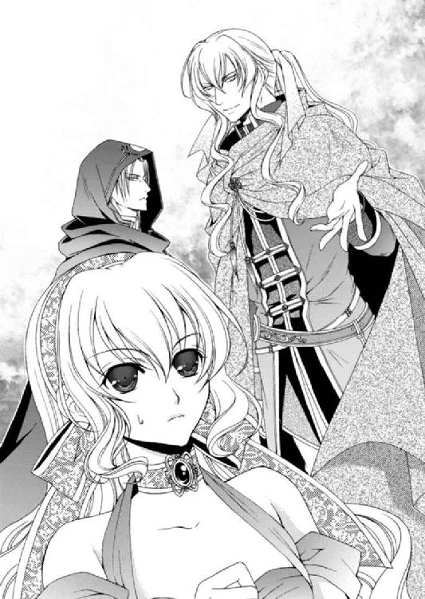
「......いつからハーヴェイを装っていたの？」
「いつからなのか気づかれないほど、私は完璧に兄を演じられていたようですね、姫。ハーヴェイがこの国に足を踏み入れてすぐ、入れ替わりを演じることを思いつきました。双子ということを忌み嫌ってきましたが、こういう場合は便利ですね。兄を演じてもまるで気づかれない。これほどまでに上手くいくとは思いませんでしたが......」
ルセリアの手を自らの手で包むようにして撫で、サイファスはやや自嘲気味に話す。僅かも疑われなかったことが、不本意だったようだ。
「......」
「ですが、同じ顔、同じ姿をしていても、姫は兄に対して私には見せない笑顔を与え、その青い瞳に信頼を浮かべて、無防備な姿を見せる。なんと......腹立たしい」
サイファスは的外れな嫉妬の炎をちらつかせ、怒りを身に纏う。もしかすると、彼にとっては正体がばれて欲しかったのかもしれない。
サイファスが求めているのは、自分がサイファスであるという確固たる存在証明でもあったのだろう。
「カル、土の使徒と先に船に乗って待っていてくれ。私は姫とともにゆるりと向かう」
「かしこまりました」
静かに佇んでいたカルソーニがそう答えると、一つ二つ詠唱を呟いたのち、土の使徒を納めた衣装箱とともに姿を消した。
レイやディナンはシシアの兵士に背を押されるようにして船を下ろされる。エミールが甲板にまだ残されているのは、彼女だけはルセリアの側に置いてくれるつもりでいるのか。
「......サイファス王子。私やアルバトルに助けを求めていたのは、噓だったの？」
「噓などついていません。ですが気づいたのです。ゾフィーを制御できる人間はいないのだと。ならば協力し合えばいい。彼女に欲しいものを与え、私は欲しいものを得る」
ゾフィーのあの光を通さない暗い瞳を見て、どうしてこんなふうに考えられるのか、ルセリアには理解できない。
「王子......ゾフィーは欲しいものなんて与えてくれないわ」
「いいえ。与えてくれましたよ」
サイファスが手首を摑んで引き寄せるのを、ルセリアは抵抗して引っ込めようとした。が、強い力で戻される。
「......っ」
やや身体を屈め、上目遣いで甲にキスを落としたサイファスは、何かに取り憑かれたような目をしていた。
彼の執着は強い。愛がどういうものなのかを忘れ、独占することしか考えていないようだ。
ほんの僅かにサイファスの力が緩んだところで、ルセリアはその腕から逃れて手を引っ込めた。
「......何を見返りに渡したの？」
「アルバトル王子の命ですよ」
「なっ――!!」
微笑むサイファスの表情はとても満たされたもので、先日確かにあった翳りや苦悩は、欠片も残されていない。
ルセリアは驚きに目を見開いたまま、しばらく声を失っていた。闇にどっぷり浸かるとこんな気分になるのか。身体の芯がまるで凍ったように冷え、あらゆる力が吸い取られたかのような脱力感。目を閉じると身体の細胞が溶けて流れていくような錯覚に囚われる。
永遠に続くとも思えた苦痛もしばらくすると治まり、冷え切っていた身体に体温が戻ってきた。同時に手足が動かせるようになり、浅くなっていた呼吸もようやく落ち着いた。
赤い霧に襲われた王や名代たちは誰に何を命令されたわけでもないのに、みな無言で椅子に座り卓に着いた。警備の者たちも同じように無言で主の傍らに立ち、ぴくりとも動かない。
異様な状況を眺めつつ、アルバトルは小さなため息をついた。
いつまでもグレディに抱きしめられているわけにもいかず、アルバトルはやんわりと彼の拘束を解いて引き離す。
「おい、グレディ。......そろそろ正気に戻れ」
「......すみません、醜態を晒してしまいました」
グレディも落ち着きを取り戻したのか、口調からも動揺は消えていた。微笑すら浮かべる余裕も戻ってきたグレディだったが、強い精神力で自分を保とうとしているのが、アルバトルにはありありと感じられた。
「まだ猶予はある。守護使徒のことは守護使徒に聞けばなんとかなるはずだ」
「私が必ずゾフィーの呪いを解く方法を見つけます。王子、この命に代えても」
グレディは真剣な眼差しでそう言った。けれどアルバトルは別のことが気になっていた。
「一つ、聞いていいか？」
「なんでしょう」
「お前は俺に何か隠していることがあるのか？」
アルバトルの問いに、グレディは何か言いたげに口を薄く開いたが、迷っているのか結局、口を閉じる。
しばらくしてようやく、一言だけ告げた。
「......はい」
「夜が眠れないほどのものか？」
グレディは無言のまま答えることなく、ただ目を伏せた。
「そうか。ならば、今ここで話して楽になれ」
「......そのときが来れば必ず......お話しします」
「なんだ、そのときとは」
はっきりしないグレディに、さすがにアルバトルも苛立つ。
ほかでもない、誰よりも信頼しているグレディに隠し事をされていたとは、裏切り行為にも等しい。
ただ、グレディだからこそ、隠す理由があってのことだと、アルバトルは理解しているつもりだった。
「私にもわかりません。......が、そうお答えするしかないのです」
グレディはそれで話は終わりだとばかりに立ち上がると、未だ気を失っているクルゾンを柱に縛り付けた。
「おい、グレディ！ 勝手に話を終わらせ......」
さらに問い詰めようとしたアルバトルの傍らに、唐突にナナルが出現した。
「ズンズン。お前たち、取り込み中か？」
「ナナルっ！ どうしてここに!?」
アルバトルの周囲をぐるぐると飛び回るナナルは、いつものごとくテンションが高い。
「ご主人様から頼まれたものを......うおっ！ アルたん。腹の中に、ゾフィーの呪いを抱えているぞよ。そういうナナルも腹の中に抱えてるぞよ、は～い！」
「ナナル。王子の中の呪いはどうやったら解けるのです？ ナナルがなんとかできないのですか？」
アルバトルから飛び退いたナナルに、グレディが詰め寄る。ナナルはアルバトルにちらちらと視線を流して、小さな顔を歪めた。
「ゾフィーの呪いはナナル解けない。アルたんは死ぬ。おお、可哀想に。ズンズン」
「......ああ、そうだな。それで、お前は何を腹の中に抱えてるんだ？」
「ご主人様がアルたんに持って行けって言うから......ぺっ！」
ナナルは半透明の身体から、水晶を吐き出す。同時にジンが姿を現し、嫌そうに顔をしかめて濡れてもいない服を払ってみせた。
「......おうおうおう。ナナルの腹の中はぐっしょり湿っていて気持ちが悪かったぞ」
ルセリアを港に行かせたのはジンの力を借りて土の使徒を目覚めさせるためだ。それができていたらジンのことだ、自分の功績をまず自画自賛しているはず。
「ジン！ どうしてここに来たんだ？ 土の使徒はどうなったんだ？ ルセリアは？」
「そ、そう、一気にまくし立てんでくれ。順を追って話すからのう」
肩を竦めたジンは、静かに座るその他大勢の存在を気にしつつも、港で何があったのかを話した。
「......お前の腕だというのはどういう意味なんだ？」
「我が輩の肉体の一部だった......ということなんでしょうが......どうしてそんなことになっているのか、記憶がないのですよ」
へらっと笑うジンに、アルバトルの方が脱力しそうだった。
今のところ唯一ゾフィーを抑える可能性を持つ土の使徒を目覚めさせることができない。ならば、メイフェスにブレスレットをはめてこの国から連れ出すという計画をゾフィーに知られている危険を考えると、ビアランに帰国することも考えた方がいいかもしれない。
「それで王子は......ぶっそうなことになっているようですな」
今は触れて欲しくないことを口にしたジンをアルバトルはジロリと睨み付けた。が、ジンは笑って誤魔化そうとするばかりだ。
「ジン、呪いは魔術でも解けないのですか」
「......かけた相手は守護使徒のゾフィーです。魔術の類ではありませんから、人間がどうこうできるものではないでしょう」
「わかった。この件はしばらく棚上げだ」
自分にかけられた呪いについてももちろん気掛かりだが、どうにもならないことで思い悩み、時間を無駄にしたくない。
「それで......彼らはどうなっとるんだ？ 虚ろに座っているだけでこちらを気にする様子もない。どうにも気味が悪いんだがなあ......」
「ゾフィーが撒いた赤い霧に取り込まれた後にああなったんですよ。ダンセン皇王はクルゾン皇子に殺され、そのクルゾン皇子は動かれるとやっかいですので、柱に縛り付けました」
同じ部屋に死体が転がっていても、アルバトルが仲間と話していても、視線さえ向けずにぼんやりしている王たちはさぞかし不気味だろう。
「あれはゾフィーの得意技。人間を自分の僕にする赤い霧。ゾフィーが解放するまで、みんないいなりぞよ。ズンズン」
「......王やそれなりの地位についている者を操り人形にするつもりか」
サイファスか、それともゾフィーか。どちらかが世界を欲したのだ。それとも二人の意見が合致して互いに協力し合っているのかもしれない。
「王子、クルゾン皇子を問いただしましょう」
グレディは穏やかに微笑みながら、柱に縛り付けたクルゾンのもとへ近づいた。そこで皇子の口枷の縄を解く。
クルゾンは屈辱に唇を引き絞り、沈黙したままグレディを見上げた。
「サイファス王子と何を企んでいるのです？」
「......召使いごときに、この俺が答えるとでも......っ！」
グレディは顔色一つ変えず、微笑したままクルゾンの首を摑んで締め上げる。
「なら吐かなくても結構ですよ。このまま首をへし折ってやるくらい、召使いの分際でもできますからね」
「グレディ、やりすぎだ」
「......」
アルバトルの言葉にグレディは手を離したが、不服そうだ。
「クルゾン。サイファスの行動は常軌を逸しているぞ。賢いはずのお前がどうしてわからない」
「話すだけ無駄だ。そもそもアルバトル王子が望む世界と俺たちが望む世界は違う。歩み寄りはできない」
「......そうか。聞くだけ無駄か」
「ああ、そうだな」
クルゾンは満足そうに笑い、その後は何も話さなくなった。どう宥めすかそうと、ここまでサイファスの考えに心酔してしまっていてはまず味方にはならないだろう。
「グレディ、行くぞ」
「......はい」
アルバトルはクルゾンに背を向けたが、グレディは彼の腹を蹴り上げて意識を失わせると、もう一度口枷の縄を巻いてから、後を追ってきた。
「おうおうおう。ところで、ゾフィーはどこへ行ったんだね？」
ジンの言葉にナナルが答えた。
「ずっと下にいる......でも......今は眠ってるぞよ。ズンズン」
「どうして眠っているんです？」
「宿主が......弱ってる。ズンズン」
ナナルは遠くを見るような目をして答える。
ゾフィーは他の守護使徒を宿してからでないと、安全に扱えないという。心を闇に侵され、肉体は滅んでいくだろう。
「今ならメイフェスにブレスレットをはめられるかもしれないな。ナナル、ゾフィーの宿主がどこにいるのか、わかるか？」
「わかるぞよ。ズンズン」
「案内しろ、ナナル」
「ナナル、アルたん嫌いじゃないぞよ。でも命令を聞くのはご主人様だけ」
たぶんそんな答えが返ってくるだろうと予想していたが、ナナルの扱いを多少は心得ていた。
アルバトルはグレディに向かって言った。
「そういえば、ルセリアはゾフィーの居場所を探していたな、グレディ」
「え......ええ。先に居場所を特定しておけば、姫様もお喜びになりますよ」
ナナルはアルバトルとグレディの間に浮遊して二人の会話を追うように見回す。
「......本当？ ズンズン」
「そうですよ、ナナル。姫様はゾフィーのことを気にしていらっしゃいましたからね。ナナルが先に調べて報告すれば、姫様の気持ちを理解してくれるナナルを誇らしく思うはず、そうですよね、王子」
「ああ、そうだ」
アルバトルたちがにこやかにそう言うと、ナナルは小さな羽をブルブルと震わせて、空中で奇妙な踊りを繰り返す。
しばらくすると踊るのをやめて、目の高さまで降りてきた。
「......帰る途中にちょっと寄り道してみるかな～。ズンズン」
「なんと......単......」
単純と言葉にしようとしたジンをアルバトルは止めた。
「ジン、よせ。気が変わると困る」
「ええ、ええ、そうでしたな」
ナナルがふよふよと移動していくのを追おうとしたアルバトルは、唐突に襲った身体の痛みに、まるで何かに躓いたかのようにぐらついた。そこへグレディの腕が回されたが、アルバトルはそれを払って、自ら体勢を整える。
「過保護になるな。いつもどおりでいろ」
アルバトルが睨むと、グレディは困惑した表情を浮かべた。グレディがどれほど自分を責め、アルバトルを心配しているのかは理解しているが、今はまだ自分の足でまっすぐ立てる。
「いいか、グレディ。このことはルセリアには絶対に言うな」
「かしこまりました」
「ジン」
「はいはいはい。わかっておりますよ」
「ナナル、お前もだ。いいな」
肩越しに振り返って様子を窺うナナルに、アルバトルは告げた。
「わかった。そのくらいなら聞いてやるぞ。さあ、行くぞ。ナナルとその僕たち、ズンズン」
空気の読めない陽気なナナルに苛立ちつつも、アルバトルたちは広間を出ると、通路を突き当たりまで行き、下へ向かう階段を下りた。
本来、立っているであろう兵士の姿はなく、すれ違う召使いたちはまるで魂を抜かれたような虚ろな目をしていて、通路を駆けぬけるアルバトルたちへ視線を向けることも、また気にすることもなかった。
もしかするとすでに城内の兵士や召使いまでも、ゾフィーは操り人形にしているのかもしれない。以前はいちいち確認を取られていた通路への進入も問題なくできたことから、そんな疑問がよぎる。
「これも罠かも......しれないな」
「ええ」
「だが、行くしかない」
アルバトルたちが、迷いなくメイフェスのところへとたどり着けるように仕組まれていたとしても、もう引き返せない。
ナナルは追える程度の速さで空中を進んでいたが、やはり以前と同じ場所で、床に吸い込まれるように姿を消した。
「......またこの下か」
人は床を突き抜けることができないのだから、別の道を探してやろうと考えないのか。
もっともナナルにそういう気遣いを求める方が間違いなのだろうが。
「私の出番ですな」
ジンがグレディの身体を借りる様子を眺めつつ、アルバトルはふとある案を思いついた。
「重要なことを忘れていたが......」
「なんですかな？」
感触を確かめるように手を広げたり握りしめたりしているグレディの姿をしたジンにアルバトルは言った。
「お前が術を使うとき、グレディの身体が必要だ」
「ええ、そうですよ」
「あの立方体の中にある腕がお前のものだというなら、腕を合わせてみたらどうなんだ？ それとも肉体のないお前でもあの立方体は突き通せないのか？」
ジンは骸骨であっても身体を重ねることで意のままに操る。ということは、立方体も突き抜けることさえできれば、あの腕も自由に使えるはずなのだ。
「おうおうおう、そうですな。我が輩もそれは考えつかなんだが、試しに腕を合わせてみればよかったな」
グレディ姿のジンはそう言いつつ大げさに腕を振って、床に手をかざした。
「......我が契約者、我が主人、我が王のために閉ざされし道を譲れ！」
ジンが詠唱を終えると床が放射状の光に包まれる。眩しさに目を細めた次の瞬間、光は消えて床には人が一人通り抜けることができる穴が開いていた。
アルバトルは以前と同じように、柱へ縄を括り付けて端を穴の中へと垂らし、それを使って下りる。
「この扉の向こうの部屋でカルソーニに会いましたな」
すでにグレディから離れたジンが部屋の中へと吸い込まれるようにして入り、また出てくる。
「中には誰もおらんかった」
「そこは関係ないようだ」
先に行ったナナルが通路の奥でアルバトルたちを待つようくるくると回っている。
以前は暗かった廊下は、壁にカンテラがぶら下げられており、明かりはさらに奥へと続いていた。
「......気のせいか潮のにおいがします」
「どこかで海へ繫がっているのかもしれないな」
「ズンズン......ズンズン......奥、奥、進むよ。ナナル進むよ......ズンズン」
独り言のように呟き、ナナルは先へと進む。アルバトルたちはそれを追う。天井が低くなり、閉塞感が増していくせいか、カンテラの明かりが等間隔に灯っているのに、闇が濃くなっている錯覚に襲われる。
「嫌な気配がするな」
「ええ」
「我が輩は気分が悪くなってきたぞ......」
ジンには肉体がないくせにどうして気分が悪くなるのだと訝しく思いつつ、先を急ぐ。
潮の香りが強くなると廊下が途切れ、広い空間に出た。
そこは広間のような部屋ではなく、石灰岩がむき出しの空洞だった。
天井は高くすり鉢の形をしていて、木の根でびっしり覆われている。はがれたそれらが無数に垂れ下がっていて、不気味だ。
根っこをかき分けながらさらに奥へと向かうとナナルが戻ってきて後頭部に張り付く。
「......ゾフィーがいるぞよ」
「起きているのか？」
「......まだ、眠っている。ズンズン。でも......いつ起きるかわからない」
ナナルはどういうわけかアルバトルの後頭部に張り付いたまま、離れなかった。建物を一瞬にして巨大な洪水で押し流せるような守護使徒の姿としては情けない。
「水......いえ、海水ですね」
床というより地面が進行方向に向かってなだらかに下っており、奥から流れ込んでいる海水が満ちている。
「ナナル、もう行くぞよ～......」
「ああ、弱虫はいらん」
「ナナル、弱虫じゃないぞ。ゾフィーが嫌いなだけ。......ん？ ご主人様、こっちに向かってるぞよ」
後頭部から頭上に移動して、ふいにナナルは飛び立ち、姿を消した。
「ルセリアが!? ......おいっ！」
「土の使徒を目覚めさせることができたのでしょうか？」
「......ならいいが」
頭上から垂れ下がる根っこをかき分けさらに奥へと進む。だが小さなひげがたくさん飛び出している根っこが頭や肩に触れると肌に絶えず触れられている気がして不快だ。
「この先の壁に洞穴があったぞ。ここに海水が流れ込んでおるところを見ると、海に繫がっておるんだろう。小さな船なら入ってこられるくらいの洞穴だ」
先に様子を見に行ったジンが戻ってきてそう告げ、さらに続ける。
「そこに浮かぶように岩がいくつも転がっておる。その中の一つが上部を平行に切る加工がされておって、メイフェスが眠っておった」
「わかった。それからジン、グレディの身体を借りてこのぶら下がっている根っこをなんとかしてくれないか？」
「そうですな......気味が悪いですな」
ジンがグレディの身体に入って魔術を使おうとしたが、首を傾げて立ち止まる。
「どうした？」
「......魔術が使えんようだ」
「どういうことだ？」
「どこかに強力な魔術防壁が仕込まれておるようだ。予想はしていたが......」
結局のところ、肝心なところでジンが使えない。アルバトルは内心ため息をつきつつも、先を促した。
「急ごう」
サイファスの動向が気になる。また、この場にいてもおかしくないカルソーニの姿もないのだ。彼らが姿を現さない間に、メイフェスを連れ出さなければならない。
海水の量が増し、足下から膝下まで浸かり始めていた。ただ、頭上の根っこは減り、いくらか楽に歩けるようになったところで、岩の転がる空間に出た。
「王子......あれですね」
「メイフェスか」
ジンの報告どおり、海中から浮かんでいるように見える岩棚にメイフェスは横たわっていた。アルバトルたちは自分の肩の高さほどある岩棚によじ登る。
「これは......」
血を思わせるような真っ赤なドレスは毒を帯びているように禍々しい。
メイフェスは生きているのが不思議なほど、瘦せ衰えていた。目は落ちくぼみ、くっきりとしたクマが浮かんでいる。頰はこけ、艶やかだった髪も、ぱさついていた。肌から生気が失われていて、手足も栄養の足りない枝のように細くなっている。
さすがのアルバトルもこの状態のメイフェスには同情を禁じ得ない。
「王子」
「ああ」
今のうちにブレスレットをはめてゾフィーを封じ込め、メイフェスを城から出すのだ。と、懐に手を入れたところで、彼女の目が開いた。
白目のない真っ黒な瞳。おおよそ人の目ではないその姿に、アルバトルに言葉では言い表せない怖気が走った。
「やっと来たか」
背後にゾフィーの声を聞き、胸元で摑んだブレスレットを取り出そうとした瞬間、アルバトルとグレディは岩棚から吹き飛ばされて、海中へと落ちる。その衝撃で摑んでいたブレスレットを離していた。
アルバトルは海面に出る前に潜り、ブレスレットを探そうとしたが、底に隙間なく彫られた紋章を見つけ、驚きに思わず口から空気が漏れた。
魔術に疎いアルバトルにも、魔術防壁の紋章くらいはわかる。それらが底にいくつも彫り込まれているのは、それを描いた魔術師以外、魔術を使えないようにするためだ。
ジンの魔術がここでは使えない理由か――。
一気に呼吸が困難になったアルバトルは、慌てて海水から顔を出し、咳き込みながら呼吸を整える。
「王子っ、大丈夫ですか!?」
「俺は大丈夫だ」
「一度、ここから離れましょう」
グレディが岩棚から距離を取りつつ、アルバトルを促す。岩棚にはゾフィーが座っていて、こちらをじっと見つめていた。
その姿はまるで、満腹なのに手の中の獲物を逃すのが惜しくて弄ぶ獣に似ていた。
「......」
「チャンスはまた訪れます。待つことも必要です」
「メイフェスは目の前だ」
今ここで逃げ出したら――逃げ出せたらだが――今度いつメイフェスに近づけるかわからない。だいたい、命の期限を切られたアルバトルには二度目などないかもしれないのだ。
無謀なことができるのも、今だけ。
「ゾフィーが目覚めているのに、どうやって近づけるというんです？ 坊ちゃま、ルセリア姫のことをお考えください。姫を愛し守ることができるのは坊ちゃまだけなのですよ」
ルセリア――。
今、彼女を一人にするわけにはいかない。
誰にどれほど無様な姿を見せたとしても、逃げ延びることが大事な時がある。そうグレディは諭そうとしているのだ。
メイフェスのあの細腕にブレスレットをはめることができれば......。あと一歩なのにという苦渋を飲み込み、決断するしかない。
「......わかった」
「なんだ、尻尾を巻いて逃げるのか？」
ゾフィーは冷たい声でそう言い、鼻で笑って続けた。
「私は引き留めないが、お前の愛する女が到着したぞ。それでも逃げ出すか？」
まさか――。
「王子、姫さんが......」
ジンの言葉はルセリアのアルバトルを呼ぶ声にかき消された。船から降ろされたルセリアは、レイやディナンそしてエミールと引き離された。彼らを港に残したまま、ルセリアだけがサイファスに連れられて小型の船に乗せられる。
船にはサイファスとルセリア、そしてカルソーニが乗り込み、土の使徒が囚われている立方体を積んで出発する。
兵士に拘束されているレイたちを心配そうに見送りながら、ルセリアはサイファスに向き直った。
「彼らを酷い目に遭わせるつもりなら、私は王子を許しません」
「城にお連れして手厚くもてなすよう、指示してありますよ。私としては牢屋に閉じ込めてもかまわなかったのですが......」
「王子っ！」
「冗談ですよ、姫。怒った顔もなんて愛らしいのでしょう......」
性懲りもなく手に触れてくるサイファスから距離を取りたいのだが、機嫌を損ねては港に残されたエミールたちに何をするかわからない。
どれほどサイファスが紳士的に振る舞っていても、信じられないのだ。
「これからどこへ行くつもりなの？」
「メイフェス姫のところに案内するつもりですよ。いけませんか？」
「......いいえ」
船首に立つカルソーニが動かしているのか、船は風もないのにゆっくりと港を横切り、北上している。北側に切り立った崖があるのだが、そこへ船は向かっているようだ。
「それで......姉上は元気にしているの？」
サイファスは微笑むばかりで答えない。ルセリアは続けた。
「ジンに聞いたわ。シシアが正式に婚儀として各国を招待したはずなのに、どうしてアルバトルに危害を加えるの？ 王や名代たちに何をしたというの？」
「アルバトル王子の話はのちほど......。招待客から意思を奪い操り人形にしたのは、ルセリア姫、貴方のことを守りたい私の強い愛情からです」
「......何をおっしゃっているの？」
ルセリアの言葉にサイファスは少し傷ついたような目をした。理解してくれると信じていたのに、そうでなかったことに対する落胆だ。
「強大な力を欲する権力者は後を絶ちません。歴史的に見て、姫のような存在が現れると、どの国も平静でいられず、いずれ奪い合う戦いが始まるでしょう。巻き込まれるのは何も知らない普通の人々。姫はそういう人たちが巻き込まれるのは不本意なはず」
「......それは......そうだけど。だからといって意思を奪っていいわけないでしょう？」
「物事を起こすのはいずれも国を支配する王やそれに等しい権力を持つ者。彼らの行動や言動を制限すれば、守護使徒の力を奪い合うことはなく、利用しようとする者も現れない」
きっぱりとそう告げるサイファスに迷いはなかった。彼は彼の信じる正義が心にあって、それに従い行動している。いや以前からそうだった。それがどこか歪んだ方法だとしても。
「王子......」
「ルセリア姫......貴方がどれほど強大な力を持とうと、これからも普段どおりの生活を送れるのですよ。力を奪い合う者たちの間で悲しむこともなければ、大切な人を人質に取られて不本意な強制をされることもない。私がしたことは理にかなっていることがおわかりのはず」
「よくそんなことを言えるわね。姉上をゾフィーの器にされたことに、私がどれほど苦しみ悲しんでいるのかご存じのはずよ」
平和を望むと言いながら、サイファスに恋しただけのか弱いメイフェスを犠牲にする。そんなサイファスがどれほど自分の考えの正しさを説明しようと、理解できるわけなどないのだ。
「大きな目的のために小さな犠牲はやむをえないことです」
サイファスの目には冷酷な輝きが灯っていて、その光の強さに思わず後ずさりそうになったが、船の上では動きが制限されてしまう。
「人の意思を奪って操り人形にして得る平和になんの意味があるの？」
「私は四大国の代表者を集め、話し合いました。たった四つの国の話し合いでも、互いに自分たちの利益のためだけに守護使徒を使おうとしたのです。誰からも平和的に利用しようという言葉は出ませんでした。ビアランの王に至っては、独り占めしようとしたのです。それ以上の数の国が絡んだら、どうなっていたとお思いです？ 純粋な姫の心は引き裂かれていたでしょう」
「......」
「だからこそみなの意見が統一できるよう、ゾフィーの力を借りて王や代表者を操り人形に仕立てたのです。これでどの国も戦争の心配がなくなり、国民も平和に暮らすことができる」
自分の考えに固執しているサイファスに、これ以上何を言っても無駄なのだろうか。
それは彼自身が父親と理解し合えなかったことについて、人は共通の認識基盤がなければ互いに理解し合えないものだと話していた。なのに、それ自体を理解できないサイファスには、どんな言葉も通じないのかもしれない。
「この世界に必要なのは私と姫だけ......」
「それはどういう意味？」
「あの男だけは許せないのですよ。姫の愛を奪ったあのアルバトル王子だけは......」
サイファスはルセリアの手を何度も撫でながら、恨みのこもった目を向ける。それはルセリアにではなく、心に浮かんだアルバトルに対してのものだった。
ジンが去った後、アルバトルの身に何かあったのかもしれない。
「アルバトルに......何かしたの？」
「彼はゾフィーに呪われ、そう遠くない日にこの世のものとは思えないほどの苦痛の中、死を迎えるのです」
――え!?
一瞬、ルセリアはサイファスの言ったことが理解できなかった。
アルバトルの死など想像したことがなかった。そんな弱さなど彼には似合わない。他の誰が倒れても彼だけはまっすぐ立っている。そう信じて疑わないほど、アルバトルの心は強いから。
「......何を......おっしゃっているの？」
「アルバトル王子がゾフィーに呪われて死ぬということですよ。姫、いずれ貴方を守ることができるのはこの世で私だけになることを知りなさい」
ゾフィー。
ゾフィーがアルバトルに死を与える。ようやく理解した現実にルセリアは無意識にサイファスの頰を打っていた。
一度では足りず、二度目に振り上げた手はサイファスに摑まれ、船底に押し倒される。
「私に振り上げる手は、いずれ抱きしめる手に変わるはず......」
傲慢な物言いにルセリアは悲鳴のような声を上げ、組み敷かれた身体を激しく動かした。
守護使徒を宿したことで不安になっていたルセリアを、ごく普通の女の子として愛してくれるのはアルバトルだけ。
彼の抱擁なしにルセリアは生きてはいけない。なのにサイファスはルセリアからアルバトルを奪おうとしている。
死という永遠の別れをもって。
「嫌よっ、離してっ！ 貴方なんか、決して愛したりしない......。血も涙もない貴方のような人なんて......顔も見たくないわっ！」
「アルバトル王子の命を救うことができるのは、私だけなのに......そういうことをおっしゃるのですか？」
サイファスの勝ち誇った顔を前に、ルセリアは身体の動きを止めた。
「サイファス......王子......」
「貴方の愛を私にくださるのなら。私だけにくださるのなら......アルバトル王子の命だけは助けて差し上げますよ」
「......」
アルバトルの命を救うためなら、この、残酷で人の気持ちなどまるで考えられない、身勝手なサイファスに、己の心に噓をついて愛を囁くことくらいできる。
「まだ時間はあります。よく考えて答えを出すといいでしょう」
ルセリアは薄く開いていた唇をしっかりと閉じ、引き結ぶ。
そう、時間はまだあるのだ。
ゾフィーの呪いを人間が解けなくても、解呪できる守護使徒が必ずいるはず。アルバトルを支え、彼とともに答えを探すのだ。そこにサイファスなど必要ない。
ルセリアはサイファスの申し出を受けようとした愚かな自分を叱咤し、心を奮い立たせた。
私は大丈夫――。
船は切り立った岩場の間にできた洞穴に入った。天井が薄ぼんやりと光っていて、最奥から明かりが差し込んでいる。洞穴の向こうに空洞があるようだ。
「ズンズン、ただいま～！ げっ腹黒王子め」
不意に戻ってきたナナルがルセリアとサイファスの間に浮かび、嫌そうに言う。サイファスは顔を引きつらせたが、ナナルの相手はしなかった。
ルセリアは身体を起こして乱れた衣装を整えると、興奮しているナナルやファンファンを抑えた。サイファスに対するルセリアの怒りが彼らを興奮させているのだ。
ルセリアは自分の身体を抱きしめるように、両手を胸元で交差させて腕を摑む。サイファスとは目を合わさず、今の状況を回避できるようただ、待った。
「さあ、着きました。おや......アルバトル王子もいらしているようですね」
その声に顔を上げると、グレディに支えられて海水から出ようとしているアルバトルの姿が見えた。
「アルバトルっ！」
船に乗っていることも忘れて駆けだしそうになったルセリアをサイファスが引き戻す。
「離してっ！」
「ルセリアっ！」
アルバトルが振り返ってこちらへ来ようとするのを、グレディが止めている。その二人の間にゾフィーが降り立った。
「やっと来たか。待ちくたびれたぞ」
「ゾフィー......」
彼女の姿を目に映した瞬間、大切な人たちを傷つけて嗤うゾフィーに対する怒りが心の中に満ちる。今にも溢れ出そうなほどの怒りが、握りしめた拳を震わせ、言葉を失わせた。
そんなルセリアの様子を隣で見ていたサイファスが、そっと肩に手を置いて、耳元で甘く囁く。
「姫、まずはメイフェス姫との再会をされるのが先決でしょう？ アルバトル王子は放っておいても逃げ出すことはないでしょうし」
「サイファス......貴様......」
アルバトルは剣を手にし、今にも飛びかからんばかりの形相でサイファスを睨んでいた。が、サイファスは鼻で笑う。
「せっかく皆様をここにご招待したというのに、そんな顔で睨まないでください」
サイファスとアルバトルを戦わせたくない。できれば今のうちに逃げてほしい。ルセリアは、彼の気をこちらへ向けさせようと質問した。
「サイファス王子。姉上はどこなの!?」
叫ぶルセリアに、サイファスは船を岩棚に近づけ、そこへ上がるようルセリアを促した。
「さあ、どうぞ」
岩棚には側面に階段状の出っ張りがあり、ルセリアはそこへ足をかけて上った。そこにはおおよそ人とは思えないほど、瘦せ衰えた身体が横たわっていて、それがメイフェスの変わり果てた姿であることをすぐには理解できずにいた。
「メっ......メイ姉様......？」
「......」
「姉様っ!!」
ルセリアが駆け寄ると、メイフェスの目がうっすらと開いた。落ちくぼんだ目に映る虚ろな光。抱えるとそのまま崩れてしまいそうな錯覚に囚われ、抱き上げることができなかった。
「メイ姉様！ ルセよ......聞こえる!?」
「ルセ......ルセの声がするわ......また......夢なの？」
メイフェスの視点がゆっくりと見下ろすルセリアに合う。それは一瞬で、すぐさま視線が漂い、小刻みに震える指先がルセリアを探すように、僅かに動く。
「ううん。ここにいる。ここにいるわ......」
「ゾフィーが......私を......おかしくするの......誰かを傷つけるのはいやなのに......身体が痛い......心が壊れていく......記憶がなくなっていく......私が......消えていく......」
メイフェスは身体を震わせ、目から涙をこぼした。
こけた頰、乾燥してひび割れた唇。ルセリアがあこがれた美しい姉の姿はもうそこにはない。ゾフィーが宿るとこれほどまでに心も身体も苦痛を受けるのだ。
「怖い......怖いの......ルセ。とても怖い。私からゾフィーを追い出して。二度と......私の中に戻さないで......」
メイフェスはルセリアを見上げながら懇願する。このままでは姉はもたない。
「メイ姉様......」
「ルセリア、やめろっ！」
メイフェスの手を摑んで、身体を屈めたところで、アルバトルがルセリアの意図を察して怒鳴った。
だが、アルバトルはルセリアのもとへは近づけない。別の入り口からなだれ込んできたシシアの兵士と剣を交えることになったからだ。
「アルバトル......」
「ルセリア、だめだっ！ まだ準備が整っていないっ！」
一人倒してもまた一人とこの場にやってくるシシアの兵士にアルバトルだけでなくグレディも翻弄されている。ジンは力が使えないのか、申し訳なさそうに佇んでいた。
カルソーニは船に乗ったまま、やけにくつろいだ顔をしている。これから先、起こることをすべて理解しているような余裕の表情だ。
「わかってるわ、アルバトル......でも......メイ姉様、ゾフィーを......」
私が受け入れると続けようとした瞬間、この細腕にまだこれだけの力が残っているのかと驚かされるほどの力でルセリアは腕を摑まれた。
「だめよ、ルセ。お前にルセは渡さないわ。ゾフィー......私の言葉を奪わないで、出て行きなさい......っ！」
メイフェスは独り言のように叫び、自分の言葉を取り戻そうとしていた。ということは先ほどルセリアに助けを求めていたのはゾフィーの罠だったというのか。
「姉様っ!?」
ふうっと長い息を吐き出した後、メイフェスはほんの少し穏やかな表情で口を開いた。
「......ゾフィーは魂も肉体も食い荒らすの。人を傷つけることに喜びを感じる。こんな存在を他の誰にも渡せない。私の可愛い妹を......そんな目に遭わせるなんて......できない......」
ルセリアの覚えている優しいメイフェスが戻っている。
思わず涙がこぼれそうなほど胸が熱い。ルセリアがメイフェスに声を掛けようとした瞬間、火薬が爆発する大きな音が聞こえ、岩棚が揺れた。
「......っ!? 何だ？」
アルバトルが驚きの声を上げるのと同時に、シシアの兵士たちがなだれ込んできた背後の出入り口が岩で埋まり、その前にハーヴェイの姿があった。
彼は仮面を外しており、まるでサイファスを演じているかのような格好をしていた。いや、そうすることでこの城内をサイファスとして行動していたのかもしれない。
「アルバトル王子、加勢にまいりました」
「ハーヴェイ、遅すぎるぞ」
「すみません。母を保護するのに手間取ってしまって」
彼らの会話を聞いていたサイファスが、ぞっとするような声を発した。
「兄上......また私の邪魔をするのですか」
「弟が間違った道を進むのを正すのは兄の役目だ」
「ゾフィー！」
サイファスが助けを求めるようにゾフィーを呼んだが、彼女は興味がないようだった。
「力は貸せん。思う存分、兄弟喧嘩をするといい」
ゾフィーが笑ってそう言うと、サイファスは剣を鞘から抜いて、海水へ飛び込み兄のもとへと向かっていく。
「ゾフィー、けしかけて......楽しいの？」
「ああ、あの二人が傷つけ合うと楽しい光景が見られるんだ」
「何を......言って!?」
海水から上がったサイファスとハーヴェイが剣を交え、戦う。互いに命を奪おうとする姿は恐ろしいほどの気迫を周囲に放っていた。けれど双子だけにさすがに力や技は拮抗していて、休むことなく剣を交える甲高い音だけが響き渡る。
僅かにハーヴェイの技術が高かったのか、サイファスの右の二の腕が剣によって斬られ、鮮血が飛び散った。
異変は同時に起こった。
剣で斬られたのはサイファスであるはずなのに、剣が触れもしないハーヴェイの右の二の腕もが朱に染まる。
二人は同じだけ驚いた表情のまま距離を取り、構えるだけで剣を交えることを躊躇した。
「どういうことなの!? どうしてハーヴェイがサイファス王子を傷つけたのに、彼も同じ場所から血を流すの!?」
「〝二身同一の楔〟......という魔術を幼い頃にカルソーニとやらにかけられているそうだ。彼らの肉体は互いに繫がっていて、どれほど憎み合っても相手を殺せない」
ビアランを訪れたハーヴェイが左手首を怪我していたのと同じ箇所に、サイファスも同じように包帯を巻いていた。
「だから......同じ場所を怪我していたのね」
「まあ、どちらかが自己犠牲を発揮して剣を突き立てさえすれば、問題は解決するだろう。それも面白いだろう？」
ゾフィーはよほど愉快なのか、笑顔で彼らをたきつける。
「さあ、殺し合えっ！ 私をもっと楽しませろっ！」
魔術がかけられていることに気づかないハーヴェイが気を取り直して剣を構えるのが見える。このままではどちらかが致命傷を受ければ、二人とも倒れてしまう。
「やめてっ、ハーヴェイ。二人はお互いを殺せないのっ！ お願いだから傷つけ合わないで！」
ルセリアが声を張り上げると、すぐさま双子の秘密に気づいたジンが彼らの間に割り込んで止めた。
「おうおうおう、よさないかお前たち。二身同一の楔がかけられておる。いかんいかん。傷は共有されるんだぞ。死ぬときは同時だ。死にたくなければ剣を収めるんだっ！」
ジンの言葉にようやく二人は自分たちの異変の原因に気づいたようだが、ハーヴェイは剣を下ろそうとしない。そんなハーヴェイをジンが宥めていた。
「人間は面白い」
ゾフィーは何をするわけでもなく、岩棚に腰を下ろして眺めている。誰が血を流してもなんとも思わないようだ。
「楽しむために......アルバトルにも呪いをかけたの？」
「......もう聞いたのか？ ああ、そうだ。愛する者の死が迫ってくることを知るのは、辛いだろう？」
「いいえ。必ず解呪する方法を見つけるわ。なんでも思いどおりになると思ったら大間違いよ」
「そうか。まあ、好きなだけ私の手の平で踊るといい」
ゾフィーは死んだシシアの兵士を指先一つで起こすと、彼らをアルバトルたちにけしかけていた。
そんなゾフィーを止めて欲しいのに、他の使徒たちはまるでゾフィーに見つからないようにとでもいうように、ルセリアの中で静かにしている。
それほどまでにゾフィーが怖いのかと落胆しつつも、ルセリアはメイフェスの肩を抱いて身体を起こした。
「メイ姉様、立って。一緒に逃げるの」
「......だめ......だめよ、ルセ」
「ナナル、ファンファン、レヴィン、みんなが無事に逃げ出せるように、手伝ってっ！」
怯えて出てこない守護使徒たちにルセリアは懇願するが、姿を現してもおろおろするばかりで行動に出ない。
いや、ルセリアの指示が曖昧なので、戸惑っているのだ。それはわかっていても、今は意識をすべて守護使徒に重ね合わせることができない。
「か......カルソーニが魔術を使えないよう、邪魔をして。サイファス王子が誰も傷つけないよう、剣を奪って。私の大切な人たちを傷つける兵士たちを水で押し流してっ！ どうすればアルバトルを助けられるのか、自分で考えて！」
ルセリアが絶叫に近い声でそう言うと、ようやく守護使徒たちはルセリアの気持ちを理解してくれたのか、アルバトルたちのもとへと飛び立っていく。
一番、この場で注意が必要なカルソーニはどういうわけか姿を消していた。
ファンファンは炎で兵士をこの場から追い立て、ナナルやレヴィンはアルバトルたちが他の兵士と戦わずにすむように味方の前に水や風の盾を作っていた。
「メイ姉様......大丈夫よ。逃げ出せるわ」
「私の命......もう少しくらい......保つわ......だから......逃げなさい......ルセ......」
メイフェスはかつてそうであったような、優しい笑みを浮かべている。妹のルセリアを可愛がってくれていた、あの頃の笑顔だ。
「できない。ここまで来て置いていくなんて、できないっ！」
「ルセ......」
そっと頰に触れた姉の手から、体温は感じられない。それでも今まで感じたことのないぬくもりをルセリアは味わっていた。
「私......酷い姉だったわ......ね。許してね......」
「姉上......」
メイフェスの顔が自分の涙で霞む中、アルバトルの声が響いた。力強い声。ルセリアをいつも安心させてくれる、愛する人の声。
「ルセリアっ、待ってろ。すぐにそっちへ行く！」
アルバトルとグレディがカルソーニが乗っていた船に乗り込み、こちらに向かってくるのが見えた。
あれに乗ってすぐさま港へ向かい、メイフェスを治療すればきっと助けられる。
ようやく胸に灯った希望を、ゾフィーがあっけなく打ち砕いた。
「その前に私を受け入れないと、その女は死ぬぞ」
「ゾフィー......」
「どうしてここへお前を案内したと思ってる。こいつが役に立たなくなるからに決まっているだろう」
確かに今のメイフェスの状態は、いつ命の火が消えてもおかしくない。この腕に使徒封印のブレスレットをはめたとしても、メイフェスの身体が保たないだろう。
「まあ......こいつが死ねば自動的に私はお前に入るがな。この場で宿主として適しているのはお前しかいない。どちらにしても同じだ」
「そんなこと聞かなくても貴方は勝手に私の中に入ることができるはずよ」
「お前が自分で決断するからこそ、この女は苦しむ。だからだ」
ゾフィーは酷薄な笑みを浮かべて嗤う。この恐ろしい少女も守護使徒の一人だ。
他の誰でもない、ルセリアが宿さなければならない使徒。他の誰かにその苦痛を味わわせることなど、してはならない。
ルセリアは決心した。
「いいわ」
「ルセ......いけ......ない......」
メイフェスは首を左右に振ってルセリアの行動を止めようとしている。が、ルセリアの決意は揺るがない。
「いいわ、ゾフィー。私の身体に来て......貴方を受け入れるわ」
「ルセリア、よせ――っ！」
ルセリアの側までたどり着いたアルバトルの声が耳に飛び込んでくる。
しかし、必死の静止もむなしくメイフェスの鳩尾から飛び出した黒い玉が空中で一回転したのち、ルセリアの鳩尾に飛び込んだ。同時にみなを助けるために飛び回っていた他の守護使徒たちが一斉に戻ってくる。
水柱も炎も風も消え、しばらく静寂がこの場を覆った。
「......っあ」
ルセリアはゾフィーの記憶に心が壊れそうなほどの痛みを感じていた。ファンファンを受け入れたときに体感したメニエの記憶とは比較できないほど、膨大な負の記憶。
「あああああ......っ！」
「ルセリアっ！」
体中の骨が砕けるほどの痛みに折れ曲がるルセリアの身体をアルバトルが抱えてくれる。そのささやかなぬくもりすらも奪われていく。
「ああ......あ......あ......」
「大丈夫だ、ルセリア......大丈夫」
腕の中でうめくルセリアを、アルバトルは驚くほど優しい声で宥めてくれている。
彼の言葉はいつにもましてルセリアの心を温めてくれた。
どんな困難もアルバトルと一緒なら乗り越えられると信じられる、愛する人。
彼がいれば......大丈夫――。
ルセリアがアルバトルにすべてを委ねようとした。そのとき......。
ずっと大切にしてきたアルバトルとの思い出が浮かぶ。
森の中にある、白い薔薇に囲まれた湖の側で、少年のアルバトルが佇んでいる。
ルセリアは病気がちの母のため、湖岸に咲く白い薔薇を摘みに出かけ、初恋の彼であるアルバトルと出会った。けれどそのときの顔や姿が黒く塗りつぶされていて、どういう服装をしていたのか、どんな目をしていたのか、記憶の中から消えていた。
――どういうこと？
数え切れないほど繰り返し思い出して彼を思ってきたのに。
ルセリアは彼に手ぬぐいを渡したはずだが、その理由もわからない。あのとき掛けた言葉も。
「ねえ、.........？ ............で」
ルセリアの心に不安が満ちていく。あるはずのものがそこにない。どれほど探しても見つからない。
先ほど思い出したはずの景色が浮かんでは消え、少年の姿すら霞がかったように不透明だ。何が自分に起こっているのか、ルセリアはすぐに把握できずにいる。ただかき消えていく記憶を必死に摑まえておこうと手を伸ばした。
「......僕は泣いてない」
「ううん。............たよ」
「泣......ない」
「どうして......つくの？」
「男は............でなければ、......はならぬと......が言った」
「今日は............じゃないの？」
記憶にあるはずの会話が、まるで虫食いのように穴だらけで、どれほど思い出そうとしても出てこない。
「............日だ」
「だったら......つか......いいでしょう？ 私の......は......もいいけど、......ついてはいけないと......もの」
「......名は？」
「私......」
私はそのあとどんな言葉を口にしたのか。
あのとき交わした彼との会話がまるで思い出せなくなっていて、ルセリアは不安ではなく恐怖を感じ始めていた。
記憶が消えていこうとしている――！
「どうしよう......。記憶が......どんどん......消えていくわ......」
そこにあった大切な記憶がどういうわけか失われていくのがわかる。一番、失くしたくない記憶ばかりが消えていこうとしているのだ。
「どういうことだ？」
アルバトルの声が遠くに聞こえ、ルセリアの恐怖はますます高まっていく。
どこで彼と出会ったのだろうか。確かにどこかで毎日会っていた。その記憶は真っ黒に塗りつぶされたように、なくなっていく。
男の子はルセリアの耳に何かを告げる。とても大切な言葉。もともとそこにあったのか、それともなかったのか。
「ル...リ...にだけ僕の......を教えてあげる」
「......？」
「誰にも言わないと......して」
「うん。...かった。.........言わない」
「――――！」
記憶の中の絶叫と、現実の中で絶叫する。その様子をルセリアの中にいるゾフィーは薄笑みを浮かべて見つめていた。
「私の......記憶............やめて......奪わないで......ゾフィーっ！」
自らの記憶を共有することでルセリアを苦しめるだけでなく、自分を支える心のよりどころをゾフィーは奪おうとしている。
心や身体に感じる死を味わうほどの苦痛よりも、記憶を奪われる恐ろしさに比べたら、たいしたことがない。そう思えるほど大切な記憶をゾフィーが消し去ろうとしていた。
「あのとき......私......大切なものを贈ってもらった......あれはなんだったの？」
男の子が残していった巾着の中から、何か出てきたはず。巾着がどういうものかは思い出せるのに、何が入っていたのか。ただ、折りたたまれた手紙だけが手の中に残っている。
ルセリアは恐る恐る、手紙を開いた。
そこには何も書かれておらず、どこまでも白い紙が目に焼き付いた。
「いやああああ――――っ！」
「ジンっ、土の使徒だっ。土の使徒を、目覚めさせろっ！」
アルバトルがジンにそう叫んでいるのが聞こえる。
「ルセリア、聞け。出会いの記憶などなくてもいい。俺が覚えているからな。ほかにどんな記憶を失おうと、俺が覚えている。目覚めたらすべてお前に話して聞かせてやる。だから......泣くな。大丈夫だ」
アルバトルの顔は苦痛によって流れた涙で見えない。それでも彼の声ははっきりと聞こえて、孤独に襲われそうな心を温めてくれる。
「......おおおおお......摑めたぞ。我が輩の手だ......しっくり馴染む」
ジンの声にルセリアの胸に希望がわく。しばらくするとまたジンの声が聞こえた。
「姫さんや......これですこしは楽になるはずだぞ」
「ジン......」
「土の使徒だ」
土の使徒？ ゴンゴンが目覚めたんだ――。
これできっと、いろんなことが解決する。
覗き込むジンは真剣な表情で、拳をルセリアの前に持ってくる。そしてゆっくりとジンが握りしめていた手を開くと光が周囲に満ちて、それがルセリアの鳩尾に向かって飛び込んだ。
――熱い。
先ほど冷えた身体がぬくもり、同時に身体の中で守護使徒たちがざわざわと蠢く。ゾフィー以外はみなゴンゴンのことを好意的に迎えていた。
「うんうん。また悪さをしているんだな、ゾフィー。いい加減にしろ。つうか、お前、死ね。毎度うざいよ。うんうん」
一人飛び出してルセリアの胸元で歩き回るゴンゴンは、うんうんと言いながら身体を上下に振っている。
長方形の平べったい身体。茶色い身体にまん丸の目が二つ。口癖なのか、うんうんといいながら身体を前後に振っていた。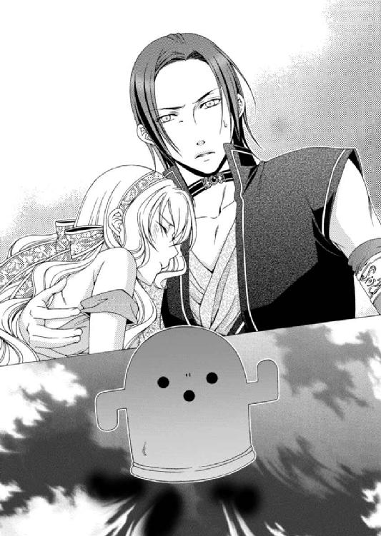
「これが、ゴンゴン......か」
アルバトルはゴンゴンの姿を見下ろして眉間に皺を寄せていた。これが土の使徒だとあまり信じたくないようだ。
「うんうん。今からご主人様の心を守るために、今いる守護使徒の力も借りてひとまずゾフィーを封印いたします。これを解除できるのはエスペンザだけです。その間、他の使徒の力は使えなくなりますので、皆様お忘れなく。エスペンザを見つけるまで封印は続くよ。はい、よろしこ」
誰に対してというわけでもなく、土の使徒・ゴンゴンは頭をせわしなく上下に振りながら、恐ろしく真剣な顔で説明している。口調はどこか軽いが、決してふざけているわけではないようだ。
「ゾフィーは五つの使徒が揃わなければ封印できないのではないのか？」
アルバトルがそう呟くと、ゴンゴンはルセリアの身体の上を歩き周りながら答えた。
「うんうん。あのね、封印している間、ゾフィーの力は他に害を及ぼせないようにできるけどね、ご主人様はどんどん弱っていくんだ。うんうん。他の使徒の力も使えないしね。うんうん。だから、まあ、早くエスペンザを探すことだな。そうすれば守護使徒を正常な状態で使える。うんうん。わかったかな。よろしこ」
自分がどれほど弱ろうと、これでしばらくはゾフィーは誰も傷つけられない。ルセリアはみんなを守ることができるのだ。
そう思うとほんの少しほっとすることができた。
「もう大丈夫だ、ルセリア......」
ルセリアを抱えるアルバトルの体温。しかし、彼の手が額を撫でる、そのぬくもりも感じることができない。
ゾフィーを封印したとしてもなおも治まることのない震えに、自分の身体が徐々に冷たくなっていくのが感じられた。
あ――。
意識が遠のく中、使徒たちの様々な記憶がルセリアの心に流れ込んでくる。
ルセリアは絡まる記憶の一部をひもといて驚いた。
どういうことなの――!?
「......光の使徒......」
アルバトルに伝えなければならない。なのに言葉が上手く出てこない。
「ああ、わかっている。必ず俺が見つけるから、安心して眠っていろ」
落ちてくる口づけは温かい。ずっと味わっていたいが、どうしても伝えなければならないことがルセリアにはあったのだ。
違う――。
「アルバトル......光の......」
そこまでしか言葉にできず、ルセリアの意識は深い場所へと沈んでいった。
光の使徒を見つけては......いけない――。
ＥＮＤ．
はじめましての方も以前からご存じの方も、こんにちは、あすかと申します。
砂漠も六冊目となりました。激動の六巻です。そして自分的にも激動の六巻でした。
この作品に取りかかっている最中、パソコンがクラッシュ。作家にとって何が一番の恐怖かと申し上げますと、パソコンのクラッシュによるデータ喪失です。
詳しいことは省きますが、今まで打っていたデータが目の前であっという間にすべて失われました。まだ四年目のパソコン。クラッシュなど想像もしませんでした。
電話をした担当さんの「ええ――っ！」と叫んだ声が忘れられないです。
もともと数日に一度、パソコンのバックアップを取っていたのですが、そのためのＳＤをクラッシュしたパソコンに繫げていたので一緒にデータが消失。
前月末に取った別のバックアップから、砂漠の六巻を打ち直しすることになったのですが、残っていたのは半分。もう少しで仕上がるところまで書いていたのに、半分のところから同じ内容を打ち直しすることになりました。
一度打った箇所をもう一度打つのは精神的につらかったです。
あとはもう締め切りとの戦いでした。書いて書いて書きまくりましたよ。そしてようやくラストまで書き上げ、最初から見直そうと戻ったら......。
できあがっていたはずの前半半分が歯抜けになっていました。
なんだこれ――っ!?
本当に絶叫していました。そしてすぐさま担当さんに連絡して、また締め切りを延ばしてもらう羽目に......。
身も心も折れそうになりました......本当に。でも手を止めるわけにはいかないので、逃亡したい気分を抑えつつ、最後までなんとか書き上げました。
パソコンはいきなりクラッシュする。実は何度もそういう目に遭い、その度に今度こそは毎日バックアップをと決意しつつ、のど元過ぎれば......で。だめですね。
でも、さすがにもう打ち直しは嫌です（笑）。
そんな中、アルバトルとゾフィーのシーンだけは二度目もノリノリで打ちました。ヒーローが苦境に立たされるシーンってものすごく好きなんです。あとそのときのグレディもお気に入りのシーンです。
普段、動揺しない人が誰かの身を案じて取り乱す姿は大好物です。彼がアルバトルに対してどういう秘密を持っているのか、次作でわかりますのでいろいろご想像しておいてやってくださいね。
それにしても去年末から機械が順に壊れています。昨年末はネットに繫いでいるマック。空気清浄機。今年に入ってクーラー。そして仕事用のウインドウズのパソコン。今はＤＶＤレコーダーの再生がやばいです。何かに呪われているようです（汗）。
もっとも仕事用のパソコンはネットには繫がず、余計なソフトも入れずに使ってきましたが、さすがに四年間、ほとんど電源が入ったままで、シャットダウンは数えるほどしかしたことがありません。ほぼフル稼働していたこともあって壊れても仕方なかったのかと、今更ながらに思います。
こういう事情もあって毎回、担当さんにはご迷惑をかけています。もう頭が上がりません。何度謝罪したかわからないのですが、これからもよろしくお願いします。
イラストの海里様、カラー表紙をいただいたときは、その華やかさにうっとりしました。
アルバトルとルセリアが甘い感じになっている中、ハーヴェイの麗しさは格別でした。いつも素敵イラストをありがとうございます。次の最終刊もどうぞよろしくお願いします。
ご感想をいただいた方にお送りするという小冊子。今のところまだできあがっていないので（本当に本当にすみません。もう......平謝りです）今年中には発送しようと短編を書いております。お待ちいただけるとうれしいです。
すでに小冊子ができております「刻の王国」、「プリンセスロード」の感想をくださった方々は先にお返事をさせていただいております。その場合、追加の切手は不要です。私の都合でわけて発送しておりますので、二枚入れていただく必要はありません。お気遣いくださった方々、ありがとうございました。
こちらの「刻の王国」は凪かすみ先生、「プリンセスロード」は香坂ゆう先生のカラーイラスト付きの番外小冊子をお送りしております。特にいつまでという期限はございませんので、読んでみたい方はそれぞれの作品の感想と切手を編集部宛にお送りくださいね。美麗な小冊子とともにプリロと刻ダムの同人誌についてのお知らせも併せてお送りしたいと思います♪
砂漠の冊子の内容は、酔いどれ砂漠・ルセリア編です。（アルバトル編はすでに記念冊子に書きました）ルセリアが酔っぱらってアルバトルに迫ります。アルバトルは男として受けて立つのか!? 今しばらくお待ちください♪
次回、七冊目で砂漠は完結します。ようやくここまで来ました。あと一冊。来年出る予定ですので、ぜひお待ちいただけるとうれしいです。
この作品を少しでも楽しんでいただけたことを心から願いつつ、また皆様にお会いできることを楽しみにしています。
ここまで読んでいただき本当にありがとうございました。
あすか
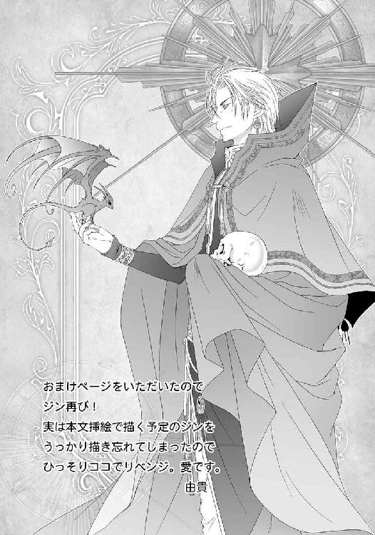
電子版 ビーズログ文庫
砂漠の薔薇と海の星
花嫁は闇に囚われる
著者／あすか
イラスト／由貴海里
2013年8月29日電子版ver.1.0発行
2015年2月28日電子版ver.1.1発行
発行人 青柳昌行
発行 株式会社KADOKAWA
〒102-8177 東京都千代田区富士見2-13-3
電話 0570-060-555（ナビダイヤル）
http://www.kadokawa.co.jp
企画・制作 エンターブレイン
デザイン 行成公江
(c)2011 Asuka
本電子書籍はビーズログ文庫『砂漠の薔薇と海の星 花嫁は闇に囚われる』（2011年11月25日発行 初刷）を元にして制作しております。